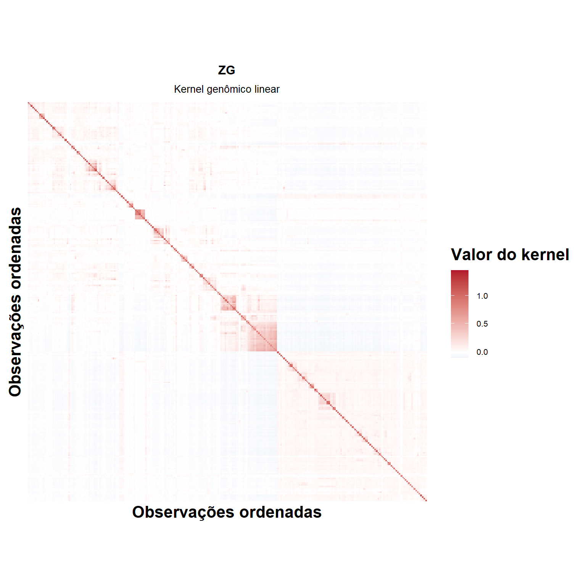
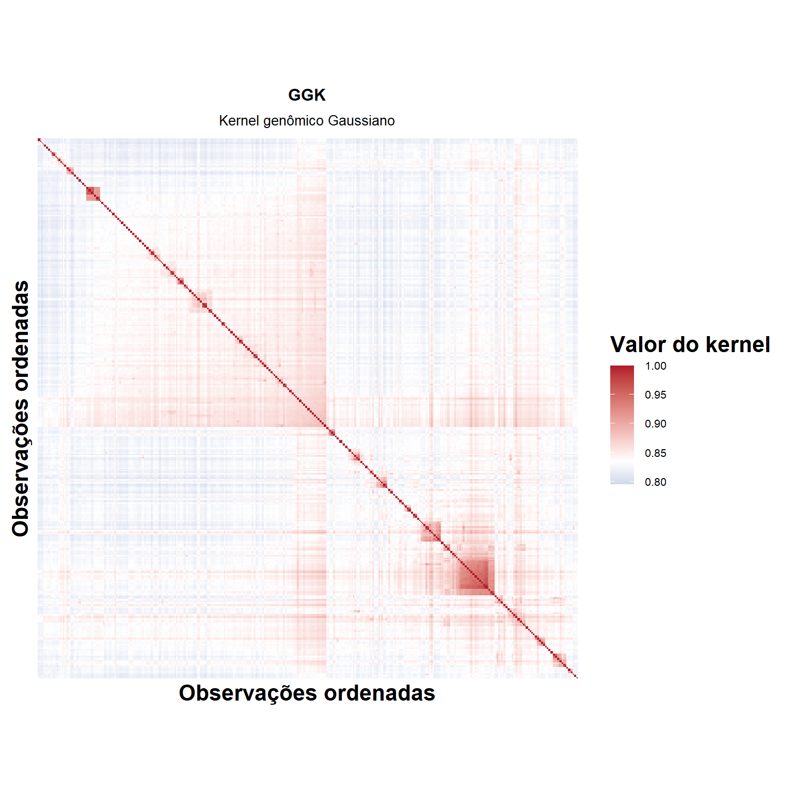
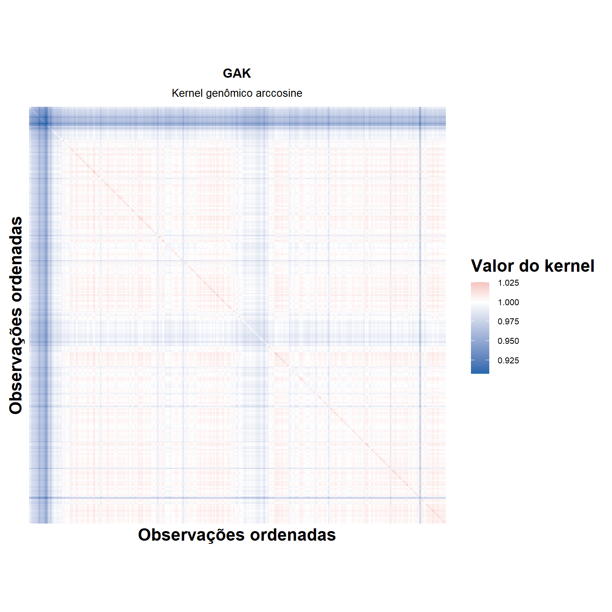
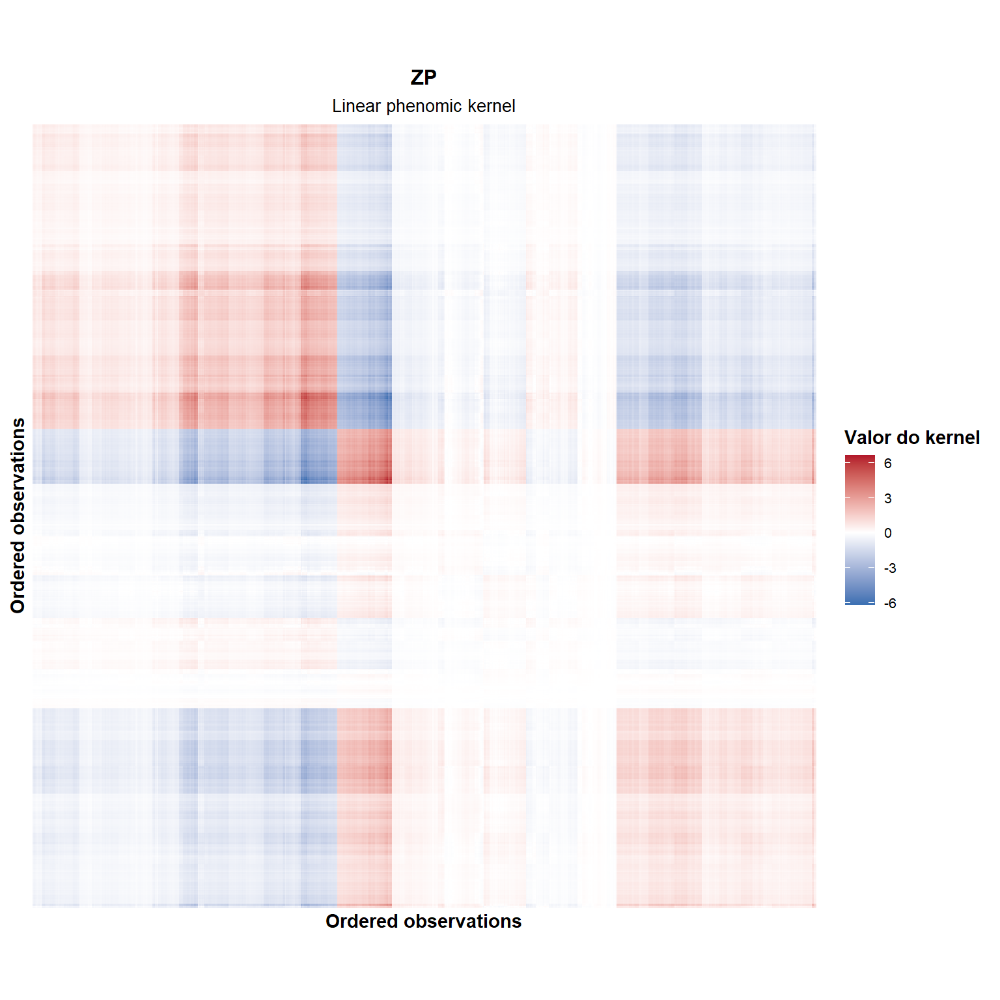
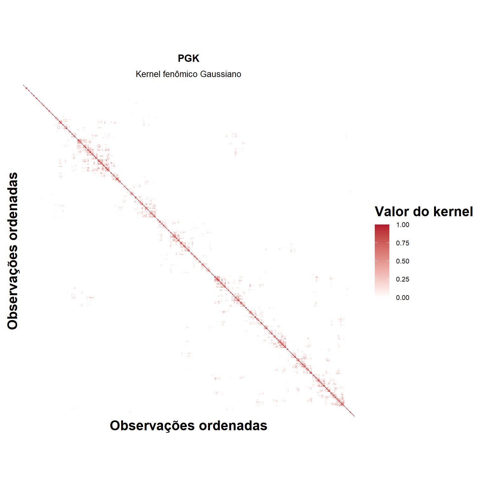
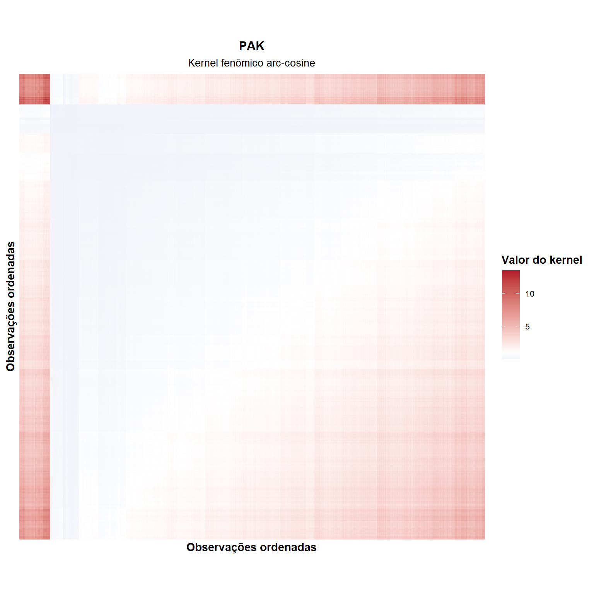

Last updated: 2026-05-05
Checks: 6 1
Knit directory:
Integrating-nir-genomic-kernel/
This reproducible R Markdown analysis was created with workflowr (version 1.7.2). The Checks tab describes the reproducibility checks that were applied when the results were created. The Past versions tab lists the development history.
The R Markdown file has unstaged changes. To know which version of
the R Markdown file created these results, you’ll want to first commit
it to the Git repo. If you’re still working on the analysis, you can
ignore this warning. When you’re finished, you can run
wflow_publish to commit the R Markdown file and build the
HTML.
Great job! The global environment was empty. Objects defined in the global environment can affect the analysis in your R Markdown file in unknown ways. For reproduciblity it’s best to always run the code in an empty environment.
The command set.seed(20250829) was run prior to running
the code in the R Markdown file. Setting a seed ensures that any results
that rely on randomness, e.g. subsampling or permutations, are
reproducible.
Great job! Recording the operating system, R version, and package versions is critical for reproducibility.
Nice! There were no cached chunks for this analysis, so you can be confident that you successfully produced the results during this run.
Great job! Using relative paths to the files within your workflowr project makes it easier to run your code on other machines.
Great! You are using Git for version control. Tracking code development and connecting the code version to the results is critical for reproducibility.
The results in this page were generated with repository version c3f4a7a. See the Past versions tab to see a history of the changes made to the R Markdown and HTML files.
Note that you need to be careful to ensure that all relevant files for
the analysis have been committed to Git prior to generating the results
(you can use wflow_publish or
wflow_git_commit). workflowr only checks the R Markdown
file, but you know if there are other scripts or data files that it
depends on. Below is the status of the Git repository when the results
were generated:
Ignored files:
Ignored: .Rhistory
Ignored: .Rproj.user/
Ignored: analysis/analysis.Rmd
Ignored: analysis/run_cv0_cv00_only.R
Ignored: analysis/run_cv1_cv2_only.R
Ignored: analysis/script_tabelas_resultados_pipeline_v2.R
Ignored: data/Article_documents/
Ignored: data/Maize-NIRS-GBS-main/
Ignored: output/Matrizes/Geno.all.rds
Ignored: output/Matrizes/NIR.all.rds
Ignored: output/Matrizes/figures/
Ignored: output/adjust_models.rar
Ignored: output/climate_results/combined_additional_climate_plots.tiff
Ignored: output/climate_results/combined_climate_plot.tiff
Ignored: output/climate_results/daily_air_temperature.tiff
Ignored: output/climate_results/daily_precipitation_by_month.tiff
Ignored: output/climate_results/daily_precipitation_overview.tiff
Ignored: output/climate_results/daily_relative_humidity.tiff
Ignored: output/climate_results/daily_solar_radiation.tiff
Ignored: output/climate_results/daily_wind_speed.tiff
Ignored: output/climate_results/monthly_precipitation_totals.tiff
Ignored: output/cv-schemes.tiff
Ignored: output/figures/
Ignored: output/results/
Ignored: output/tables/pipeline_review/
Ignored: output/tables/prediction_cv0_cv00_raw.csv
Ignored: output/tables/prediction_cv1_cv2_by_rep_fold_env.csv
Ignored: output/tables/prediction_cv1_cv2_raw.csv
Ignored: output/variance_components/bglr_runs/GY/rep01/Eta1/VC_GY_Eta1_rep01_ETA_E_varB.dat
Ignored: output/variance_components/bglr_runs/GY/rep01/Eta1/VC_GY_Eta1_rep01_ETA_GE_varU.dat
Ignored: output/variance_components/bglr_runs/GY/rep01/Eta1/VC_GY_Eta1_rep01_ETA_G_varU.dat
Ignored: output/variance_components/bglr_runs/GY/rep01/Eta1/VC_GY_Eta1_rep01_mu.dat
Ignored: output/variance_components/bglr_runs/GY/rep01/Eta1/VC_GY_Eta1_rep01_varE.dat
Ignored: output/variance_components/bglr_runs/GY/rep01/Eta10/VC_GY_Eta10_rep01_ETA_E_varB.dat
Ignored: output/variance_components/bglr_runs/GY/rep01/Eta10/VC_GY_Eta10_rep01_ETA_GE_varU.dat
Ignored: output/variance_components/bglr_runs/GY/rep01/Eta10/VC_GY_Eta10_rep01_ETA_GW_varU.dat
Ignored: output/variance_components/bglr_runs/GY/rep01/Eta10/VC_GY_Eta10_rep01_ETA_G_varU.dat
Ignored: output/variance_components/bglr_runs/GY/rep01/Eta10/VC_GY_Eta10_rep01_ETA_W_varU.dat
Ignored: output/variance_components/bglr_runs/GY/rep01/Eta10/VC_GY_Eta10_rep01_mu.dat
Ignored: output/variance_components/bglr_runs/GY/rep01/Eta10/VC_GY_Eta10_rep01_varE.dat
Ignored: output/variance_components/bglr_runs/GY/rep01/Eta11/VC_GY_Eta11_rep01_ETA_E_varB.dat
Ignored: output/variance_components/bglr_runs/GY/rep01/Eta11/VC_GY_Eta11_rep01_ETA_PE_varU.dat
Ignored: output/variance_components/bglr_runs/GY/rep01/Eta11/VC_GY_Eta11_rep01_ETA_PW_varU.dat
Ignored: output/variance_components/bglr_runs/GY/rep01/Eta11/VC_GY_Eta11_rep01_ETA_P_varU.dat
Ignored: output/variance_components/bglr_runs/GY/rep01/Eta11/VC_GY_Eta11_rep01_ETA_W_varU.dat
Ignored: output/variance_components/bglr_runs/GY/rep01/Eta11/VC_GY_Eta11_rep01_mu.dat
Ignored: output/variance_components/bglr_runs/GY/rep01/Eta11/VC_GY_Eta11_rep01_varE.dat
Ignored: output/variance_components/bglr_runs/GY/rep01/Eta12/VC_GY_Eta12_rep01_ETA_E_varB.dat
Ignored: output/variance_components/bglr_runs/GY/rep01/Eta12/VC_GY_Eta12_rep01_ETA_GE_varU.dat
Ignored: output/variance_components/bglr_runs/GY/rep01/Eta12/VC_GY_Eta12_rep01_ETA_GW_varU.dat
Ignored: output/variance_components/bglr_runs/GY/rep01/Eta12/VC_GY_Eta12_rep01_ETA_G_varU.dat
Ignored: output/variance_components/bglr_runs/GY/rep01/Eta12/VC_GY_Eta12_rep01_ETA_PE_varU.dat
Ignored: output/variance_components/bglr_runs/GY/rep01/Eta12/VC_GY_Eta12_rep01_ETA_PW_varU.dat
Ignored: output/variance_components/bglr_runs/GY/rep01/Eta12/VC_GY_Eta12_rep01_ETA_P_varU.dat
Ignored: output/variance_components/bglr_runs/GY/rep01/Eta12/VC_GY_Eta12_rep01_ETA_W_varU.dat
Ignored: output/variance_components/bglr_runs/GY/rep01/Eta12/VC_GY_Eta12_rep01_mu.dat
Ignored: output/variance_components/bglr_runs/GY/rep01/Eta12/VC_GY_Eta12_rep01_varE.dat
Ignored: output/variance_components/bglr_runs/GY/rep01/Eta13/VC_GY_Eta13_rep01_ETA_E_varB.dat
Ignored: output/variance_components/bglr_runs/GY/rep01/Eta13/VC_GY_Eta13_rep01_ETA_GGKE_varU.dat
Ignored: output/variance_components/bglr_runs/GY/rep01/Eta13/VC_GY_Eta13_rep01_ETA_GGKW_varU.dat
Ignored: output/variance_components/bglr_runs/GY/rep01/Eta13/VC_GY_Eta13_rep01_ETA_GGK_varU.dat
Ignored: output/variance_components/bglr_runs/GY/rep01/Eta13/VC_GY_Eta13_rep01_ETA_W_varU.dat
Ignored: output/variance_components/bglr_runs/GY/rep01/Eta13/VC_GY_Eta13_rep01_mu.dat
Ignored: output/variance_components/bglr_runs/GY/rep01/Eta13/VC_GY_Eta13_rep01_varE.dat
Ignored: output/variance_components/bglr_runs/GY/rep01/Eta14/VC_GY_Eta14_rep01_ETA_E_varB.dat
Ignored: output/variance_components/bglr_runs/GY/rep01/Eta14/VC_GY_Eta14_rep01_ETA_PGKE_varU.dat
Ignored: output/variance_components/bglr_runs/GY/rep01/Eta14/VC_GY_Eta14_rep01_ETA_PGKW_varU.dat
Ignored: output/variance_components/bglr_runs/GY/rep01/Eta14/VC_GY_Eta14_rep01_ETA_PGK_varU.dat
Ignored: output/variance_components/bglr_runs/GY/rep01/Eta14/VC_GY_Eta14_rep01_ETA_W_varU.dat
Ignored: output/variance_components/bglr_runs/GY/rep01/Eta14/VC_GY_Eta14_rep01_mu.dat
Ignored: output/variance_components/bglr_runs/GY/rep01/Eta14/VC_GY_Eta14_rep01_varE.dat
Ignored: output/variance_components/bglr_runs/GY/rep01/Eta15/VC_GY_Eta15_rep01_ETA_E_varB.dat
Ignored: output/variance_components/bglr_runs/GY/rep01/Eta15/VC_GY_Eta15_rep01_ETA_GGKE_varU.dat
Ignored: output/variance_components/bglr_runs/GY/rep01/Eta15/VC_GY_Eta15_rep01_ETA_GGKW_varU.dat
Ignored: output/variance_components/bglr_runs/GY/rep01/Eta15/VC_GY_Eta15_rep01_ETA_GGK_varU.dat
Ignored: output/variance_components/bglr_runs/GY/rep01/Eta15/VC_GY_Eta15_rep01_ETA_PGKE_varU.dat
Ignored: output/variance_components/bglr_runs/GY/rep01/Eta15/VC_GY_Eta15_rep01_ETA_PGKW_varU.dat
Ignored: output/variance_components/bglr_runs/GY/rep01/Eta15/VC_GY_Eta15_rep01_ETA_PGK_varU.dat
Ignored: output/variance_components/bglr_runs/GY/rep01/Eta15/VC_GY_Eta15_rep01_ETA_W_varU.dat
Ignored: output/variance_components/bglr_runs/GY/rep01/Eta15/VC_GY_Eta15_rep01_mu.dat
Ignored: output/variance_components/bglr_runs/GY/rep01/Eta15/VC_GY_Eta15_rep01_varE.dat
Ignored: output/variance_components/bglr_runs/GY/rep01/Eta16/VC_GY_Eta16_rep01_ETA_E_varB.dat
Ignored: output/variance_components/bglr_runs/GY/rep01/Eta16/VC_GY_Eta16_rep01_ETA_GAKE_varU.dat
Ignored: output/variance_components/bglr_runs/GY/rep01/Eta16/VC_GY_Eta16_rep01_ETA_GAKW_varU.dat
Ignored: output/variance_components/bglr_runs/GY/rep01/Eta16/VC_GY_Eta16_rep01_ETA_GAK_varU.dat
Ignored: output/variance_components/bglr_runs/GY/rep01/Eta16/VC_GY_Eta16_rep01_ETA_W_varU.dat
Ignored: output/variance_components/bglr_runs/GY/rep01/Eta16/VC_GY_Eta16_rep01_mu.dat
Ignored: output/variance_components/bglr_runs/GY/rep01/Eta16/VC_GY_Eta16_rep01_varE.dat
Ignored: output/variance_components/bglr_runs/GY/rep01/Eta17/VC_GY_Eta17_rep01_ETA_E_varB.dat
Ignored: output/variance_components/bglr_runs/GY/rep01/Eta17/VC_GY_Eta17_rep01_ETA_PAKE_varU.dat
Ignored: output/variance_components/bglr_runs/GY/rep01/Eta17/VC_GY_Eta17_rep01_ETA_PAKW_varU.dat
Ignored: output/variance_components/bglr_runs/GY/rep01/Eta17/VC_GY_Eta17_rep01_ETA_PAK_varU.dat
Ignored: output/variance_components/bglr_runs/GY/rep01/Eta17/VC_GY_Eta17_rep01_ETA_W_varU.dat
Ignored: output/variance_components/bglr_runs/GY/rep01/Eta17/VC_GY_Eta17_rep01_mu.dat
Ignored: output/variance_components/bglr_runs/GY/rep01/Eta17/VC_GY_Eta17_rep01_varE.dat
Ignored: output/variance_components/bglr_runs/GY/rep01/Eta18/VC_GY_Eta18_rep01_ETA_E_varB.dat
Ignored: output/variance_components/bglr_runs/GY/rep01/Eta18/VC_GY_Eta18_rep01_ETA_GAKE_varU.dat
Ignored: output/variance_components/bglr_runs/GY/rep01/Eta18/VC_GY_Eta18_rep01_ETA_GAKW_varU.dat
Ignored: output/variance_components/bglr_runs/GY/rep01/Eta18/VC_GY_Eta18_rep01_ETA_GAK_varU.dat
Ignored: output/variance_components/bglr_runs/GY/rep01/Eta18/VC_GY_Eta18_rep01_ETA_PAKE_varU.dat
Ignored: output/variance_components/bglr_runs/GY/rep01/Eta18/VC_GY_Eta18_rep01_ETA_PAKW_varU.dat
Ignored: output/variance_components/bglr_runs/GY/rep01/Eta18/VC_GY_Eta18_rep01_ETA_PAK_varU.dat
Ignored: output/variance_components/bglr_runs/GY/rep01/Eta18/VC_GY_Eta18_rep01_ETA_W_varU.dat
Ignored: output/variance_components/bglr_runs/GY/rep01/Eta18/VC_GY_Eta18_rep01_mu.dat
Ignored: output/variance_components/bglr_runs/GY/rep01/Eta18/VC_GY_Eta18_rep01_varE.dat
Ignored: output/variance_components/bglr_runs/GY/rep01/Eta2/VC_GY_Eta2_rep01_ETA_E_varB.dat
Ignored: output/variance_components/bglr_runs/GY/rep01/Eta2/VC_GY_Eta2_rep01_ETA_PE_varU.dat
Ignored: output/variance_components/bglr_runs/GY/rep01/Eta2/VC_GY_Eta2_rep01_ETA_P_varU.dat
Ignored: output/variance_components/bglr_runs/GY/rep01/Eta2/VC_GY_Eta2_rep01_mu.dat
Ignored: output/variance_components/bglr_runs/GY/rep01/Eta2/VC_GY_Eta2_rep01_varE.dat
Ignored: output/variance_components/bglr_runs/GY/rep01/Eta3/VC_GY_Eta3_rep01_ETA_E_varB.dat
Ignored: output/variance_components/bglr_runs/GY/rep01/Eta3/VC_GY_Eta3_rep01_ETA_GGKE_varU.dat
Ignored: output/variance_components/bglr_runs/GY/rep01/Eta3/VC_GY_Eta3_rep01_ETA_GGK_varU.dat
Ignored: output/variance_components/bglr_runs/GY/rep01/Eta3/VC_GY_Eta3_rep01_mu.dat
Ignored: output/variance_components/bglr_runs/GY/rep01/Eta3/VC_GY_Eta3_rep01_varE.dat
Ignored: output/variance_components/bglr_runs/GY/rep01/Eta4/VC_GY_Eta4_rep01_ETA_E_varB.dat
Ignored: output/variance_components/bglr_runs/GY/rep01/Eta4/VC_GY_Eta4_rep01_ETA_PGKE_varU.dat
Ignored: output/variance_components/bglr_runs/GY/rep01/Eta4/VC_GY_Eta4_rep01_ETA_PGK_varU.dat
Ignored: output/variance_components/bglr_runs/GY/rep01/Eta4/VC_GY_Eta4_rep01_mu.dat
Ignored: output/variance_components/bglr_runs/GY/rep01/Eta4/VC_GY_Eta4_rep01_varE.dat
Ignored: output/variance_components/bglr_runs/GY/rep01/Eta5/VC_GY_Eta5_rep01_ETA_E_varB.dat
Ignored: output/variance_components/bglr_runs/GY/rep01/Eta5/VC_GY_Eta5_rep01_ETA_GAKE_varU.dat
Ignored: output/variance_components/bglr_runs/GY/rep01/Eta5/VC_GY_Eta5_rep01_ETA_GAK_varU.dat
Ignored: output/variance_components/bglr_runs/GY/rep01/Eta5/VC_GY_Eta5_rep01_mu.dat
Ignored: output/variance_components/bglr_runs/GY/rep01/Eta5/VC_GY_Eta5_rep01_varE.dat
Ignored: output/variance_components/bglr_runs/GY/rep01/Eta6/VC_GY_Eta6_rep01_ETA_E_varB.dat
Ignored: output/variance_components/bglr_runs/GY/rep01/Eta6/VC_GY_Eta6_rep01_ETA_PAKE_varU.dat
Ignored: output/variance_components/bglr_runs/GY/rep01/Eta6/VC_GY_Eta6_rep01_ETA_PAK_varU.dat
Ignored: output/variance_components/bglr_runs/GY/rep01/Eta6/VC_GY_Eta6_rep01_mu.dat
Ignored: output/variance_components/bglr_runs/GY/rep01/Eta6/VC_GY_Eta6_rep01_varE.dat
Ignored: output/variance_components/bglr_runs/GY/rep01/Eta7/VC_GY_Eta7_rep01_ETA_E_varB.dat
Ignored: output/variance_components/bglr_runs/GY/rep01/Eta7/VC_GY_Eta7_rep01_ETA_GE_varU.dat
Ignored: output/variance_components/bglr_runs/GY/rep01/Eta7/VC_GY_Eta7_rep01_ETA_G_varU.dat
Ignored: output/variance_components/bglr_runs/GY/rep01/Eta7/VC_GY_Eta7_rep01_ETA_PE_varU.dat
Ignored: output/variance_components/bglr_runs/GY/rep01/Eta7/VC_GY_Eta7_rep01_ETA_P_varU.dat
Ignored: output/variance_components/bglr_runs/GY/rep01/Eta7/VC_GY_Eta7_rep01_mu.dat
Ignored: output/variance_components/bglr_runs/GY/rep01/Eta7/VC_GY_Eta7_rep01_varE.dat
Ignored: output/variance_components/bglr_runs/GY/rep01/Eta8/VC_GY_Eta8_rep01_ETA_E_varB.dat
Ignored: output/variance_components/bglr_runs/GY/rep01/Eta8/VC_GY_Eta8_rep01_ETA_GGKE_varU.dat
Ignored: output/variance_components/bglr_runs/GY/rep01/Eta8/VC_GY_Eta8_rep01_ETA_GGK_varU.dat
Ignored: output/variance_components/bglr_runs/GY/rep01/Eta8/VC_GY_Eta8_rep01_ETA_PGKE_varU.dat
Ignored: output/variance_components/bglr_runs/GY/rep01/Eta8/VC_GY_Eta8_rep01_ETA_PGK_varU.dat
Ignored: output/variance_components/bglr_runs/GY/rep01/Eta8/VC_GY_Eta8_rep01_mu.dat
Ignored: output/variance_components/bglr_runs/GY/rep01/Eta8/VC_GY_Eta8_rep01_varE.dat
Ignored: output/variance_components/bglr_runs/GY/rep01/Eta9/VC_GY_Eta9_rep01_ETA_E_varB.dat
Ignored: output/variance_components/bglr_runs/GY/rep01/Eta9/VC_GY_Eta9_rep01_ETA_GAKE_varU.dat
Ignored: output/variance_components/bglr_runs/GY/rep01/Eta9/VC_GY_Eta9_rep01_ETA_GAK_varU.dat
Ignored: output/variance_components/bglr_runs/GY/rep01/Eta9/VC_GY_Eta9_rep01_ETA_PAKE_varU.dat
Ignored: output/variance_components/bglr_runs/GY/rep01/Eta9/VC_GY_Eta9_rep01_ETA_PAK_varU.dat
Ignored: output/variance_components/bglr_runs/GY/rep01/Eta9/VC_GY_Eta9_rep01_mu.dat
Ignored: output/variance_components/bglr_runs/GY/rep01/Eta9/VC_GY_Eta9_rep01_varE.dat
Ignored: output/variance_components/bglr_runs/GY/rep02/Eta1/VC_GY_Eta1_rep02_ETA_E_varB.dat
Ignored: output/variance_components/bglr_runs/GY/rep02/Eta1/VC_GY_Eta1_rep02_ETA_GE_varU.dat
Ignored: output/variance_components/bglr_runs/GY/rep02/Eta1/VC_GY_Eta1_rep02_ETA_G_varU.dat
Ignored: output/variance_components/bglr_runs/GY/rep02/Eta1/VC_GY_Eta1_rep02_mu.dat
Ignored: output/variance_components/bglr_runs/GY/rep02/Eta1/VC_GY_Eta1_rep02_varE.dat
Ignored: output/variance_components/bglr_runs/GY/rep02/Eta10/VC_GY_Eta10_rep02_ETA_E_varB.dat
Ignored: output/variance_components/bglr_runs/GY/rep02/Eta10/VC_GY_Eta10_rep02_ETA_GE_varU.dat
Ignored: output/variance_components/bglr_runs/GY/rep02/Eta10/VC_GY_Eta10_rep02_ETA_GW_varU.dat
Ignored: output/variance_components/bglr_runs/GY/rep02/Eta10/VC_GY_Eta10_rep02_ETA_G_varU.dat
Ignored: output/variance_components/bglr_runs/GY/rep02/Eta10/VC_GY_Eta10_rep02_ETA_W_varU.dat
Ignored: output/variance_components/bglr_runs/GY/rep02/Eta10/VC_GY_Eta10_rep02_mu.dat
Ignored: output/variance_components/bglr_runs/GY/rep02/Eta10/VC_GY_Eta10_rep02_varE.dat
Ignored: output/variance_components/bglr_runs/GY/rep02/Eta11/VC_GY_Eta11_rep02_ETA_E_varB.dat
Ignored: output/variance_components/bglr_runs/GY/rep02/Eta11/VC_GY_Eta11_rep02_ETA_PE_varU.dat
Ignored: output/variance_components/bglr_runs/GY/rep02/Eta11/VC_GY_Eta11_rep02_ETA_PW_varU.dat
Ignored: output/variance_components/bglr_runs/GY/rep02/Eta11/VC_GY_Eta11_rep02_ETA_P_varU.dat
Ignored: output/variance_components/bglr_runs/GY/rep02/Eta11/VC_GY_Eta11_rep02_ETA_W_varU.dat
Ignored: output/variance_components/bglr_runs/GY/rep02/Eta11/VC_GY_Eta11_rep02_mu.dat
Ignored: output/variance_components/bglr_runs/GY/rep02/Eta11/VC_GY_Eta11_rep02_varE.dat
Ignored: output/variance_components/bglr_runs/GY/rep02/Eta12/VC_GY_Eta12_rep02_ETA_E_varB.dat
Ignored: output/variance_components/bglr_runs/GY/rep02/Eta12/VC_GY_Eta12_rep02_ETA_GE_varU.dat
Ignored: output/variance_components/bglr_runs/GY/rep02/Eta12/VC_GY_Eta12_rep02_ETA_GW_varU.dat
Ignored: output/variance_components/bglr_runs/GY/rep02/Eta12/VC_GY_Eta12_rep02_ETA_G_varU.dat
Ignored: output/variance_components/bglr_runs/GY/rep02/Eta12/VC_GY_Eta12_rep02_ETA_PE_varU.dat
Ignored: output/variance_components/bglr_runs/GY/rep02/Eta12/VC_GY_Eta12_rep02_ETA_PW_varU.dat
Ignored: output/variance_components/bglr_runs/GY/rep02/Eta12/VC_GY_Eta12_rep02_ETA_P_varU.dat
Ignored: output/variance_components/bglr_runs/GY/rep02/Eta12/VC_GY_Eta12_rep02_ETA_W_varU.dat
Ignored: output/variance_components/bglr_runs/GY/rep02/Eta12/VC_GY_Eta12_rep02_mu.dat
Ignored: output/variance_components/bglr_runs/GY/rep02/Eta12/VC_GY_Eta12_rep02_varE.dat
Ignored: output/variance_components/bglr_runs/GY/rep02/Eta13/VC_GY_Eta13_rep02_ETA_E_varB.dat
Ignored: output/variance_components/bglr_runs/GY/rep02/Eta13/VC_GY_Eta13_rep02_ETA_GGKE_varU.dat
Ignored: output/variance_components/bglr_runs/GY/rep02/Eta13/VC_GY_Eta13_rep02_ETA_GGKW_varU.dat
Ignored: output/variance_components/bglr_runs/GY/rep02/Eta13/VC_GY_Eta13_rep02_ETA_GGK_varU.dat
Ignored: output/variance_components/bglr_runs/GY/rep02/Eta13/VC_GY_Eta13_rep02_ETA_W_varU.dat
Ignored: output/variance_components/bglr_runs/GY/rep02/Eta13/VC_GY_Eta13_rep02_mu.dat
Ignored: output/variance_components/bglr_runs/GY/rep02/Eta13/VC_GY_Eta13_rep02_varE.dat
Ignored: output/variance_components/bglr_runs/GY/rep02/Eta14/VC_GY_Eta14_rep02_ETA_E_varB.dat
Ignored: output/variance_components/bglr_runs/GY/rep02/Eta14/VC_GY_Eta14_rep02_ETA_PGKE_varU.dat
Ignored: output/variance_components/bglr_runs/GY/rep02/Eta14/VC_GY_Eta14_rep02_ETA_PGKW_varU.dat
Ignored: output/variance_components/bglr_runs/GY/rep02/Eta14/VC_GY_Eta14_rep02_ETA_PGK_varU.dat
Ignored: output/variance_components/bglr_runs/GY/rep02/Eta14/VC_GY_Eta14_rep02_ETA_W_varU.dat
Ignored: output/variance_components/bglr_runs/GY/rep02/Eta14/VC_GY_Eta14_rep02_mu.dat
Ignored: output/variance_components/bglr_runs/GY/rep02/Eta14/VC_GY_Eta14_rep02_varE.dat
Ignored: output/variance_components/bglr_runs/GY/rep02/Eta15/VC_GY_Eta15_rep02_ETA_E_varB.dat
Ignored: output/variance_components/bglr_runs/GY/rep02/Eta15/VC_GY_Eta15_rep02_ETA_GGKE_varU.dat
Ignored: output/variance_components/bglr_runs/GY/rep02/Eta15/VC_GY_Eta15_rep02_ETA_GGKW_varU.dat
Ignored: output/variance_components/bglr_runs/GY/rep02/Eta15/VC_GY_Eta15_rep02_ETA_GGK_varU.dat
Ignored: output/variance_components/bglr_runs/GY/rep02/Eta15/VC_GY_Eta15_rep02_ETA_PGKE_varU.dat
Ignored: output/variance_components/bglr_runs/GY/rep02/Eta15/VC_GY_Eta15_rep02_ETA_PGKW_varU.dat
Ignored: output/variance_components/bglr_runs/GY/rep02/Eta15/VC_GY_Eta15_rep02_ETA_PGK_varU.dat
Ignored: output/variance_components/bglr_runs/GY/rep02/Eta15/VC_GY_Eta15_rep02_ETA_W_varU.dat
Ignored: output/variance_components/bglr_runs/GY/rep02/Eta15/VC_GY_Eta15_rep02_mu.dat
Ignored: output/variance_components/bglr_runs/GY/rep02/Eta15/VC_GY_Eta15_rep02_varE.dat
Ignored: output/variance_components/bglr_runs/GY/rep02/Eta16/VC_GY_Eta16_rep02_ETA_E_varB.dat
Ignored: output/variance_components/bglr_runs/GY/rep02/Eta16/VC_GY_Eta16_rep02_ETA_GAKE_varU.dat
Ignored: output/variance_components/bglr_runs/GY/rep02/Eta16/VC_GY_Eta16_rep02_ETA_GAKW_varU.dat
Ignored: output/variance_components/bglr_runs/GY/rep02/Eta16/VC_GY_Eta16_rep02_ETA_GAK_varU.dat
Ignored: output/variance_components/bglr_runs/GY/rep02/Eta16/VC_GY_Eta16_rep02_ETA_W_varU.dat
Ignored: output/variance_components/bglr_runs/GY/rep02/Eta16/VC_GY_Eta16_rep02_mu.dat
Ignored: output/variance_components/bglr_runs/GY/rep02/Eta16/VC_GY_Eta16_rep02_varE.dat
Ignored: output/variance_components/bglr_runs/GY/rep02/Eta17/VC_GY_Eta17_rep02_ETA_E_varB.dat
Ignored: output/variance_components/bglr_runs/GY/rep02/Eta17/VC_GY_Eta17_rep02_ETA_PAKE_varU.dat
Ignored: output/variance_components/bglr_runs/GY/rep02/Eta17/VC_GY_Eta17_rep02_ETA_PAKW_varU.dat
Ignored: output/variance_components/bglr_runs/GY/rep02/Eta17/VC_GY_Eta17_rep02_ETA_PAK_varU.dat
Ignored: output/variance_components/bglr_runs/GY/rep02/Eta17/VC_GY_Eta17_rep02_ETA_W_varU.dat
Ignored: output/variance_components/bglr_runs/GY/rep02/Eta17/VC_GY_Eta17_rep02_mu.dat
Ignored: output/variance_components/bglr_runs/GY/rep02/Eta17/VC_GY_Eta17_rep02_varE.dat
Ignored: output/variance_components/bglr_runs/GY/rep02/Eta18/VC_GY_Eta18_rep02_ETA_E_varB.dat
Ignored: output/variance_components/bglr_runs/GY/rep02/Eta18/VC_GY_Eta18_rep02_ETA_GAKE_varU.dat
Ignored: output/variance_components/bglr_runs/GY/rep02/Eta18/VC_GY_Eta18_rep02_ETA_GAKW_varU.dat
Ignored: output/variance_components/bglr_runs/GY/rep02/Eta18/VC_GY_Eta18_rep02_ETA_GAK_varU.dat
Ignored: output/variance_components/bglr_runs/GY/rep02/Eta18/VC_GY_Eta18_rep02_ETA_PAKE_varU.dat
Ignored: output/variance_components/bglr_runs/GY/rep02/Eta18/VC_GY_Eta18_rep02_ETA_PAKW_varU.dat
Ignored: output/variance_components/bglr_runs/GY/rep02/Eta18/VC_GY_Eta18_rep02_ETA_PAK_varU.dat
Ignored: output/variance_components/bglr_runs/GY/rep02/Eta18/VC_GY_Eta18_rep02_ETA_W_varU.dat
Ignored: output/variance_components/bglr_runs/GY/rep02/Eta18/VC_GY_Eta18_rep02_mu.dat
Ignored: output/variance_components/bglr_runs/GY/rep02/Eta18/VC_GY_Eta18_rep02_varE.dat
Ignored: output/variance_components/bglr_runs/GY/rep02/Eta2/VC_GY_Eta2_rep02_ETA_E_varB.dat
Ignored: output/variance_components/bglr_runs/GY/rep02/Eta2/VC_GY_Eta2_rep02_ETA_PE_varU.dat
Ignored: output/variance_components/bglr_runs/GY/rep02/Eta2/VC_GY_Eta2_rep02_ETA_P_varU.dat
Ignored: output/variance_components/bglr_runs/GY/rep02/Eta2/VC_GY_Eta2_rep02_mu.dat
Ignored: output/variance_components/bglr_runs/GY/rep02/Eta2/VC_GY_Eta2_rep02_varE.dat
Ignored: output/variance_components/bglr_runs/GY/rep02/Eta3/VC_GY_Eta3_rep02_ETA_E_varB.dat
Ignored: output/variance_components/bglr_runs/GY/rep02/Eta3/VC_GY_Eta3_rep02_ETA_GGKE_varU.dat
Ignored: output/variance_components/bglr_runs/GY/rep02/Eta3/VC_GY_Eta3_rep02_ETA_GGK_varU.dat
Ignored: output/variance_components/bglr_runs/GY/rep02/Eta3/VC_GY_Eta3_rep02_mu.dat
Ignored: output/variance_components/bglr_runs/GY/rep02/Eta3/VC_GY_Eta3_rep02_varE.dat
Ignored: output/variance_components/bglr_runs/GY/rep02/Eta4/VC_GY_Eta4_rep02_ETA_E_varB.dat
Ignored: output/variance_components/bglr_runs/GY/rep02/Eta4/VC_GY_Eta4_rep02_ETA_PGKE_varU.dat
Ignored: output/variance_components/bglr_runs/GY/rep02/Eta4/VC_GY_Eta4_rep02_ETA_PGK_varU.dat
Ignored: output/variance_components/bglr_runs/GY/rep02/Eta4/VC_GY_Eta4_rep02_mu.dat
Ignored: output/variance_components/bglr_runs/GY/rep02/Eta4/VC_GY_Eta4_rep02_varE.dat
Ignored: output/variance_components/bglr_runs/GY/rep02/Eta5/VC_GY_Eta5_rep02_ETA_E_varB.dat
Ignored: output/variance_components/bglr_runs/GY/rep02/Eta5/VC_GY_Eta5_rep02_ETA_GAKE_varU.dat
Ignored: output/variance_components/bglr_runs/GY/rep02/Eta5/VC_GY_Eta5_rep02_ETA_GAK_varU.dat
Ignored: output/variance_components/bglr_runs/GY/rep02/Eta5/VC_GY_Eta5_rep02_mu.dat
Ignored: output/variance_components/bglr_runs/GY/rep02/Eta5/VC_GY_Eta5_rep02_varE.dat
Ignored: output/variance_components/bglr_runs/GY/rep02/Eta6/VC_GY_Eta6_rep02_ETA_E_varB.dat
Ignored: output/variance_components/bglr_runs/GY/rep02/Eta6/VC_GY_Eta6_rep02_ETA_PAKE_varU.dat
Ignored: output/variance_components/bglr_runs/GY/rep02/Eta6/VC_GY_Eta6_rep02_ETA_PAK_varU.dat
Ignored: output/variance_components/bglr_runs/GY/rep02/Eta6/VC_GY_Eta6_rep02_mu.dat
Ignored: output/variance_components/bglr_runs/GY/rep02/Eta6/VC_GY_Eta6_rep02_varE.dat
Ignored: output/variance_components/bglr_runs/GY/rep02/Eta7/VC_GY_Eta7_rep02_ETA_E_varB.dat
Ignored: output/variance_components/bglr_runs/GY/rep02/Eta7/VC_GY_Eta7_rep02_ETA_GE_varU.dat
Ignored: output/variance_components/bglr_runs/GY/rep02/Eta7/VC_GY_Eta7_rep02_ETA_G_varU.dat
Ignored: output/variance_components/bglr_runs/GY/rep02/Eta7/VC_GY_Eta7_rep02_ETA_PE_varU.dat
Ignored: output/variance_components/bglr_runs/GY/rep02/Eta7/VC_GY_Eta7_rep02_ETA_P_varU.dat
Ignored: output/variance_components/bglr_runs/GY/rep02/Eta7/VC_GY_Eta7_rep02_mu.dat
Ignored: output/variance_components/bglr_runs/GY/rep02/Eta7/VC_GY_Eta7_rep02_varE.dat
Ignored: output/variance_components/bglr_runs/GY/rep02/Eta8/VC_GY_Eta8_rep02_ETA_E_varB.dat
Ignored: output/variance_components/bglr_runs/GY/rep02/Eta8/VC_GY_Eta8_rep02_ETA_GGKE_varU.dat
Ignored: output/variance_components/bglr_runs/GY/rep02/Eta8/VC_GY_Eta8_rep02_ETA_GGK_varU.dat
Ignored: output/variance_components/bglr_runs/GY/rep02/Eta8/VC_GY_Eta8_rep02_ETA_PGKE_varU.dat
Ignored: output/variance_components/bglr_runs/GY/rep02/Eta8/VC_GY_Eta8_rep02_ETA_PGK_varU.dat
Ignored: output/variance_components/bglr_runs/GY/rep02/Eta8/VC_GY_Eta8_rep02_mu.dat
Ignored: output/variance_components/bglr_runs/GY/rep02/Eta8/VC_GY_Eta8_rep02_varE.dat
Ignored: output/variance_components/bglr_runs/GY/rep02/Eta9/VC_GY_Eta9_rep02_ETA_E_varB.dat
Ignored: output/variance_components/bglr_runs/GY/rep02/Eta9/VC_GY_Eta9_rep02_ETA_GAKE_varU.dat
Ignored: output/variance_components/bglr_runs/GY/rep02/Eta9/VC_GY_Eta9_rep02_ETA_GAK_varU.dat
Ignored: output/variance_components/bglr_runs/GY/rep02/Eta9/VC_GY_Eta9_rep02_ETA_PAKE_varU.dat
Ignored: output/variance_components/bglr_runs/GY/rep02/Eta9/VC_GY_Eta9_rep02_ETA_PAK_varU.dat
Ignored: output/variance_components/bglr_runs/GY/rep02/Eta9/VC_GY_Eta9_rep02_mu.dat
Ignored: output/variance_components/bglr_runs/GY/rep02/Eta9/VC_GY_Eta9_rep02_varE.dat
Ignored: output/variance_components/bglr_runs/GY/rep03/Eta1/VC_GY_Eta1_rep03_ETA_E_varB.dat
Ignored: output/variance_components/bglr_runs/GY/rep03/Eta1/VC_GY_Eta1_rep03_ETA_GE_varU.dat
Ignored: output/variance_components/bglr_runs/GY/rep03/Eta1/VC_GY_Eta1_rep03_ETA_G_varU.dat
Ignored: output/variance_components/bglr_runs/GY/rep03/Eta1/VC_GY_Eta1_rep03_mu.dat
Ignored: output/variance_components/bglr_runs/GY/rep03/Eta1/VC_GY_Eta1_rep03_varE.dat
Ignored: output/variance_components/bglr_runs/GY/rep03/Eta10/VC_GY_Eta10_rep03_ETA_E_varB.dat
Ignored: output/variance_components/bglr_runs/GY/rep03/Eta10/VC_GY_Eta10_rep03_ETA_GE_varU.dat
Ignored: output/variance_components/bglr_runs/GY/rep03/Eta10/VC_GY_Eta10_rep03_ETA_GW_varU.dat
Ignored: output/variance_components/bglr_runs/GY/rep03/Eta10/VC_GY_Eta10_rep03_ETA_G_varU.dat
Ignored: output/variance_components/bglr_runs/GY/rep03/Eta10/VC_GY_Eta10_rep03_ETA_W_varU.dat
Ignored: output/variance_components/bglr_runs/GY/rep03/Eta10/VC_GY_Eta10_rep03_mu.dat
Ignored: output/variance_components/bglr_runs/GY/rep03/Eta10/VC_GY_Eta10_rep03_varE.dat
Ignored: output/variance_components/bglr_runs/GY/rep03/Eta11/VC_GY_Eta11_rep03_ETA_E_varB.dat
Ignored: output/variance_components/bglr_runs/GY/rep03/Eta11/VC_GY_Eta11_rep03_ETA_PE_varU.dat
Ignored: output/variance_components/bglr_runs/GY/rep03/Eta11/VC_GY_Eta11_rep03_ETA_PW_varU.dat
Ignored: output/variance_components/bglr_runs/GY/rep03/Eta11/VC_GY_Eta11_rep03_ETA_P_varU.dat
Ignored: output/variance_components/bglr_runs/GY/rep03/Eta11/VC_GY_Eta11_rep03_ETA_W_varU.dat
Ignored: output/variance_components/bglr_runs/GY/rep03/Eta11/VC_GY_Eta11_rep03_mu.dat
Ignored: output/variance_components/bglr_runs/GY/rep03/Eta11/VC_GY_Eta11_rep03_varE.dat
Ignored: output/variance_components/bglr_runs/GY/rep03/Eta12/VC_GY_Eta12_rep03_ETA_E_varB.dat
Ignored: output/variance_components/bglr_runs/GY/rep03/Eta12/VC_GY_Eta12_rep03_ETA_GE_varU.dat
Ignored: output/variance_components/bglr_runs/GY/rep03/Eta12/VC_GY_Eta12_rep03_ETA_GW_varU.dat
Ignored: output/variance_components/bglr_runs/GY/rep03/Eta12/VC_GY_Eta12_rep03_ETA_G_varU.dat
Ignored: output/variance_components/bglr_runs/GY/rep03/Eta12/VC_GY_Eta12_rep03_ETA_PE_varU.dat
Ignored: output/variance_components/bglr_runs/GY/rep03/Eta12/VC_GY_Eta12_rep03_ETA_PW_varU.dat
Ignored: output/variance_components/bglr_runs/GY/rep03/Eta12/VC_GY_Eta12_rep03_ETA_P_varU.dat
Ignored: output/variance_components/bglr_runs/GY/rep03/Eta12/VC_GY_Eta12_rep03_ETA_W_varU.dat
Ignored: output/variance_components/bglr_runs/GY/rep03/Eta12/VC_GY_Eta12_rep03_mu.dat
Ignored: output/variance_components/bglr_runs/GY/rep03/Eta12/VC_GY_Eta12_rep03_varE.dat
Ignored: output/variance_components/bglr_runs/GY/rep03/Eta13/VC_GY_Eta13_rep03_ETA_E_varB.dat
Ignored: output/variance_components/bglr_runs/GY/rep03/Eta13/VC_GY_Eta13_rep03_ETA_GGKE_varU.dat
Ignored: output/variance_components/bglr_runs/GY/rep03/Eta13/VC_GY_Eta13_rep03_ETA_GGKW_varU.dat
Ignored: output/variance_components/bglr_runs/GY/rep03/Eta13/VC_GY_Eta13_rep03_ETA_GGK_varU.dat
Ignored: output/variance_components/bglr_runs/GY/rep03/Eta13/VC_GY_Eta13_rep03_ETA_W_varU.dat
Ignored: output/variance_components/bglr_runs/GY/rep03/Eta13/VC_GY_Eta13_rep03_mu.dat
Ignored: output/variance_components/bglr_runs/GY/rep03/Eta13/VC_GY_Eta13_rep03_varE.dat
Ignored: output/variance_components/bglr_runs/GY/rep03/Eta14/VC_GY_Eta14_rep03_ETA_E_varB.dat
Ignored: output/variance_components/bglr_runs/GY/rep03/Eta14/VC_GY_Eta14_rep03_ETA_PGKE_varU.dat
Ignored: output/variance_components/bglr_runs/GY/rep03/Eta14/VC_GY_Eta14_rep03_ETA_PGKW_varU.dat
Ignored: output/variance_components/bglr_runs/GY/rep03/Eta14/VC_GY_Eta14_rep03_ETA_PGK_varU.dat
Ignored: output/variance_components/bglr_runs/GY/rep03/Eta14/VC_GY_Eta14_rep03_ETA_W_varU.dat
Ignored: output/variance_components/bglr_runs/GY/rep03/Eta14/VC_GY_Eta14_rep03_mu.dat
Ignored: output/variance_components/bglr_runs/GY/rep03/Eta14/VC_GY_Eta14_rep03_varE.dat
Ignored: output/variance_components/bglr_runs/GY/rep03/Eta15/VC_GY_Eta15_rep03_ETA_E_varB.dat
Ignored: output/variance_components/bglr_runs/GY/rep03/Eta15/VC_GY_Eta15_rep03_ETA_GGKE_varU.dat
Ignored: output/variance_components/bglr_runs/GY/rep03/Eta15/VC_GY_Eta15_rep03_ETA_GGKW_varU.dat
Ignored: output/variance_components/bglr_runs/GY/rep03/Eta15/VC_GY_Eta15_rep03_ETA_GGK_varU.dat
Ignored: output/variance_components/bglr_runs/GY/rep03/Eta15/VC_GY_Eta15_rep03_ETA_PGKE_varU.dat
Ignored: output/variance_components/bglr_runs/GY/rep03/Eta15/VC_GY_Eta15_rep03_ETA_PGKW_varU.dat
Ignored: output/variance_components/bglr_runs/GY/rep03/Eta15/VC_GY_Eta15_rep03_ETA_PGK_varU.dat
Ignored: output/variance_components/bglr_runs/GY/rep03/Eta15/VC_GY_Eta15_rep03_ETA_W_varU.dat
Ignored: output/variance_components/bglr_runs/GY/rep03/Eta15/VC_GY_Eta15_rep03_mu.dat
Ignored: output/variance_components/bglr_runs/GY/rep03/Eta15/VC_GY_Eta15_rep03_varE.dat
Ignored: output/variance_components/bglr_runs/GY/rep03/Eta16/VC_GY_Eta16_rep03_ETA_E_varB.dat
Ignored: output/variance_components/bglr_runs/GY/rep03/Eta16/VC_GY_Eta16_rep03_ETA_GAKE_varU.dat
Ignored: output/variance_components/bglr_runs/GY/rep03/Eta16/VC_GY_Eta16_rep03_ETA_GAKW_varU.dat
Ignored: output/variance_components/bglr_runs/GY/rep03/Eta16/VC_GY_Eta16_rep03_ETA_GAK_varU.dat
Ignored: output/variance_components/bglr_runs/GY/rep03/Eta16/VC_GY_Eta16_rep03_ETA_W_varU.dat
Ignored: output/variance_components/bglr_runs/GY/rep03/Eta16/VC_GY_Eta16_rep03_mu.dat
Ignored: output/variance_components/bglr_runs/GY/rep03/Eta16/VC_GY_Eta16_rep03_varE.dat
Ignored: output/variance_components/bglr_runs/GY/rep03/Eta17/VC_GY_Eta17_rep03_ETA_E_varB.dat
Ignored: output/variance_components/bglr_runs/GY/rep03/Eta17/VC_GY_Eta17_rep03_ETA_PAKE_varU.dat
Ignored: output/variance_components/bglr_runs/GY/rep03/Eta17/VC_GY_Eta17_rep03_ETA_PAKW_varU.dat
Ignored: output/variance_components/bglr_runs/GY/rep03/Eta17/VC_GY_Eta17_rep03_ETA_PAK_varU.dat
Ignored: output/variance_components/bglr_runs/GY/rep03/Eta17/VC_GY_Eta17_rep03_ETA_W_varU.dat
Ignored: output/variance_components/bglr_runs/GY/rep03/Eta17/VC_GY_Eta17_rep03_mu.dat
Ignored: output/variance_components/bglr_runs/GY/rep03/Eta17/VC_GY_Eta17_rep03_varE.dat
Ignored: output/variance_components/bglr_runs/GY/rep03/Eta18/VC_GY_Eta18_rep03_ETA_E_varB.dat
Ignored: output/variance_components/bglr_runs/GY/rep03/Eta18/VC_GY_Eta18_rep03_ETA_GAKE_varU.dat
Ignored: output/variance_components/bglr_runs/GY/rep03/Eta18/VC_GY_Eta18_rep03_ETA_GAKW_varU.dat
Ignored: output/variance_components/bglr_runs/GY/rep03/Eta18/VC_GY_Eta18_rep03_ETA_GAK_varU.dat
Ignored: output/variance_components/bglr_runs/GY/rep03/Eta18/VC_GY_Eta18_rep03_ETA_PAKE_varU.dat
Ignored: output/variance_components/bglr_runs/GY/rep03/Eta18/VC_GY_Eta18_rep03_ETA_PAKW_varU.dat
Ignored: output/variance_components/bglr_runs/GY/rep03/Eta18/VC_GY_Eta18_rep03_ETA_PAK_varU.dat
Ignored: output/variance_components/bglr_runs/GY/rep03/Eta18/VC_GY_Eta18_rep03_ETA_W_varU.dat
Ignored: output/variance_components/bglr_runs/GY/rep03/Eta18/VC_GY_Eta18_rep03_mu.dat
Ignored: output/variance_components/bglr_runs/GY/rep03/Eta18/VC_GY_Eta18_rep03_varE.dat
Ignored: output/variance_components/bglr_runs/GY/rep03/Eta2/VC_GY_Eta2_rep03_ETA_E_varB.dat
Ignored: output/variance_components/bglr_runs/GY/rep03/Eta2/VC_GY_Eta2_rep03_ETA_PE_varU.dat
Ignored: output/variance_components/bglr_runs/GY/rep03/Eta2/VC_GY_Eta2_rep03_ETA_P_varU.dat
Ignored: output/variance_components/bglr_runs/GY/rep03/Eta2/VC_GY_Eta2_rep03_mu.dat
Ignored: output/variance_components/bglr_runs/GY/rep03/Eta2/VC_GY_Eta2_rep03_varE.dat
Ignored: output/variance_components/bglr_runs/GY/rep03/Eta3/VC_GY_Eta3_rep03_ETA_E_varB.dat
Ignored: output/variance_components/bglr_runs/GY/rep03/Eta3/VC_GY_Eta3_rep03_ETA_GGKE_varU.dat
Ignored: output/variance_components/bglr_runs/GY/rep03/Eta3/VC_GY_Eta3_rep03_ETA_GGK_varU.dat
Ignored: output/variance_components/bglr_runs/GY/rep03/Eta3/VC_GY_Eta3_rep03_mu.dat
Ignored: output/variance_components/bglr_runs/GY/rep03/Eta3/VC_GY_Eta3_rep03_varE.dat
Ignored: output/variance_components/bglr_runs/GY/rep03/Eta4/VC_GY_Eta4_rep03_ETA_E_varB.dat
Ignored: output/variance_components/bglr_runs/GY/rep03/Eta4/VC_GY_Eta4_rep03_ETA_PGKE_varU.dat
Ignored: output/variance_components/bglr_runs/GY/rep03/Eta4/VC_GY_Eta4_rep03_ETA_PGK_varU.dat
Ignored: output/variance_components/bglr_runs/GY/rep03/Eta4/VC_GY_Eta4_rep03_mu.dat
Ignored: output/variance_components/bglr_runs/GY/rep03/Eta4/VC_GY_Eta4_rep03_varE.dat
Ignored: output/variance_components/bglr_runs/GY/rep03/Eta5/VC_GY_Eta5_rep03_ETA_E_varB.dat
Ignored: output/variance_components/bglr_runs/GY/rep03/Eta5/VC_GY_Eta5_rep03_ETA_GAKE_varU.dat
Ignored: output/variance_components/bglr_runs/GY/rep03/Eta5/VC_GY_Eta5_rep03_ETA_GAK_varU.dat
Ignored: output/variance_components/bglr_runs/GY/rep03/Eta5/VC_GY_Eta5_rep03_mu.dat
Ignored: output/variance_components/bglr_runs/GY/rep03/Eta5/VC_GY_Eta5_rep03_varE.dat
Ignored: output/variance_components/bglr_runs/GY/rep03/Eta6/VC_GY_Eta6_rep03_ETA_E_varB.dat
Ignored: output/variance_components/bglr_runs/GY/rep03/Eta6/VC_GY_Eta6_rep03_ETA_PAKE_varU.dat
Ignored: output/variance_components/bglr_runs/GY/rep03/Eta6/VC_GY_Eta6_rep03_ETA_PAK_varU.dat
Ignored: output/variance_components/bglr_runs/GY/rep03/Eta6/VC_GY_Eta6_rep03_mu.dat
Ignored: output/variance_components/bglr_runs/GY/rep03/Eta6/VC_GY_Eta6_rep03_varE.dat
Ignored: output/variance_components/bglr_runs/GY/rep03/Eta7/VC_GY_Eta7_rep03_ETA_E_varB.dat
Ignored: output/variance_components/bglr_runs/GY/rep03/Eta7/VC_GY_Eta7_rep03_ETA_GE_varU.dat
Ignored: output/variance_components/bglr_runs/GY/rep03/Eta7/VC_GY_Eta7_rep03_ETA_G_varU.dat
Ignored: output/variance_components/bglr_runs/GY/rep03/Eta7/VC_GY_Eta7_rep03_ETA_PE_varU.dat
Ignored: output/variance_components/bglr_runs/GY/rep03/Eta7/VC_GY_Eta7_rep03_ETA_P_varU.dat
Ignored: output/variance_components/bglr_runs/GY/rep03/Eta7/VC_GY_Eta7_rep03_mu.dat
Ignored: output/variance_components/bglr_runs/GY/rep03/Eta7/VC_GY_Eta7_rep03_varE.dat
Ignored: output/variance_components/bglr_runs/GY/rep03/Eta8/VC_GY_Eta8_rep03_ETA_E_varB.dat
Ignored: output/variance_components/bglr_runs/GY/rep03/Eta8/VC_GY_Eta8_rep03_ETA_GGKE_varU.dat
Ignored: output/variance_components/bglr_runs/GY/rep03/Eta8/VC_GY_Eta8_rep03_ETA_GGK_varU.dat
Ignored: output/variance_components/bglr_runs/GY/rep03/Eta8/VC_GY_Eta8_rep03_ETA_PGKE_varU.dat
Ignored: output/variance_components/bglr_runs/GY/rep03/Eta8/VC_GY_Eta8_rep03_ETA_PGK_varU.dat
Ignored: output/variance_components/bglr_runs/GY/rep03/Eta8/VC_GY_Eta8_rep03_mu.dat
Ignored: output/variance_components/bglr_runs/GY/rep03/Eta8/VC_GY_Eta8_rep03_varE.dat
Ignored: output/variance_components/bglr_runs/GY/rep03/Eta9/VC_GY_Eta9_rep03_ETA_E_varB.dat
Ignored: output/variance_components/bglr_runs/GY/rep03/Eta9/VC_GY_Eta9_rep03_ETA_GAKE_varU.dat
Ignored: output/variance_components/bglr_runs/GY/rep03/Eta9/VC_GY_Eta9_rep03_ETA_GAK_varU.dat
Ignored: output/variance_components/bglr_runs/GY/rep03/Eta9/VC_GY_Eta9_rep03_ETA_PAKE_varU.dat
Ignored: output/variance_components/bglr_runs/GY/rep03/Eta9/VC_GY_Eta9_rep03_ETA_PAK_varU.dat
Ignored: output/variance_components/bglr_runs/GY/rep03/Eta9/VC_GY_Eta9_rep03_mu.dat
Ignored: output/variance_components/bglr_runs/GY/rep03/Eta9/VC_GY_Eta9_rep03_varE.dat
Ignored: output/variance_components/bglr_runs/GY/rep04/Eta1/VC_GY_Eta1_rep04_ETA_E_varB.dat
Ignored: output/variance_components/bglr_runs/GY/rep04/Eta1/VC_GY_Eta1_rep04_ETA_GE_varU.dat
Ignored: output/variance_components/bglr_runs/GY/rep04/Eta1/VC_GY_Eta1_rep04_ETA_G_varU.dat
Ignored: output/variance_components/bglr_runs/GY/rep04/Eta1/VC_GY_Eta1_rep04_mu.dat
Ignored: output/variance_components/bglr_runs/GY/rep04/Eta1/VC_GY_Eta1_rep04_varE.dat
Ignored: output/variance_components/bglr_runs/GY/rep04/Eta10/VC_GY_Eta10_rep04_ETA_E_varB.dat
Ignored: output/variance_components/bglr_runs/GY/rep04/Eta10/VC_GY_Eta10_rep04_ETA_GE_varU.dat
Ignored: output/variance_components/bglr_runs/GY/rep04/Eta10/VC_GY_Eta10_rep04_ETA_GW_varU.dat
Ignored: output/variance_components/bglr_runs/GY/rep04/Eta10/VC_GY_Eta10_rep04_ETA_G_varU.dat
Ignored: output/variance_components/bglr_runs/GY/rep04/Eta10/VC_GY_Eta10_rep04_ETA_W_varU.dat
Ignored: output/variance_components/bglr_runs/GY/rep04/Eta10/VC_GY_Eta10_rep04_mu.dat
Ignored: output/variance_components/bglr_runs/GY/rep04/Eta10/VC_GY_Eta10_rep04_varE.dat
Ignored: output/variance_components/bglr_runs/GY/rep04/Eta11/VC_GY_Eta11_rep04_ETA_E_varB.dat
Ignored: output/variance_components/bglr_runs/GY/rep04/Eta11/VC_GY_Eta11_rep04_ETA_PE_varU.dat
Ignored: output/variance_components/bglr_runs/GY/rep04/Eta11/VC_GY_Eta11_rep04_ETA_PW_varU.dat
Ignored: output/variance_components/bglr_runs/GY/rep04/Eta11/VC_GY_Eta11_rep04_ETA_P_varU.dat
Ignored: output/variance_components/bglr_runs/GY/rep04/Eta11/VC_GY_Eta11_rep04_ETA_W_varU.dat
Ignored: output/variance_components/bglr_runs/GY/rep04/Eta11/VC_GY_Eta11_rep04_mu.dat
Ignored: output/variance_components/bglr_runs/GY/rep04/Eta11/VC_GY_Eta11_rep04_varE.dat
Ignored: output/variance_components/bglr_runs/GY/rep04/Eta12/VC_GY_Eta12_rep04_ETA_E_varB.dat
Ignored: output/variance_components/bglr_runs/GY/rep04/Eta12/VC_GY_Eta12_rep04_ETA_GE_varU.dat
Ignored: output/variance_components/bglr_runs/GY/rep04/Eta12/VC_GY_Eta12_rep04_ETA_GW_varU.dat
Ignored: output/variance_components/bglr_runs/GY/rep04/Eta12/VC_GY_Eta12_rep04_ETA_G_varU.dat
Ignored: output/variance_components/bglr_runs/GY/rep04/Eta12/VC_GY_Eta12_rep04_ETA_PE_varU.dat
Ignored: output/variance_components/bglr_runs/GY/rep04/Eta12/VC_GY_Eta12_rep04_ETA_PW_varU.dat
Ignored: output/variance_components/bglr_runs/GY/rep04/Eta12/VC_GY_Eta12_rep04_ETA_P_varU.dat
Ignored: output/variance_components/bglr_runs/GY/rep04/Eta12/VC_GY_Eta12_rep04_ETA_W_varU.dat
Ignored: output/variance_components/bglr_runs/GY/rep04/Eta12/VC_GY_Eta12_rep04_mu.dat
Ignored: output/variance_components/bglr_runs/GY/rep04/Eta12/VC_GY_Eta12_rep04_varE.dat
Ignored: output/variance_components/bglr_runs/GY/rep04/Eta13/VC_GY_Eta13_rep04_ETA_E_varB.dat
Ignored: output/variance_components/bglr_runs/GY/rep04/Eta13/VC_GY_Eta13_rep04_ETA_GGKE_varU.dat
Ignored: output/variance_components/bglr_runs/GY/rep04/Eta13/VC_GY_Eta13_rep04_ETA_GGKW_varU.dat
Ignored: output/variance_components/bglr_runs/GY/rep04/Eta13/VC_GY_Eta13_rep04_ETA_GGK_varU.dat
Ignored: output/variance_components/bglr_runs/GY/rep04/Eta13/VC_GY_Eta13_rep04_ETA_W_varU.dat
Ignored: output/variance_components/bglr_runs/GY/rep04/Eta13/VC_GY_Eta13_rep04_mu.dat
Ignored: output/variance_components/bglr_runs/GY/rep04/Eta13/VC_GY_Eta13_rep04_varE.dat
Ignored: output/variance_components/bglr_runs/GY/rep04/Eta14/VC_GY_Eta14_rep04_ETA_E_varB.dat
Ignored: output/variance_components/bglr_runs/GY/rep04/Eta14/VC_GY_Eta14_rep04_ETA_PGKE_varU.dat
Ignored: output/variance_components/bglr_runs/GY/rep04/Eta14/VC_GY_Eta14_rep04_ETA_PGKW_varU.dat
Ignored: output/variance_components/bglr_runs/GY/rep04/Eta14/VC_GY_Eta14_rep04_ETA_PGK_varU.dat
Ignored: output/variance_components/bglr_runs/GY/rep04/Eta14/VC_GY_Eta14_rep04_ETA_W_varU.dat
Ignored: output/variance_components/bglr_runs/GY/rep04/Eta14/VC_GY_Eta14_rep04_mu.dat
Ignored: output/variance_components/bglr_runs/GY/rep04/Eta14/VC_GY_Eta14_rep04_varE.dat
Ignored: output/variance_components/bglr_runs/GY/rep04/Eta15/VC_GY_Eta15_rep04_ETA_E_varB.dat
Ignored: output/variance_components/bglr_runs/GY/rep04/Eta15/VC_GY_Eta15_rep04_ETA_GGKE_varU.dat
Ignored: output/variance_components/bglr_runs/GY/rep04/Eta15/VC_GY_Eta15_rep04_ETA_GGKW_varU.dat
Ignored: output/variance_components/bglr_runs/GY/rep04/Eta15/VC_GY_Eta15_rep04_ETA_GGK_varU.dat
Ignored: output/variance_components/bglr_runs/GY/rep04/Eta15/VC_GY_Eta15_rep04_ETA_PGKE_varU.dat
Ignored: output/variance_components/bglr_runs/GY/rep04/Eta15/VC_GY_Eta15_rep04_ETA_PGKW_varU.dat
Ignored: output/variance_components/bglr_runs/GY/rep04/Eta15/VC_GY_Eta15_rep04_ETA_PGK_varU.dat
Ignored: output/variance_components/bglr_runs/GY/rep04/Eta15/VC_GY_Eta15_rep04_ETA_W_varU.dat
Ignored: output/variance_components/bglr_runs/GY/rep04/Eta15/VC_GY_Eta15_rep04_mu.dat
Ignored: output/variance_components/bglr_runs/GY/rep04/Eta15/VC_GY_Eta15_rep04_varE.dat
Ignored: output/variance_components/bglr_runs/GY/rep04/Eta16/VC_GY_Eta16_rep04_ETA_E_varB.dat
Ignored: output/variance_components/bglr_runs/GY/rep04/Eta16/VC_GY_Eta16_rep04_ETA_GAKE_varU.dat
Ignored: output/variance_components/bglr_runs/GY/rep04/Eta16/VC_GY_Eta16_rep04_ETA_GAKW_varU.dat
Ignored: output/variance_components/bglr_runs/GY/rep04/Eta16/VC_GY_Eta16_rep04_ETA_GAK_varU.dat
Ignored: output/variance_components/bglr_runs/GY/rep04/Eta16/VC_GY_Eta16_rep04_ETA_W_varU.dat
Ignored: output/variance_components/bglr_runs/GY/rep04/Eta16/VC_GY_Eta16_rep04_mu.dat
Ignored: output/variance_components/bglr_runs/GY/rep04/Eta16/VC_GY_Eta16_rep04_varE.dat
Ignored: output/variance_components/bglr_runs/GY/rep04/Eta17/VC_GY_Eta17_rep04_ETA_E_varB.dat
Ignored: output/variance_components/bglr_runs/GY/rep04/Eta17/VC_GY_Eta17_rep04_ETA_PAKE_varU.dat
Ignored: output/variance_components/bglr_runs/GY/rep04/Eta17/VC_GY_Eta17_rep04_ETA_PAKW_varU.dat
Ignored: output/variance_components/bglr_runs/GY/rep04/Eta17/VC_GY_Eta17_rep04_ETA_PAK_varU.dat
Ignored: output/variance_components/bglr_runs/GY/rep04/Eta17/VC_GY_Eta17_rep04_ETA_W_varU.dat
Ignored: output/variance_components/bglr_runs/GY/rep04/Eta17/VC_GY_Eta17_rep04_mu.dat
Ignored: output/variance_components/bglr_runs/GY/rep04/Eta17/VC_GY_Eta17_rep04_varE.dat
Ignored: output/variance_components/bglr_runs/GY/rep04/Eta18/VC_GY_Eta18_rep04_ETA_E_varB.dat
Ignored: output/variance_components/bglr_runs/GY/rep04/Eta18/VC_GY_Eta18_rep04_ETA_GAKE_varU.dat
Ignored: output/variance_components/bglr_runs/GY/rep04/Eta18/VC_GY_Eta18_rep04_ETA_GAKW_varU.dat
Ignored: output/variance_components/bglr_runs/GY/rep04/Eta18/VC_GY_Eta18_rep04_ETA_GAK_varU.dat
Ignored: output/variance_components/bglr_runs/GY/rep04/Eta18/VC_GY_Eta18_rep04_ETA_PAKE_varU.dat
Ignored: output/variance_components/bglr_runs/GY/rep04/Eta18/VC_GY_Eta18_rep04_ETA_PAKW_varU.dat
Ignored: output/variance_components/bglr_runs/GY/rep04/Eta18/VC_GY_Eta18_rep04_ETA_PAK_varU.dat
Ignored: output/variance_components/bglr_runs/GY/rep04/Eta18/VC_GY_Eta18_rep04_ETA_W_varU.dat
Ignored: output/variance_components/bglr_runs/GY/rep04/Eta18/VC_GY_Eta18_rep04_mu.dat
Ignored: output/variance_components/bglr_runs/GY/rep04/Eta18/VC_GY_Eta18_rep04_varE.dat
Ignored: output/variance_components/bglr_runs/GY/rep04/Eta2/VC_GY_Eta2_rep04_ETA_E_varB.dat
Ignored: output/variance_components/bglr_runs/GY/rep04/Eta2/VC_GY_Eta2_rep04_ETA_PE_varU.dat
Ignored: output/variance_components/bglr_runs/GY/rep04/Eta2/VC_GY_Eta2_rep04_ETA_P_varU.dat
Ignored: output/variance_components/bglr_runs/GY/rep04/Eta2/VC_GY_Eta2_rep04_mu.dat
Ignored: output/variance_components/bglr_runs/GY/rep04/Eta2/VC_GY_Eta2_rep04_varE.dat
Ignored: output/variance_components/bglr_runs/GY/rep04/Eta3/VC_GY_Eta3_rep04_ETA_E_varB.dat
Ignored: output/variance_components/bglr_runs/GY/rep04/Eta3/VC_GY_Eta3_rep04_ETA_GGKE_varU.dat
Ignored: output/variance_components/bglr_runs/GY/rep04/Eta3/VC_GY_Eta3_rep04_ETA_GGK_varU.dat
Ignored: output/variance_components/bglr_runs/GY/rep04/Eta3/VC_GY_Eta3_rep04_mu.dat
Ignored: output/variance_components/bglr_runs/GY/rep04/Eta3/VC_GY_Eta3_rep04_varE.dat
Ignored: output/variance_components/bglr_runs/GY/rep04/Eta4/VC_GY_Eta4_rep04_ETA_E_varB.dat
Ignored: output/variance_components/bglr_runs/GY/rep04/Eta4/VC_GY_Eta4_rep04_ETA_PGKE_varU.dat
Ignored: output/variance_components/bglr_runs/GY/rep04/Eta4/VC_GY_Eta4_rep04_ETA_PGK_varU.dat
Ignored: output/variance_components/bglr_runs/GY/rep04/Eta4/VC_GY_Eta4_rep04_mu.dat
Ignored: output/variance_components/bglr_runs/GY/rep04/Eta4/VC_GY_Eta4_rep04_varE.dat
Ignored: output/variance_components/bglr_runs/GY/rep04/Eta5/VC_GY_Eta5_rep04_ETA_E_varB.dat
Ignored: output/variance_components/bglr_runs/GY/rep04/Eta5/VC_GY_Eta5_rep04_ETA_GAKE_varU.dat
Ignored: output/variance_components/bglr_runs/GY/rep04/Eta5/VC_GY_Eta5_rep04_ETA_GAK_varU.dat
Ignored: output/variance_components/bglr_runs/GY/rep04/Eta5/VC_GY_Eta5_rep04_mu.dat
Ignored: output/variance_components/bglr_runs/GY/rep04/Eta5/VC_GY_Eta5_rep04_varE.dat
Ignored: output/variance_components/bglr_runs/GY/rep04/Eta6/VC_GY_Eta6_rep04_ETA_E_varB.dat
Ignored: output/variance_components/bglr_runs/GY/rep04/Eta6/VC_GY_Eta6_rep04_ETA_PAKE_varU.dat
Ignored: output/variance_components/bglr_runs/GY/rep04/Eta6/VC_GY_Eta6_rep04_ETA_PAK_varU.dat
Ignored: output/variance_components/bglr_runs/GY/rep04/Eta6/VC_GY_Eta6_rep04_mu.dat
Ignored: output/variance_components/bglr_runs/GY/rep04/Eta6/VC_GY_Eta6_rep04_varE.dat
Ignored: output/variance_components/bglr_runs/GY/rep04/Eta7/VC_GY_Eta7_rep04_ETA_E_varB.dat
Ignored: output/variance_components/bglr_runs/GY/rep04/Eta7/VC_GY_Eta7_rep04_ETA_GE_varU.dat
Ignored: output/variance_components/bglr_runs/GY/rep04/Eta7/VC_GY_Eta7_rep04_ETA_G_varU.dat
Ignored: output/variance_components/bglr_runs/GY/rep04/Eta7/VC_GY_Eta7_rep04_ETA_PE_varU.dat
Ignored: output/variance_components/bglr_runs/GY/rep04/Eta7/VC_GY_Eta7_rep04_ETA_P_varU.dat
Ignored: output/variance_components/bglr_runs/GY/rep04/Eta7/VC_GY_Eta7_rep04_mu.dat
Ignored: output/variance_components/bglr_runs/GY/rep04/Eta7/VC_GY_Eta7_rep04_varE.dat
Ignored: output/variance_components/bglr_runs/GY/rep04/Eta8/VC_GY_Eta8_rep04_ETA_E_varB.dat
Ignored: output/variance_components/bglr_runs/GY/rep04/Eta8/VC_GY_Eta8_rep04_ETA_GGKE_varU.dat
Ignored: output/variance_components/bglr_runs/GY/rep04/Eta8/VC_GY_Eta8_rep04_ETA_GGK_varU.dat
Ignored: output/variance_components/bglr_runs/GY/rep04/Eta8/VC_GY_Eta8_rep04_ETA_PGKE_varU.dat
Ignored: output/variance_components/bglr_runs/GY/rep04/Eta8/VC_GY_Eta8_rep04_ETA_PGK_varU.dat
Ignored: output/variance_components/bglr_runs/GY/rep04/Eta8/VC_GY_Eta8_rep04_mu.dat
Ignored: output/variance_components/bglr_runs/GY/rep04/Eta8/VC_GY_Eta8_rep04_varE.dat
Ignored: output/variance_components/bglr_runs/GY/rep04/Eta9/VC_GY_Eta9_rep04_ETA_E_varB.dat
Ignored: output/variance_components/bglr_runs/GY/rep04/Eta9/VC_GY_Eta9_rep04_ETA_GAKE_varU.dat
Ignored: output/variance_components/bglr_runs/GY/rep04/Eta9/VC_GY_Eta9_rep04_ETA_GAK_varU.dat
Ignored: output/variance_components/bglr_runs/GY/rep04/Eta9/VC_GY_Eta9_rep04_ETA_PAKE_varU.dat
Ignored: output/variance_components/bglr_runs/GY/rep04/Eta9/VC_GY_Eta9_rep04_ETA_PAK_varU.dat
Ignored: output/variance_components/bglr_runs/GY/rep04/Eta9/VC_GY_Eta9_rep04_mu.dat
Ignored: output/variance_components/bglr_runs/GY/rep04/Eta9/VC_GY_Eta9_rep04_varE.dat
Ignored: output/variance_components/bglr_runs/GY/rep05/Eta1/VC_GY_Eta1_rep05_ETA_E_varB.dat
Ignored: output/variance_components/bglr_runs/GY/rep05/Eta1/VC_GY_Eta1_rep05_ETA_GE_varU.dat
Ignored: output/variance_components/bglr_runs/GY/rep05/Eta1/VC_GY_Eta1_rep05_ETA_G_varU.dat
Ignored: output/variance_components/bglr_runs/GY/rep05/Eta1/VC_GY_Eta1_rep05_mu.dat
Ignored: output/variance_components/bglr_runs/GY/rep05/Eta1/VC_GY_Eta1_rep05_varE.dat
Ignored: output/variance_components/bglr_runs/GY/rep05/Eta10/VC_GY_Eta10_rep05_ETA_E_varB.dat
Ignored: output/variance_components/bglr_runs/GY/rep05/Eta10/VC_GY_Eta10_rep05_ETA_GE_varU.dat
Ignored: output/variance_components/bglr_runs/GY/rep05/Eta10/VC_GY_Eta10_rep05_ETA_GW_varU.dat
Ignored: output/variance_components/bglr_runs/GY/rep05/Eta10/VC_GY_Eta10_rep05_ETA_G_varU.dat
Ignored: output/variance_components/bglr_runs/GY/rep05/Eta10/VC_GY_Eta10_rep05_ETA_W_varU.dat
Ignored: output/variance_components/bglr_runs/GY/rep05/Eta10/VC_GY_Eta10_rep05_mu.dat
Ignored: output/variance_components/bglr_runs/GY/rep05/Eta10/VC_GY_Eta10_rep05_varE.dat
Ignored: output/variance_components/bglr_runs/GY/rep05/Eta11/VC_GY_Eta11_rep05_ETA_E_varB.dat
Ignored: output/variance_components/bglr_runs/GY/rep05/Eta11/VC_GY_Eta11_rep05_ETA_PE_varU.dat
Ignored: output/variance_components/bglr_runs/GY/rep05/Eta11/VC_GY_Eta11_rep05_ETA_PW_varU.dat
Ignored: output/variance_components/bglr_runs/GY/rep05/Eta11/VC_GY_Eta11_rep05_ETA_P_varU.dat
Ignored: output/variance_components/bglr_runs/GY/rep05/Eta11/VC_GY_Eta11_rep05_ETA_W_varU.dat
Ignored: output/variance_components/bglr_runs/GY/rep05/Eta11/VC_GY_Eta11_rep05_mu.dat
Ignored: output/variance_components/bglr_runs/GY/rep05/Eta11/VC_GY_Eta11_rep05_varE.dat
Ignored: output/variance_components/bglr_runs/GY/rep05/Eta12/VC_GY_Eta12_rep05_ETA_E_varB.dat
Ignored: output/variance_components/bglr_runs/GY/rep05/Eta12/VC_GY_Eta12_rep05_ETA_GE_varU.dat
Ignored: output/variance_components/bglr_runs/GY/rep05/Eta12/VC_GY_Eta12_rep05_ETA_GW_varU.dat
Ignored: output/variance_components/bglr_runs/GY/rep05/Eta12/VC_GY_Eta12_rep05_ETA_G_varU.dat
Ignored: output/variance_components/bglr_runs/GY/rep05/Eta12/VC_GY_Eta12_rep05_ETA_PE_varU.dat
Ignored: output/variance_components/bglr_runs/GY/rep05/Eta12/VC_GY_Eta12_rep05_ETA_PW_varU.dat
Ignored: output/variance_components/bglr_runs/GY/rep05/Eta12/VC_GY_Eta12_rep05_ETA_P_varU.dat
Ignored: output/variance_components/bglr_runs/GY/rep05/Eta12/VC_GY_Eta12_rep05_ETA_W_varU.dat
Ignored: output/variance_components/bglr_runs/GY/rep05/Eta12/VC_GY_Eta12_rep05_mu.dat
Ignored: output/variance_components/bglr_runs/GY/rep05/Eta12/VC_GY_Eta12_rep05_varE.dat
Ignored: output/variance_components/bglr_runs/GY/rep05/Eta13/VC_GY_Eta13_rep05_ETA_E_varB.dat
Ignored: output/variance_components/bglr_runs/GY/rep05/Eta13/VC_GY_Eta13_rep05_ETA_GGKE_varU.dat
Ignored: output/variance_components/bglr_runs/GY/rep05/Eta13/VC_GY_Eta13_rep05_ETA_GGKW_varU.dat
Ignored: output/variance_components/bglr_runs/GY/rep05/Eta13/VC_GY_Eta13_rep05_ETA_GGK_varU.dat
Ignored: output/variance_components/bglr_runs/GY/rep05/Eta13/VC_GY_Eta13_rep05_ETA_W_varU.dat
Ignored: output/variance_components/bglr_runs/GY/rep05/Eta13/VC_GY_Eta13_rep05_mu.dat
Ignored: output/variance_components/bglr_runs/GY/rep05/Eta13/VC_GY_Eta13_rep05_varE.dat
Ignored: output/variance_components/bglr_runs/GY/rep05/Eta14/VC_GY_Eta14_rep05_ETA_E_varB.dat
Ignored: output/variance_components/bglr_runs/GY/rep05/Eta14/VC_GY_Eta14_rep05_ETA_PGKE_varU.dat
Ignored: output/variance_components/bglr_runs/GY/rep05/Eta14/VC_GY_Eta14_rep05_ETA_PGKW_varU.dat
Ignored: output/variance_components/bglr_runs/GY/rep05/Eta14/VC_GY_Eta14_rep05_ETA_PGK_varU.dat
Ignored: output/variance_components/bglr_runs/GY/rep05/Eta14/VC_GY_Eta14_rep05_ETA_W_varU.dat
Ignored: output/variance_components/bglr_runs/GY/rep05/Eta14/VC_GY_Eta14_rep05_mu.dat
Ignored: output/variance_components/bglr_runs/GY/rep05/Eta14/VC_GY_Eta14_rep05_varE.dat
Ignored: output/variance_components/bglr_runs/GY/rep05/Eta15/VC_GY_Eta15_rep05_ETA_E_varB.dat
Ignored: output/variance_components/bglr_runs/GY/rep05/Eta15/VC_GY_Eta15_rep05_ETA_GGKE_varU.dat
Ignored: output/variance_components/bglr_runs/GY/rep05/Eta15/VC_GY_Eta15_rep05_ETA_GGKW_varU.dat
Ignored: output/variance_components/bglr_runs/GY/rep05/Eta15/VC_GY_Eta15_rep05_ETA_GGK_varU.dat
Ignored: output/variance_components/bglr_runs/GY/rep05/Eta15/VC_GY_Eta15_rep05_ETA_PGKE_varU.dat
Ignored: output/variance_components/bglr_runs/GY/rep05/Eta15/VC_GY_Eta15_rep05_ETA_PGKW_varU.dat
Ignored: output/variance_components/bglr_runs/GY/rep05/Eta15/VC_GY_Eta15_rep05_ETA_PGK_varU.dat
Ignored: output/variance_components/bglr_runs/GY/rep05/Eta15/VC_GY_Eta15_rep05_ETA_W_varU.dat
Ignored: output/variance_components/bglr_runs/GY/rep05/Eta15/VC_GY_Eta15_rep05_mu.dat
Ignored: output/variance_components/bglr_runs/GY/rep05/Eta15/VC_GY_Eta15_rep05_varE.dat
Ignored: output/variance_components/bglr_runs/GY/rep05/Eta16/VC_GY_Eta16_rep05_ETA_E_varB.dat
Ignored: output/variance_components/bglr_runs/GY/rep05/Eta16/VC_GY_Eta16_rep05_ETA_GAKE_varU.dat
Ignored: output/variance_components/bglr_runs/GY/rep05/Eta16/VC_GY_Eta16_rep05_ETA_GAKW_varU.dat
Ignored: output/variance_components/bglr_runs/GY/rep05/Eta16/VC_GY_Eta16_rep05_ETA_GAK_varU.dat
Ignored: output/variance_components/bglr_runs/GY/rep05/Eta16/VC_GY_Eta16_rep05_ETA_W_varU.dat
Ignored: output/variance_components/bglr_runs/GY/rep05/Eta16/VC_GY_Eta16_rep05_mu.dat
Ignored: output/variance_components/bglr_runs/GY/rep05/Eta16/VC_GY_Eta16_rep05_varE.dat
Ignored: output/variance_components/bglr_runs/GY/rep05/Eta17/VC_GY_Eta17_rep05_ETA_E_varB.dat
Ignored: output/variance_components/bglr_runs/GY/rep05/Eta17/VC_GY_Eta17_rep05_ETA_PAKE_varU.dat
Ignored: output/variance_components/bglr_runs/GY/rep05/Eta17/VC_GY_Eta17_rep05_ETA_PAKW_varU.dat
Ignored: output/variance_components/bglr_runs/GY/rep05/Eta17/VC_GY_Eta17_rep05_ETA_PAK_varU.dat
Ignored: output/variance_components/bglr_runs/GY/rep05/Eta17/VC_GY_Eta17_rep05_ETA_W_varU.dat
Ignored: output/variance_components/bglr_runs/GY/rep05/Eta17/VC_GY_Eta17_rep05_mu.dat
Ignored: output/variance_components/bglr_runs/GY/rep05/Eta17/VC_GY_Eta17_rep05_varE.dat
Ignored: output/variance_components/bglr_runs/GY/rep05/Eta18/VC_GY_Eta18_rep05_ETA_E_varB.dat
Ignored: output/variance_components/bglr_runs/GY/rep05/Eta18/VC_GY_Eta18_rep05_ETA_GAKE_varU.dat
Ignored: output/variance_components/bglr_runs/GY/rep05/Eta18/VC_GY_Eta18_rep05_ETA_GAKW_varU.dat
Ignored: output/variance_components/bglr_runs/GY/rep05/Eta18/VC_GY_Eta18_rep05_ETA_GAK_varU.dat
Ignored: output/variance_components/bglr_runs/GY/rep05/Eta18/VC_GY_Eta18_rep05_ETA_PAKE_varU.dat
Ignored: output/variance_components/bglr_runs/GY/rep05/Eta18/VC_GY_Eta18_rep05_ETA_PAKW_varU.dat
Ignored: output/variance_components/bglr_runs/GY/rep05/Eta18/VC_GY_Eta18_rep05_ETA_PAK_varU.dat
Ignored: output/variance_components/bglr_runs/GY/rep05/Eta18/VC_GY_Eta18_rep05_ETA_W_varU.dat
Ignored: output/variance_components/bglr_runs/GY/rep05/Eta18/VC_GY_Eta18_rep05_mu.dat
Ignored: output/variance_components/bglr_runs/GY/rep05/Eta18/VC_GY_Eta18_rep05_varE.dat
Ignored: output/variance_components/bglr_runs/GY/rep05/Eta2/VC_GY_Eta2_rep05_ETA_E_varB.dat
Ignored: output/variance_components/bglr_runs/GY/rep05/Eta2/VC_GY_Eta2_rep05_ETA_PE_varU.dat
Ignored: output/variance_components/bglr_runs/GY/rep05/Eta2/VC_GY_Eta2_rep05_ETA_P_varU.dat
Ignored: output/variance_components/bglr_runs/GY/rep05/Eta2/VC_GY_Eta2_rep05_mu.dat
Ignored: output/variance_components/bglr_runs/GY/rep05/Eta2/VC_GY_Eta2_rep05_varE.dat
Ignored: output/variance_components/bglr_runs/GY/rep05/Eta3/VC_GY_Eta3_rep05_ETA_E_varB.dat
Ignored: output/variance_components/bglr_runs/GY/rep05/Eta3/VC_GY_Eta3_rep05_ETA_GGKE_varU.dat
Ignored: output/variance_components/bglr_runs/GY/rep05/Eta3/VC_GY_Eta3_rep05_ETA_GGK_varU.dat
Ignored: output/variance_components/bglr_runs/GY/rep05/Eta3/VC_GY_Eta3_rep05_mu.dat
Ignored: output/variance_components/bglr_runs/GY/rep05/Eta3/VC_GY_Eta3_rep05_varE.dat
Ignored: output/variance_components/bglr_runs/GY/rep05/Eta4/VC_GY_Eta4_rep05_ETA_E_varB.dat
Ignored: output/variance_components/bglr_runs/GY/rep05/Eta4/VC_GY_Eta4_rep05_ETA_PGKE_varU.dat
Ignored: output/variance_components/bglr_runs/GY/rep05/Eta4/VC_GY_Eta4_rep05_ETA_PGK_varU.dat
Ignored: output/variance_components/bglr_runs/GY/rep05/Eta4/VC_GY_Eta4_rep05_mu.dat
Ignored: output/variance_components/bglr_runs/GY/rep05/Eta4/VC_GY_Eta4_rep05_varE.dat
Ignored: output/variance_components/bglr_runs/GY/rep05/Eta5/VC_GY_Eta5_rep05_ETA_E_varB.dat
Ignored: output/variance_components/bglr_runs/GY/rep05/Eta5/VC_GY_Eta5_rep05_ETA_GAKE_varU.dat
Ignored: output/variance_components/bglr_runs/GY/rep05/Eta5/VC_GY_Eta5_rep05_ETA_GAK_varU.dat
Ignored: output/variance_components/bglr_runs/GY/rep05/Eta5/VC_GY_Eta5_rep05_mu.dat
Ignored: output/variance_components/bglr_runs/GY/rep05/Eta5/VC_GY_Eta5_rep05_varE.dat
Ignored: output/variance_components/bglr_runs/GY/rep05/Eta6/VC_GY_Eta6_rep05_ETA_E_varB.dat
Ignored: output/variance_components/bglr_runs/GY/rep05/Eta6/VC_GY_Eta6_rep05_ETA_PAKE_varU.dat
Ignored: output/variance_components/bglr_runs/GY/rep05/Eta6/VC_GY_Eta6_rep05_ETA_PAK_varU.dat
Ignored: output/variance_components/bglr_runs/GY/rep05/Eta6/VC_GY_Eta6_rep05_mu.dat
Ignored: output/variance_components/bglr_runs/GY/rep05/Eta6/VC_GY_Eta6_rep05_varE.dat
Ignored: output/variance_components/bglr_runs/GY/rep05/Eta7/VC_GY_Eta7_rep05_ETA_E_varB.dat
Ignored: output/variance_components/bglr_runs/GY/rep05/Eta7/VC_GY_Eta7_rep05_ETA_GE_varU.dat
Ignored: output/variance_components/bglr_runs/GY/rep05/Eta7/VC_GY_Eta7_rep05_ETA_G_varU.dat
Ignored: output/variance_components/bglr_runs/GY/rep05/Eta7/VC_GY_Eta7_rep05_ETA_PE_varU.dat
Ignored: output/variance_components/bglr_runs/GY/rep05/Eta7/VC_GY_Eta7_rep05_ETA_P_varU.dat
Ignored: output/variance_components/bglr_runs/GY/rep05/Eta7/VC_GY_Eta7_rep05_mu.dat
Ignored: output/variance_components/bglr_runs/GY/rep05/Eta7/VC_GY_Eta7_rep05_varE.dat
Ignored: output/variance_components/bglr_runs/GY/rep05/Eta8/VC_GY_Eta8_rep05_ETA_E_varB.dat
Ignored: output/variance_components/bglr_runs/GY/rep05/Eta8/VC_GY_Eta8_rep05_ETA_GGKE_varU.dat
Ignored: output/variance_components/bglr_runs/GY/rep05/Eta8/VC_GY_Eta8_rep05_ETA_GGK_varU.dat
Ignored: output/variance_components/bglr_runs/GY/rep05/Eta8/VC_GY_Eta8_rep05_ETA_PGKE_varU.dat
Ignored: output/variance_components/bglr_runs/GY/rep05/Eta8/VC_GY_Eta8_rep05_ETA_PGK_varU.dat
Ignored: output/variance_components/bglr_runs/GY/rep05/Eta8/VC_GY_Eta8_rep05_mu.dat
Ignored: output/variance_components/bglr_runs/GY/rep05/Eta8/VC_GY_Eta8_rep05_varE.dat
Ignored: output/variance_components/bglr_runs/GY/rep05/Eta9/VC_GY_Eta9_rep05_ETA_E_varB.dat
Ignored: output/variance_components/bglr_runs/GY/rep05/Eta9/VC_GY_Eta9_rep05_ETA_GAKE_varU.dat
Ignored: output/variance_components/bglr_runs/GY/rep05/Eta9/VC_GY_Eta9_rep05_ETA_GAK_varU.dat
Ignored: output/variance_components/bglr_runs/GY/rep05/Eta9/VC_GY_Eta9_rep05_ETA_PAKE_varU.dat
Ignored: output/variance_components/bglr_runs/GY/rep05/Eta9/VC_GY_Eta9_rep05_ETA_PAK_varU.dat
Ignored: output/variance_components/bglr_runs/GY/rep05/Eta9/VC_GY_Eta9_rep05_mu.dat
Ignored: output/variance_components/bglr_runs/GY/rep05/Eta9/VC_GY_Eta9_rep05_varE.dat
Ignored: output/variance_components/bglr_runs/GY/rep06/Eta1/VC_GY_Eta1_rep06_ETA_E_varB.dat
Ignored: output/variance_components/bglr_runs/GY/rep06/Eta1/VC_GY_Eta1_rep06_ETA_GE_varU.dat
Ignored: output/variance_components/bglr_runs/GY/rep06/Eta1/VC_GY_Eta1_rep06_ETA_G_varU.dat
Ignored: output/variance_components/bglr_runs/GY/rep06/Eta1/VC_GY_Eta1_rep06_mu.dat
Ignored: output/variance_components/bglr_runs/GY/rep06/Eta1/VC_GY_Eta1_rep06_varE.dat
Ignored: output/variance_components/bglr_runs/GY/rep06/Eta10/VC_GY_Eta10_rep06_ETA_E_varB.dat
Ignored: output/variance_components/bglr_runs/GY/rep06/Eta10/VC_GY_Eta10_rep06_ETA_GE_varU.dat
Ignored: output/variance_components/bglr_runs/GY/rep06/Eta10/VC_GY_Eta10_rep06_ETA_GW_varU.dat
Ignored: output/variance_components/bglr_runs/GY/rep06/Eta10/VC_GY_Eta10_rep06_ETA_G_varU.dat
Ignored: output/variance_components/bglr_runs/GY/rep06/Eta10/VC_GY_Eta10_rep06_ETA_W_varU.dat
Ignored: output/variance_components/bglr_runs/GY/rep06/Eta10/VC_GY_Eta10_rep06_mu.dat
Ignored: output/variance_components/bglr_runs/GY/rep06/Eta10/VC_GY_Eta10_rep06_varE.dat
Ignored: output/variance_components/bglr_runs/GY/rep06/Eta11/VC_GY_Eta11_rep06_ETA_E_varB.dat
Ignored: output/variance_components/bglr_runs/GY/rep06/Eta11/VC_GY_Eta11_rep06_ETA_PE_varU.dat
Ignored: output/variance_components/bglr_runs/GY/rep06/Eta11/VC_GY_Eta11_rep06_ETA_PW_varU.dat
Ignored: output/variance_components/bglr_runs/GY/rep06/Eta11/VC_GY_Eta11_rep06_ETA_P_varU.dat
Ignored: output/variance_components/bglr_runs/GY/rep06/Eta11/VC_GY_Eta11_rep06_ETA_W_varU.dat
Ignored: output/variance_components/bglr_runs/GY/rep06/Eta11/VC_GY_Eta11_rep06_mu.dat
Ignored: output/variance_components/bglr_runs/GY/rep06/Eta11/VC_GY_Eta11_rep06_varE.dat
Ignored: output/variance_components/bglr_runs/GY/rep06/Eta12/VC_GY_Eta12_rep06_ETA_E_varB.dat
Ignored: output/variance_components/bglr_runs/GY/rep06/Eta12/VC_GY_Eta12_rep06_ETA_GE_varU.dat
Ignored: output/variance_components/bglr_runs/GY/rep06/Eta12/VC_GY_Eta12_rep06_ETA_GW_varU.dat
Ignored: output/variance_components/bglr_runs/GY/rep06/Eta12/VC_GY_Eta12_rep06_ETA_G_varU.dat
Ignored: output/variance_components/bglr_runs/GY/rep06/Eta12/VC_GY_Eta12_rep06_ETA_PE_varU.dat
Ignored: output/variance_components/bglr_runs/GY/rep06/Eta12/VC_GY_Eta12_rep06_ETA_PW_varU.dat
Ignored: output/variance_components/bglr_runs/GY/rep06/Eta12/VC_GY_Eta12_rep06_ETA_P_varU.dat
Ignored: output/variance_components/bglr_runs/GY/rep06/Eta12/VC_GY_Eta12_rep06_ETA_W_varU.dat
Ignored: output/variance_components/bglr_runs/GY/rep06/Eta12/VC_GY_Eta12_rep06_mu.dat
Ignored: output/variance_components/bglr_runs/GY/rep06/Eta12/VC_GY_Eta12_rep06_varE.dat
Ignored: output/variance_components/bglr_runs/GY/rep06/Eta13/VC_GY_Eta13_rep06_ETA_E_varB.dat
Ignored: output/variance_components/bglr_runs/GY/rep06/Eta13/VC_GY_Eta13_rep06_ETA_GGKE_varU.dat
Ignored: output/variance_components/bglr_runs/GY/rep06/Eta13/VC_GY_Eta13_rep06_ETA_GGKW_varU.dat
Ignored: output/variance_components/bglr_runs/GY/rep06/Eta13/VC_GY_Eta13_rep06_ETA_GGK_varU.dat
Ignored: output/variance_components/bglr_runs/GY/rep06/Eta13/VC_GY_Eta13_rep06_ETA_W_varU.dat
Ignored: output/variance_components/bglr_runs/GY/rep06/Eta13/VC_GY_Eta13_rep06_mu.dat
Ignored: output/variance_components/bglr_runs/GY/rep06/Eta13/VC_GY_Eta13_rep06_varE.dat
Ignored: output/variance_components/bglr_runs/GY/rep06/Eta14/VC_GY_Eta14_rep06_ETA_E_varB.dat
Ignored: output/variance_components/bglr_runs/GY/rep06/Eta14/VC_GY_Eta14_rep06_ETA_PGKE_varU.dat
Ignored: output/variance_components/bglr_runs/GY/rep06/Eta14/VC_GY_Eta14_rep06_ETA_PGKW_varU.dat
Ignored: output/variance_components/bglr_runs/GY/rep06/Eta14/VC_GY_Eta14_rep06_ETA_PGK_varU.dat
Ignored: output/variance_components/bglr_runs/GY/rep06/Eta14/VC_GY_Eta14_rep06_ETA_W_varU.dat
Ignored: output/variance_components/bglr_runs/GY/rep06/Eta14/VC_GY_Eta14_rep06_mu.dat
Ignored: output/variance_components/bglr_runs/GY/rep06/Eta14/VC_GY_Eta14_rep06_varE.dat
Ignored: output/variance_components/bglr_runs/GY/rep06/Eta15/VC_GY_Eta15_rep06_ETA_E_varB.dat
Ignored: output/variance_components/bglr_runs/GY/rep06/Eta15/VC_GY_Eta15_rep06_ETA_GGKE_varU.dat
Ignored: output/variance_components/bglr_runs/GY/rep06/Eta15/VC_GY_Eta15_rep06_ETA_GGKW_varU.dat
Ignored: output/variance_components/bglr_runs/GY/rep06/Eta15/VC_GY_Eta15_rep06_ETA_GGK_varU.dat
Ignored: output/variance_components/bglr_runs/GY/rep06/Eta15/VC_GY_Eta15_rep06_ETA_PGKE_varU.dat
Ignored: output/variance_components/bglr_runs/GY/rep06/Eta15/VC_GY_Eta15_rep06_ETA_PGKW_varU.dat
Ignored: output/variance_components/bglr_runs/GY/rep06/Eta15/VC_GY_Eta15_rep06_ETA_PGK_varU.dat
Ignored: output/variance_components/bglr_runs/GY/rep06/Eta15/VC_GY_Eta15_rep06_ETA_W_varU.dat
Ignored: output/variance_components/bglr_runs/GY/rep06/Eta15/VC_GY_Eta15_rep06_mu.dat
Ignored: output/variance_components/bglr_runs/GY/rep06/Eta15/VC_GY_Eta15_rep06_varE.dat
Ignored: output/variance_components/bglr_runs/GY/rep06/Eta16/VC_GY_Eta16_rep06_ETA_E_varB.dat
Ignored: output/variance_components/bglr_runs/GY/rep06/Eta16/VC_GY_Eta16_rep06_ETA_GAKE_varU.dat
Ignored: output/variance_components/bglr_runs/GY/rep06/Eta16/VC_GY_Eta16_rep06_ETA_GAKW_varU.dat
Ignored: output/variance_components/bglr_runs/GY/rep06/Eta16/VC_GY_Eta16_rep06_ETA_GAK_varU.dat
Ignored: output/variance_components/bglr_runs/GY/rep06/Eta16/VC_GY_Eta16_rep06_ETA_W_varU.dat
Ignored: output/variance_components/bglr_runs/GY/rep06/Eta16/VC_GY_Eta16_rep06_mu.dat
Ignored: output/variance_components/bglr_runs/GY/rep06/Eta16/VC_GY_Eta16_rep06_varE.dat
Ignored: output/variance_components/bglr_runs/GY/rep06/Eta17/VC_GY_Eta17_rep06_ETA_E_varB.dat
Ignored: output/variance_components/bglr_runs/GY/rep06/Eta17/VC_GY_Eta17_rep06_ETA_PAKE_varU.dat
Ignored: output/variance_components/bglr_runs/GY/rep06/Eta17/VC_GY_Eta17_rep06_ETA_PAKW_varU.dat
Ignored: output/variance_components/bglr_runs/GY/rep06/Eta17/VC_GY_Eta17_rep06_ETA_PAK_varU.dat
Ignored: output/variance_components/bglr_runs/GY/rep06/Eta17/VC_GY_Eta17_rep06_ETA_W_varU.dat
Ignored: output/variance_components/bglr_runs/GY/rep06/Eta17/VC_GY_Eta17_rep06_mu.dat
Ignored: output/variance_components/bglr_runs/GY/rep06/Eta17/VC_GY_Eta17_rep06_varE.dat
Ignored: output/variance_components/bglr_runs/GY/rep06/Eta18/VC_GY_Eta18_rep06_ETA_E_varB.dat
Ignored: output/variance_components/bglr_runs/GY/rep06/Eta18/VC_GY_Eta18_rep06_ETA_GAKE_varU.dat
Ignored: output/variance_components/bglr_runs/GY/rep06/Eta18/VC_GY_Eta18_rep06_ETA_GAKW_varU.dat
Ignored: output/variance_components/bglr_runs/GY/rep06/Eta18/VC_GY_Eta18_rep06_ETA_GAK_varU.dat
Ignored: output/variance_components/bglr_runs/GY/rep06/Eta18/VC_GY_Eta18_rep06_ETA_PAKE_varU.dat
Ignored: output/variance_components/bglr_runs/GY/rep06/Eta18/VC_GY_Eta18_rep06_ETA_PAKW_varU.dat
Ignored: output/variance_components/bglr_runs/GY/rep06/Eta18/VC_GY_Eta18_rep06_ETA_PAK_varU.dat
Ignored: output/variance_components/bglr_runs/GY/rep06/Eta18/VC_GY_Eta18_rep06_ETA_W_varU.dat
Ignored: output/variance_components/bglr_runs/GY/rep06/Eta18/VC_GY_Eta18_rep06_mu.dat
Ignored: output/variance_components/bglr_runs/GY/rep06/Eta18/VC_GY_Eta18_rep06_varE.dat
Ignored: output/variance_components/bglr_runs/GY/rep06/Eta2/VC_GY_Eta2_rep06_ETA_E_varB.dat
Ignored: output/variance_components/bglr_runs/GY/rep06/Eta2/VC_GY_Eta2_rep06_ETA_PE_varU.dat
Ignored: output/variance_components/bglr_runs/GY/rep06/Eta2/VC_GY_Eta2_rep06_ETA_P_varU.dat
Ignored: output/variance_components/bglr_runs/GY/rep06/Eta2/VC_GY_Eta2_rep06_mu.dat
Ignored: output/variance_components/bglr_runs/GY/rep06/Eta2/VC_GY_Eta2_rep06_varE.dat
Ignored: output/variance_components/bglr_runs/GY/rep06/Eta3/VC_GY_Eta3_rep06_ETA_E_varB.dat
Ignored: output/variance_components/bglr_runs/GY/rep06/Eta3/VC_GY_Eta3_rep06_ETA_GGKE_varU.dat
Ignored: output/variance_components/bglr_runs/GY/rep06/Eta3/VC_GY_Eta3_rep06_ETA_GGK_varU.dat
Ignored: output/variance_components/bglr_runs/GY/rep06/Eta3/VC_GY_Eta3_rep06_mu.dat
Ignored: output/variance_components/bglr_runs/GY/rep06/Eta3/VC_GY_Eta3_rep06_varE.dat
Ignored: output/variance_components/bglr_runs/GY/rep06/Eta4/VC_GY_Eta4_rep06_ETA_E_varB.dat
Ignored: output/variance_components/bglr_runs/GY/rep06/Eta4/VC_GY_Eta4_rep06_ETA_PGKE_varU.dat
Ignored: output/variance_components/bglr_runs/GY/rep06/Eta4/VC_GY_Eta4_rep06_ETA_PGK_varU.dat
Ignored: output/variance_components/bglr_runs/GY/rep06/Eta4/VC_GY_Eta4_rep06_mu.dat
Ignored: output/variance_components/bglr_runs/GY/rep06/Eta4/VC_GY_Eta4_rep06_varE.dat
Ignored: output/variance_components/bglr_runs/GY/rep06/Eta5/VC_GY_Eta5_rep06_ETA_E_varB.dat
Ignored: output/variance_components/bglr_runs/GY/rep06/Eta5/VC_GY_Eta5_rep06_ETA_GAKE_varU.dat
Ignored: output/variance_components/bglr_runs/GY/rep06/Eta5/VC_GY_Eta5_rep06_ETA_GAK_varU.dat
Ignored: output/variance_components/bglr_runs/GY/rep06/Eta5/VC_GY_Eta5_rep06_mu.dat
Ignored: output/variance_components/bglr_runs/GY/rep06/Eta5/VC_GY_Eta5_rep06_varE.dat
Ignored: output/variance_components/bglr_runs/GY/rep06/Eta6/VC_GY_Eta6_rep06_ETA_E_varB.dat
Ignored: output/variance_components/bglr_runs/GY/rep06/Eta6/VC_GY_Eta6_rep06_ETA_PAKE_varU.dat
Ignored: output/variance_components/bglr_runs/GY/rep06/Eta6/VC_GY_Eta6_rep06_ETA_PAK_varU.dat
Ignored: output/variance_components/bglr_runs/GY/rep06/Eta6/VC_GY_Eta6_rep06_mu.dat
Ignored: output/variance_components/bglr_runs/GY/rep06/Eta6/VC_GY_Eta6_rep06_varE.dat
Ignored: output/variance_components/bglr_runs/GY/rep06/Eta7/VC_GY_Eta7_rep06_ETA_E_varB.dat
Ignored: output/variance_components/bglr_runs/GY/rep06/Eta7/VC_GY_Eta7_rep06_ETA_GE_varU.dat
Ignored: output/variance_components/bglr_runs/GY/rep06/Eta7/VC_GY_Eta7_rep06_ETA_G_varU.dat
Ignored: output/variance_components/bglr_runs/GY/rep06/Eta7/VC_GY_Eta7_rep06_ETA_PE_varU.dat
Ignored: output/variance_components/bglr_runs/GY/rep06/Eta7/VC_GY_Eta7_rep06_ETA_P_varU.dat
Ignored: output/variance_components/bglr_runs/GY/rep06/Eta7/VC_GY_Eta7_rep06_mu.dat
Ignored: output/variance_components/bglr_runs/GY/rep06/Eta7/VC_GY_Eta7_rep06_varE.dat
Ignored: output/variance_components/bglr_runs/GY/rep06/Eta8/VC_GY_Eta8_rep06_ETA_E_varB.dat
Ignored: output/variance_components/bglr_runs/GY/rep06/Eta8/VC_GY_Eta8_rep06_ETA_GGKE_varU.dat
Ignored: output/variance_components/bglr_runs/GY/rep06/Eta8/VC_GY_Eta8_rep06_ETA_GGK_varU.dat
Ignored: output/variance_components/bglr_runs/GY/rep06/Eta8/VC_GY_Eta8_rep06_ETA_PGKE_varU.dat
Ignored: output/variance_components/bglr_runs/GY/rep06/Eta8/VC_GY_Eta8_rep06_ETA_PGK_varU.dat
Ignored: output/variance_components/bglr_runs/GY/rep06/Eta8/VC_GY_Eta8_rep06_mu.dat
Ignored: output/variance_components/bglr_runs/GY/rep06/Eta8/VC_GY_Eta8_rep06_varE.dat
Ignored: output/variance_components/bglr_runs/GY/rep06/Eta9/VC_GY_Eta9_rep06_ETA_E_varB.dat
Ignored: output/variance_components/bglr_runs/GY/rep06/Eta9/VC_GY_Eta9_rep06_ETA_GAKE_varU.dat
Ignored: output/variance_components/bglr_runs/GY/rep06/Eta9/VC_GY_Eta9_rep06_ETA_GAK_varU.dat
Ignored: output/variance_components/bglr_runs/GY/rep06/Eta9/VC_GY_Eta9_rep06_ETA_PAKE_varU.dat
Ignored: output/variance_components/bglr_runs/GY/rep06/Eta9/VC_GY_Eta9_rep06_ETA_PAK_varU.dat
Ignored: output/variance_components/bglr_runs/GY/rep06/Eta9/VC_GY_Eta9_rep06_mu.dat
Ignored: output/variance_components/bglr_runs/GY/rep06/Eta9/VC_GY_Eta9_rep06_varE.dat
Ignored: output/variance_components/bglr_runs/GY/rep07/Eta1/VC_GY_Eta1_rep07_ETA_E_varB.dat
Ignored: output/variance_components/bglr_runs/GY/rep07/Eta1/VC_GY_Eta1_rep07_ETA_GE_varU.dat
Ignored: output/variance_components/bglr_runs/GY/rep07/Eta1/VC_GY_Eta1_rep07_ETA_G_varU.dat
Ignored: output/variance_components/bglr_runs/GY/rep07/Eta1/VC_GY_Eta1_rep07_mu.dat
Ignored: output/variance_components/bglr_runs/GY/rep07/Eta1/VC_GY_Eta1_rep07_varE.dat
Ignored: output/variance_components/bglr_runs/GY/rep07/Eta10/VC_GY_Eta10_rep07_ETA_E_varB.dat
Ignored: output/variance_components/bglr_runs/GY/rep07/Eta10/VC_GY_Eta10_rep07_ETA_GE_varU.dat
Ignored: output/variance_components/bglr_runs/GY/rep07/Eta10/VC_GY_Eta10_rep07_ETA_GW_varU.dat
Ignored: output/variance_components/bglr_runs/GY/rep07/Eta10/VC_GY_Eta10_rep07_ETA_G_varU.dat
Ignored: output/variance_components/bglr_runs/GY/rep07/Eta10/VC_GY_Eta10_rep07_ETA_W_varU.dat
Ignored: output/variance_components/bglr_runs/GY/rep07/Eta10/VC_GY_Eta10_rep07_mu.dat
Ignored: output/variance_components/bglr_runs/GY/rep07/Eta10/VC_GY_Eta10_rep07_varE.dat
Ignored: output/variance_components/bglr_runs/GY/rep07/Eta11/VC_GY_Eta11_rep07_ETA_E_varB.dat
Ignored: output/variance_components/bglr_runs/GY/rep07/Eta11/VC_GY_Eta11_rep07_ETA_PE_varU.dat
Ignored: output/variance_components/bglr_runs/GY/rep07/Eta11/VC_GY_Eta11_rep07_ETA_PW_varU.dat
Ignored: output/variance_components/bglr_runs/GY/rep07/Eta11/VC_GY_Eta11_rep07_ETA_P_varU.dat
Ignored: output/variance_components/bglr_runs/GY/rep07/Eta11/VC_GY_Eta11_rep07_ETA_W_varU.dat
Ignored: output/variance_components/bglr_runs/GY/rep07/Eta11/VC_GY_Eta11_rep07_mu.dat
Ignored: output/variance_components/bglr_runs/GY/rep07/Eta11/VC_GY_Eta11_rep07_varE.dat
Ignored: output/variance_components/bglr_runs/GY/rep07/Eta12/VC_GY_Eta12_rep07_ETA_E_varB.dat
Ignored: output/variance_components/bglr_runs/GY/rep07/Eta12/VC_GY_Eta12_rep07_ETA_GE_varU.dat
Ignored: output/variance_components/bglr_runs/GY/rep07/Eta12/VC_GY_Eta12_rep07_ETA_GW_varU.dat
Ignored: output/variance_components/bglr_runs/GY/rep07/Eta12/VC_GY_Eta12_rep07_ETA_G_varU.dat
Ignored: output/variance_components/bglr_runs/GY/rep07/Eta12/VC_GY_Eta12_rep07_ETA_PE_varU.dat
Ignored: output/variance_components/bglr_runs/GY/rep07/Eta12/VC_GY_Eta12_rep07_ETA_PW_varU.dat
Ignored: output/variance_components/bglr_runs/GY/rep07/Eta12/VC_GY_Eta12_rep07_ETA_P_varU.dat
Ignored: output/variance_components/bglr_runs/GY/rep07/Eta12/VC_GY_Eta12_rep07_ETA_W_varU.dat
Ignored: output/variance_components/bglr_runs/GY/rep07/Eta12/VC_GY_Eta12_rep07_mu.dat
Ignored: output/variance_components/bglr_runs/GY/rep07/Eta12/VC_GY_Eta12_rep07_varE.dat
Ignored: output/variance_components/bglr_runs/GY/rep07/Eta13/VC_GY_Eta13_rep07_ETA_E_varB.dat
Ignored: output/variance_components/bglr_runs/GY/rep07/Eta13/VC_GY_Eta13_rep07_ETA_GGKE_varU.dat
Ignored: output/variance_components/bglr_runs/GY/rep07/Eta13/VC_GY_Eta13_rep07_ETA_GGKW_varU.dat
Ignored: output/variance_components/bglr_runs/GY/rep07/Eta13/VC_GY_Eta13_rep07_ETA_GGK_varU.dat
Ignored: output/variance_components/bglr_runs/GY/rep07/Eta13/VC_GY_Eta13_rep07_ETA_W_varU.dat
Ignored: output/variance_components/bglr_runs/GY/rep07/Eta13/VC_GY_Eta13_rep07_mu.dat
Ignored: output/variance_components/bglr_runs/GY/rep07/Eta13/VC_GY_Eta13_rep07_varE.dat
Ignored: output/variance_components/bglr_runs/GY/rep07/Eta14/VC_GY_Eta14_rep07_ETA_E_varB.dat
Ignored: output/variance_components/bglr_runs/GY/rep07/Eta14/VC_GY_Eta14_rep07_ETA_PGKE_varU.dat
Ignored: output/variance_components/bglr_runs/GY/rep07/Eta14/VC_GY_Eta14_rep07_ETA_PGKW_varU.dat
Ignored: output/variance_components/bglr_runs/GY/rep07/Eta14/VC_GY_Eta14_rep07_ETA_PGK_varU.dat
Ignored: output/variance_components/bglr_runs/GY/rep07/Eta14/VC_GY_Eta14_rep07_ETA_W_varU.dat
Ignored: output/variance_components/bglr_runs/GY/rep07/Eta14/VC_GY_Eta14_rep07_mu.dat
Ignored: output/variance_components/bglr_runs/GY/rep07/Eta14/VC_GY_Eta14_rep07_varE.dat
Ignored: output/variance_components/bglr_runs/GY/rep07/Eta15/VC_GY_Eta15_rep07_ETA_E_varB.dat
Ignored: output/variance_components/bglr_runs/GY/rep07/Eta15/VC_GY_Eta15_rep07_ETA_GGKE_varU.dat
Ignored: output/variance_components/bglr_runs/GY/rep07/Eta15/VC_GY_Eta15_rep07_ETA_GGKW_varU.dat
Ignored: output/variance_components/bglr_runs/GY/rep07/Eta15/VC_GY_Eta15_rep07_ETA_GGK_varU.dat
Ignored: output/variance_components/bglr_runs/GY/rep07/Eta15/VC_GY_Eta15_rep07_ETA_PGKE_varU.dat
Ignored: output/variance_components/bglr_runs/GY/rep07/Eta15/VC_GY_Eta15_rep07_ETA_PGKW_varU.dat
Ignored: output/variance_components/bglr_runs/GY/rep07/Eta15/VC_GY_Eta15_rep07_ETA_PGK_varU.dat
Ignored: output/variance_components/bglr_runs/GY/rep07/Eta15/VC_GY_Eta15_rep07_ETA_W_varU.dat
Ignored: output/variance_components/bglr_runs/GY/rep07/Eta15/VC_GY_Eta15_rep07_mu.dat
Ignored: output/variance_components/bglr_runs/GY/rep07/Eta15/VC_GY_Eta15_rep07_varE.dat
Ignored: output/variance_components/bglr_runs/GY/rep07/Eta16/VC_GY_Eta16_rep07_ETA_E_varB.dat
Ignored: output/variance_components/bglr_runs/GY/rep07/Eta16/VC_GY_Eta16_rep07_ETA_GAKE_varU.dat
Ignored: output/variance_components/bglr_runs/GY/rep07/Eta16/VC_GY_Eta16_rep07_ETA_GAKW_varU.dat
Ignored: output/variance_components/bglr_runs/GY/rep07/Eta16/VC_GY_Eta16_rep07_ETA_GAK_varU.dat
Ignored: output/variance_components/bglr_runs/GY/rep07/Eta16/VC_GY_Eta16_rep07_ETA_W_varU.dat
Ignored: output/variance_components/bglr_runs/GY/rep07/Eta16/VC_GY_Eta16_rep07_mu.dat
Ignored: output/variance_components/bglr_runs/GY/rep07/Eta16/VC_GY_Eta16_rep07_varE.dat
Ignored: output/variance_components/bglr_runs/GY/rep07/Eta17/VC_GY_Eta17_rep07_ETA_E_varB.dat
Ignored: output/variance_components/bglr_runs/GY/rep07/Eta17/VC_GY_Eta17_rep07_ETA_PAKE_varU.dat
Ignored: output/variance_components/bglr_runs/GY/rep07/Eta17/VC_GY_Eta17_rep07_ETA_PAKW_varU.dat
Ignored: output/variance_components/bglr_runs/GY/rep07/Eta17/VC_GY_Eta17_rep07_ETA_PAK_varU.dat
Ignored: output/variance_components/bglr_runs/GY/rep07/Eta17/VC_GY_Eta17_rep07_ETA_W_varU.dat
Ignored: output/variance_components/bglr_runs/GY/rep07/Eta17/VC_GY_Eta17_rep07_mu.dat
Ignored: output/variance_components/bglr_runs/GY/rep07/Eta17/VC_GY_Eta17_rep07_varE.dat
Ignored: output/variance_components/bglr_runs/GY/rep07/Eta18/VC_GY_Eta18_rep07_ETA_E_varB.dat
Ignored: output/variance_components/bglr_runs/GY/rep07/Eta18/VC_GY_Eta18_rep07_ETA_GAKE_varU.dat
Ignored: output/variance_components/bglr_runs/GY/rep07/Eta18/VC_GY_Eta18_rep07_ETA_GAKW_varU.dat
Ignored: output/variance_components/bglr_runs/GY/rep07/Eta18/VC_GY_Eta18_rep07_ETA_GAK_varU.dat
Ignored: output/variance_components/bglr_runs/GY/rep07/Eta18/VC_GY_Eta18_rep07_ETA_PAKE_varU.dat
Ignored: output/variance_components/bglr_runs/GY/rep07/Eta18/VC_GY_Eta18_rep07_ETA_PAKW_varU.dat
Ignored: output/variance_components/bglr_runs/GY/rep07/Eta18/VC_GY_Eta18_rep07_ETA_PAK_varU.dat
Ignored: output/variance_components/bglr_runs/GY/rep07/Eta18/VC_GY_Eta18_rep07_ETA_W_varU.dat
Ignored: output/variance_components/bglr_runs/GY/rep07/Eta18/VC_GY_Eta18_rep07_mu.dat
Ignored: output/variance_components/bglr_runs/GY/rep07/Eta18/VC_GY_Eta18_rep07_varE.dat
Ignored: output/variance_components/bglr_runs/GY/rep07/Eta2/VC_GY_Eta2_rep07_ETA_E_varB.dat
Ignored: output/variance_components/bglr_runs/GY/rep07/Eta2/VC_GY_Eta2_rep07_ETA_PE_varU.dat
Ignored: output/variance_components/bglr_runs/GY/rep07/Eta2/VC_GY_Eta2_rep07_ETA_P_varU.dat
Ignored: output/variance_components/bglr_runs/GY/rep07/Eta2/VC_GY_Eta2_rep07_mu.dat
Ignored: output/variance_components/bglr_runs/GY/rep07/Eta2/VC_GY_Eta2_rep07_varE.dat
Ignored: output/variance_components/bglr_runs/GY/rep07/Eta3/VC_GY_Eta3_rep07_ETA_E_varB.dat
Ignored: output/variance_components/bglr_runs/GY/rep07/Eta3/VC_GY_Eta3_rep07_ETA_GGKE_varU.dat
Ignored: output/variance_components/bglr_runs/GY/rep07/Eta3/VC_GY_Eta3_rep07_ETA_GGK_varU.dat
Ignored: output/variance_components/bglr_runs/GY/rep07/Eta3/VC_GY_Eta3_rep07_mu.dat
Ignored: output/variance_components/bglr_runs/GY/rep07/Eta3/VC_GY_Eta3_rep07_varE.dat
Ignored: output/variance_components/bglr_runs/GY/rep07/Eta4/VC_GY_Eta4_rep07_ETA_E_varB.dat
Ignored: output/variance_components/bglr_runs/GY/rep07/Eta4/VC_GY_Eta4_rep07_ETA_PGKE_varU.dat
Ignored: output/variance_components/bglr_runs/GY/rep07/Eta4/VC_GY_Eta4_rep07_ETA_PGK_varU.dat
Ignored: output/variance_components/bglr_runs/GY/rep07/Eta4/VC_GY_Eta4_rep07_mu.dat
Ignored: output/variance_components/bglr_runs/GY/rep07/Eta4/VC_GY_Eta4_rep07_varE.dat
Ignored: output/variance_components/bglr_runs/GY/rep07/Eta5/VC_GY_Eta5_rep07_ETA_E_varB.dat
Ignored: output/variance_components/bglr_runs/GY/rep07/Eta5/VC_GY_Eta5_rep07_ETA_GAKE_varU.dat
Ignored: output/variance_components/bglr_runs/GY/rep07/Eta5/VC_GY_Eta5_rep07_ETA_GAK_varU.dat
Ignored: output/variance_components/bglr_runs/GY/rep07/Eta5/VC_GY_Eta5_rep07_mu.dat
Ignored: output/variance_components/bglr_runs/GY/rep07/Eta5/VC_GY_Eta5_rep07_varE.dat
Ignored: output/variance_components/bglr_runs/GY/rep07/Eta6/VC_GY_Eta6_rep07_ETA_E_varB.dat
Ignored: output/variance_components/bglr_runs/GY/rep07/Eta6/VC_GY_Eta6_rep07_ETA_PAKE_varU.dat
Ignored: output/variance_components/bglr_runs/GY/rep07/Eta6/VC_GY_Eta6_rep07_ETA_PAK_varU.dat
Ignored: output/variance_components/bglr_runs/GY/rep07/Eta6/VC_GY_Eta6_rep07_mu.dat
Ignored: output/variance_components/bglr_runs/GY/rep07/Eta6/VC_GY_Eta6_rep07_varE.dat
Ignored: output/variance_components/bglr_runs/GY/rep07/Eta7/VC_GY_Eta7_rep07_ETA_E_varB.dat
Ignored: output/variance_components/bglr_runs/GY/rep07/Eta7/VC_GY_Eta7_rep07_ETA_GE_varU.dat
Ignored: output/variance_components/bglr_runs/GY/rep07/Eta7/VC_GY_Eta7_rep07_ETA_G_varU.dat
Ignored: output/variance_components/bglr_runs/GY/rep07/Eta7/VC_GY_Eta7_rep07_ETA_PE_varU.dat
Ignored: output/variance_components/bglr_runs/GY/rep07/Eta7/VC_GY_Eta7_rep07_ETA_P_varU.dat
Ignored: output/variance_components/bglr_runs/GY/rep07/Eta7/VC_GY_Eta7_rep07_mu.dat
Ignored: output/variance_components/bglr_runs/GY/rep07/Eta7/VC_GY_Eta7_rep07_varE.dat
Ignored: output/variance_components/bglr_runs/GY/rep07/Eta8/VC_GY_Eta8_rep07_ETA_E_varB.dat
Ignored: output/variance_components/bglr_runs/GY/rep07/Eta8/VC_GY_Eta8_rep07_ETA_GGKE_varU.dat
Ignored: output/variance_components/bglr_runs/GY/rep07/Eta8/VC_GY_Eta8_rep07_ETA_GGK_varU.dat
Ignored: output/variance_components/bglr_runs/GY/rep07/Eta8/VC_GY_Eta8_rep07_ETA_PGKE_varU.dat
Ignored: output/variance_components/bglr_runs/GY/rep07/Eta8/VC_GY_Eta8_rep07_ETA_PGK_varU.dat
Ignored: output/variance_components/bglr_runs/GY/rep07/Eta8/VC_GY_Eta8_rep07_mu.dat
Ignored: output/variance_components/bglr_runs/GY/rep07/Eta8/VC_GY_Eta8_rep07_varE.dat
Ignored: output/variance_components/bglr_runs/GY/rep07/Eta9/VC_GY_Eta9_rep07_ETA_E_varB.dat
Ignored: output/variance_components/bglr_runs/GY/rep07/Eta9/VC_GY_Eta9_rep07_ETA_GAKE_varU.dat
Ignored: output/variance_components/bglr_runs/GY/rep07/Eta9/VC_GY_Eta9_rep07_ETA_GAK_varU.dat
Ignored: output/variance_components/bglr_runs/GY/rep07/Eta9/VC_GY_Eta9_rep07_ETA_PAKE_varU.dat
Ignored: output/variance_components/bglr_runs/GY/rep07/Eta9/VC_GY_Eta9_rep07_ETA_PAK_varU.dat
Ignored: output/variance_components/bglr_runs/GY/rep07/Eta9/VC_GY_Eta9_rep07_mu.dat
Ignored: output/variance_components/bglr_runs/GY/rep07/Eta9/VC_GY_Eta9_rep07_varE.dat
Ignored: output/variance_components/bglr_runs/GY/rep08/Eta1/VC_GY_Eta1_rep08_ETA_E_varB.dat
Ignored: output/variance_components/bglr_runs/GY/rep08/Eta1/VC_GY_Eta1_rep08_ETA_GE_varU.dat
Ignored: output/variance_components/bglr_runs/GY/rep08/Eta1/VC_GY_Eta1_rep08_ETA_G_varU.dat
Ignored: output/variance_components/bglr_runs/GY/rep08/Eta1/VC_GY_Eta1_rep08_mu.dat
Ignored: output/variance_components/bglr_runs/GY/rep08/Eta1/VC_GY_Eta1_rep08_varE.dat
Ignored: output/variance_components/bglr_runs/GY/rep08/Eta10/VC_GY_Eta10_rep08_ETA_E_varB.dat
Ignored: output/variance_components/bglr_runs/GY/rep08/Eta10/VC_GY_Eta10_rep08_ETA_GE_varU.dat
Ignored: output/variance_components/bglr_runs/GY/rep08/Eta10/VC_GY_Eta10_rep08_ETA_GW_varU.dat
Ignored: output/variance_components/bglr_runs/GY/rep08/Eta10/VC_GY_Eta10_rep08_ETA_G_varU.dat
Ignored: output/variance_components/bglr_runs/GY/rep08/Eta10/VC_GY_Eta10_rep08_ETA_W_varU.dat
Ignored: output/variance_components/bglr_runs/GY/rep08/Eta10/VC_GY_Eta10_rep08_mu.dat
Ignored: output/variance_components/bglr_runs/GY/rep08/Eta10/VC_GY_Eta10_rep08_varE.dat
Ignored: output/variance_components/bglr_runs/GY/rep08/Eta11/VC_GY_Eta11_rep08_ETA_E_varB.dat
Ignored: output/variance_components/bglr_runs/GY/rep08/Eta11/VC_GY_Eta11_rep08_ETA_PE_varU.dat
Ignored: output/variance_components/bglr_runs/GY/rep08/Eta11/VC_GY_Eta11_rep08_ETA_PW_varU.dat
Ignored: output/variance_components/bglr_runs/GY/rep08/Eta11/VC_GY_Eta11_rep08_ETA_P_varU.dat
Ignored: output/variance_components/bglr_runs/GY/rep08/Eta11/VC_GY_Eta11_rep08_ETA_W_varU.dat
Ignored: output/variance_components/bglr_runs/GY/rep08/Eta11/VC_GY_Eta11_rep08_mu.dat
Ignored: output/variance_components/bglr_runs/GY/rep08/Eta11/VC_GY_Eta11_rep08_varE.dat
Ignored: output/variance_components/bglr_runs/GY/rep08/Eta12/VC_GY_Eta12_rep08_ETA_E_varB.dat
Ignored: output/variance_components/bglr_runs/GY/rep08/Eta12/VC_GY_Eta12_rep08_ETA_GE_varU.dat
Ignored: output/variance_components/bglr_runs/GY/rep08/Eta12/VC_GY_Eta12_rep08_ETA_GW_varU.dat
Ignored: output/variance_components/bglr_runs/GY/rep08/Eta12/VC_GY_Eta12_rep08_ETA_G_varU.dat
Ignored: output/variance_components/bglr_runs/GY/rep08/Eta12/VC_GY_Eta12_rep08_ETA_PE_varU.dat
Ignored: output/variance_components/bglr_runs/GY/rep08/Eta12/VC_GY_Eta12_rep08_ETA_PW_varU.dat
Ignored: output/variance_components/bglr_runs/GY/rep08/Eta12/VC_GY_Eta12_rep08_ETA_P_varU.dat
Ignored: output/variance_components/bglr_runs/GY/rep08/Eta12/VC_GY_Eta12_rep08_ETA_W_varU.dat
Ignored: output/variance_components/bglr_runs/GY/rep08/Eta12/VC_GY_Eta12_rep08_mu.dat
Ignored: output/variance_components/bglr_runs/GY/rep08/Eta12/VC_GY_Eta12_rep08_varE.dat
Ignored: output/variance_components/bglr_runs/GY/rep08/Eta13/VC_GY_Eta13_rep08_ETA_E_varB.dat
Ignored: output/variance_components/bglr_runs/GY/rep08/Eta13/VC_GY_Eta13_rep08_ETA_GGKE_varU.dat
Ignored: output/variance_components/bglr_runs/GY/rep08/Eta13/VC_GY_Eta13_rep08_ETA_GGKW_varU.dat
Ignored: output/variance_components/bglr_runs/GY/rep08/Eta13/VC_GY_Eta13_rep08_ETA_GGK_varU.dat
Ignored: output/variance_components/bglr_runs/GY/rep08/Eta13/VC_GY_Eta13_rep08_ETA_W_varU.dat
Ignored: output/variance_components/bglr_runs/GY/rep08/Eta13/VC_GY_Eta13_rep08_mu.dat
Ignored: output/variance_components/bglr_runs/GY/rep08/Eta13/VC_GY_Eta13_rep08_varE.dat
Ignored: output/variance_components/bglr_runs/GY/rep08/Eta14/VC_GY_Eta14_rep08_ETA_E_varB.dat
Ignored: output/variance_components/bglr_runs/GY/rep08/Eta14/VC_GY_Eta14_rep08_ETA_PGKE_varU.dat
Ignored: output/variance_components/bglr_runs/GY/rep08/Eta14/VC_GY_Eta14_rep08_ETA_PGKW_varU.dat
Ignored: output/variance_components/bglr_runs/GY/rep08/Eta14/VC_GY_Eta14_rep08_ETA_PGK_varU.dat
Ignored: output/variance_components/bglr_runs/GY/rep08/Eta14/VC_GY_Eta14_rep08_ETA_W_varU.dat
Ignored: output/variance_components/bglr_runs/GY/rep08/Eta14/VC_GY_Eta14_rep08_mu.dat
Ignored: output/variance_components/bglr_runs/GY/rep08/Eta14/VC_GY_Eta14_rep08_varE.dat
Ignored: output/variance_components/bglr_runs/GY/rep08/Eta15/VC_GY_Eta15_rep08_ETA_E_varB.dat
Ignored: output/variance_components/bglr_runs/GY/rep08/Eta15/VC_GY_Eta15_rep08_ETA_GGKE_varU.dat
Ignored: output/variance_components/bglr_runs/GY/rep08/Eta15/VC_GY_Eta15_rep08_ETA_GGKW_varU.dat
Ignored: output/variance_components/bglr_runs/GY/rep08/Eta15/VC_GY_Eta15_rep08_ETA_GGK_varU.dat
Ignored: output/variance_components/bglr_runs/GY/rep08/Eta15/VC_GY_Eta15_rep08_ETA_PGKE_varU.dat
Ignored: output/variance_components/bglr_runs/GY/rep08/Eta15/VC_GY_Eta15_rep08_ETA_PGKW_varU.dat
Ignored: output/variance_components/bglr_runs/GY/rep08/Eta15/VC_GY_Eta15_rep08_ETA_PGK_varU.dat
Ignored: output/variance_components/bglr_runs/GY/rep08/Eta15/VC_GY_Eta15_rep08_ETA_W_varU.dat
Ignored: output/variance_components/bglr_runs/GY/rep08/Eta15/VC_GY_Eta15_rep08_mu.dat
Ignored: output/variance_components/bglr_runs/GY/rep08/Eta15/VC_GY_Eta15_rep08_varE.dat
Ignored: output/variance_components/bglr_runs/GY/rep08/Eta16/VC_GY_Eta16_rep08_ETA_E_varB.dat
Ignored: output/variance_components/bglr_runs/GY/rep08/Eta16/VC_GY_Eta16_rep08_ETA_GAKE_varU.dat
Ignored: output/variance_components/bglr_runs/GY/rep08/Eta16/VC_GY_Eta16_rep08_ETA_GAKW_varU.dat
Ignored: output/variance_components/bglr_runs/GY/rep08/Eta16/VC_GY_Eta16_rep08_ETA_GAK_varU.dat
Ignored: output/variance_components/bglr_runs/GY/rep08/Eta16/VC_GY_Eta16_rep08_ETA_W_varU.dat
Ignored: output/variance_components/bglr_runs/GY/rep08/Eta16/VC_GY_Eta16_rep08_mu.dat
Ignored: output/variance_components/bglr_runs/GY/rep08/Eta16/VC_GY_Eta16_rep08_varE.dat
Ignored: output/variance_components/bglr_runs/GY/rep08/Eta17/VC_GY_Eta17_rep08_ETA_E_varB.dat
Ignored: output/variance_components/bglr_runs/GY/rep08/Eta17/VC_GY_Eta17_rep08_ETA_PAKE_varU.dat
Ignored: output/variance_components/bglr_runs/GY/rep08/Eta17/VC_GY_Eta17_rep08_ETA_PAKW_varU.dat
Ignored: output/variance_components/bglr_runs/GY/rep08/Eta17/VC_GY_Eta17_rep08_ETA_PAK_varU.dat
Ignored: output/variance_components/bglr_runs/GY/rep08/Eta17/VC_GY_Eta17_rep08_ETA_W_varU.dat
Ignored: output/variance_components/bglr_runs/GY/rep08/Eta17/VC_GY_Eta17_rep08_mu.dat
Ignored: output/variance_components/bglr_runs/GY/rep08/Eta17/VC_GY_Eta17_rep08_varE.dat
Ignored: output/variance_components/bglr_runs/GY/rep08/Eta18/VC_GY_Eta18_rep08_ETA_E_varB.dat
Ignored: output/variance_components/bglr_runs/GY/rep08/Eta18/VC_GY_Eta18_rep08_ETA_GAKE_varU.dat
Ignored: output/variance_components/bglr_runs/GY/rep08/Eta18/VC_GY_Eta18_rep08_ETA_GAKW_varU.dat
Ignored: output/variance_components/bglr_runs/GY/rep08/Eta18/VC_GY_Eta18_rep08_ETA_GAK_varU.dat
Ignored: output/variance_components/bglr_runs/GY/rep08/Eta18/VC_GY_Eta18_rep08_ETA_PAKE_varU.dat
Ignored: output/variance_components/bglr_runs/GY/rep08/Eta18/VC_GY_Eta18_rep08_ETA_PAKW_varU.dat
Ignored: output/variance_components/bglr_runs/GY/rep08/Eta18/VC_GY_Eta18_rep08_ETA_PAK_varU.dat
Ignored: output/variance_components/bglr_runs/GY/rep08/Eta18/VC_GY_Eta18_rep08_ETA_W_varU.dat
Ignored: output/variance_components/bglr_runs/GY/rep08/Eta18/VC_GY_Eta18_rep08_mu.dat
Ignored: output/variance_components/bglr_runs/GY/rep08/Eta18/VC_GY_Eta18_rep08_varE.dat
Ignored: output/variance_components/bglr_runs/GY/rep08/Eta2/VC_GY_Eta2_rep08_ETA_E_varB.dat
Ignored: output/variance_components/bglr_runs/GY/rep08/Eta2/VC_GY_Eta2_rep08_ETA_PE_varU.dat
Ignored: output/variance_components/bglr_runs/GY/rep08/Eta2/VC_GY_Eta2_rep08_ETA_P_varU.dat
Ignored: output/variance_components/bglr_runs/GY/rep08/Eta2/VC_GY_Eta2_rep08_mu.dat
Ignored: output/variance_components/bglr_runs/GY/rep08/Eta2/VC_GY_Eta2_rep08_varE.dat
Ignored: output/variance_components/bglr_runs/GY/rep08/Eta3/VC_GY_Eta3_rep08_ETA_E_varB.dat
Ignored: output/variance_components/bglr_runs/GY/rep08/Eta3/VC_GY_Eta3_rep08_ETA_GGKE_varU.dat
Ignored: output/variance_components/bglr_runs/GY/rep08/Eta3/VC_GY_Eta3_rep08_ETA_GGK_varU.dat
Ignored: output/variance_components/bglr_runs/GY/rep08/Eta3/VC_GY_Eta3_rep08_mu.dat
Ignored: output/variance_components/bglr_runs/GY/rep08/Eta3/VC_GY_Eta3_rep08_varE.dat
Ignored: output/variance_components/bglr_runs/GY/rep08/Eta4/VC_GY_Eta4_rep08_ETA_E_varB.dat
Ignored: output/variance_components/bglr_runs/GY/rep08/Eta4/VC_GY_Eta4_rep08_ETA_PGKE_varU.dat
Ignored: output/variance_components/bglr_runs/GY/rep08/Eta4/VC_GY_Eta4_rep08_ETA_PGK_varU.dat
Ignored: output/variance_components/bglr_runs/GY/rep08/Eta4/VC_GY_Eta4_rep08_mu.dat
Ignored: output/variance_components/bglr_runs/GY/rep08/Eta4/VC_GY_Eta4_rep08_varE.dat
Ignored: output/variance_components/bglr_runs/GY/rep08/Eta5/VC_GY_Eta5_rep08_ETA_E_varB.dat
Ignored: output/variance_components/bglr_runs/GY/rep08/Eta5/VC_GY_Eta5_rep08_ETA_GAKE_varU.dat
Ignored: output/variance_components/bglr_runs/GY/rep08/Eta5/VC_GY_Eta5_rep08_ETA_GAK_varU.dat
Ignored: output/variance_components/bglr_runs/GY/rep08/Eta5/VC_GY_Eta5_rep08_mu.dat
Ignored: output/variance_components/bglr_runs/GY/rep08/Eta5/VC_GY_Eta5_rep08_varE.dat
Ignored: output/variance_components/bglr_runs/GY/rep08/Eta6/VC_GY_Eta6_rep08_ETA_E_varB.dat
Ignored: output/variance_components/bglr_runs/GY/rep08/Eta6/VC_GY_Eta6_rep08_ETA_PAKE_varU.dat
Ignored: output/variance_components/bglr_runs/GY/rep08/Eta6/VC_GY_Eta6_rep08_ETA_PAK_varU.dat
Ignored: output/variance_components/bglr_runs/GY/rep08/Eta6/VC_GY_Eta6_rep08_mu.dat
Ignored: output/variance_components/bglr_runs/GY/rep08/Eta6/VC_GY_Eta6_rep08_varE.dat
Ignored: output/variance_components/bglr_runs/GY/rep08/Eta7/VC_GY_Eta7_rep08_ETA_E_varB.dat
Ignored: output/variance_components/bglr_runs/GY/rep08/Eta7/VC_GY_Eta7_rep08_ETA_GE_varU.dat
Ignored: output/variance_components/bglr_runs/GY/rep08/Eta7/VC_GY_Eta7_rep08_ETA_G_varU.dat
Ignored: output/variance_components/bglr_runs/GY/rep08/Eta7/VC_GY_Eta7_rep08_ETA_PE_varU.dat
Ignored: output/variance_components/bglr_runs/GY/rep08/Eta7/VC_GY_Eta7_rep08_ETA_P_varU.dat
Ignored: output/variance_components/bglr_runs/GY/rep08/Eta7/VC_GY_Eta7_rep08_mu.dat
Ignored: output/variance_components/bglr_runs/GY/rep08/Eta7/VC_GY_Eta7_rep08_varE.dat
Ignored: output/variance_components/bglr_runs/GY/rep08/Eta8/VC_GY_Eta8_rep08_ETA_E_varB.dat
Ignored: output/variance_components/bglr_runs/GY/rep08/Eta8/VC_GY_Eta8_rep08_ETA_GGKE_varU.dat
Ignored: output/variance_components/bglr_runs/GY/rep08/Eta8/VC_GY_Eta8_rep08_ETA_GGK_varU.dat
Ignored: output/variance_components/bglr_runs/GY/rep08/Eta8/VC_GY_Eta8_rep08_ETA_PGKE_varU.dat
Ignored: output/variance_components/bglr_runs/GY/rep08/Eta8/VC_GY_Eta8_rep08_ETA_PGK_varU.dat
Ignored: output/variance_components/bglr_runs/GY/rep08/Eta8/VC_GY_Eta8_rep08_mu.dat
Ignored: output/variance_components/bglr_runs/GY/rep08/Eta8/VC_GY_Eta8_rep08_varE.dat
Ignored: output/variance_components/bglr_runs/GY/rep08/Eta9/VC_GY_Eta9_rep08_ETA_E_varB.dat
Ignored: output/variance_components/bglr_runs/GY/rep08/Eta9/VC_GY_Eta9_rep08_ETA_GAKE_varU.dat
Ignored: output/variance_components/bglr_runs/GY/rep08/Eta9/VC_GY_Eta9_rep08_ETA_GAK_varU.dat
Ignored: output/variance_components/bglr_runs/GY/rep08/Eta9/VC_GY_Eta9_rep08_ETA_PAKE_varU.dat
Ignored: output/variance_components/bglr_runs/GY/rep08/Eta9/VC_GY_Eta9_rep08_ETA_PAK_varU.dat
Ignored: output/variance_components/bglr_runs/GY/rep08/Eta9/VC_GY_Eta9_rep08_mu.dat
Ignored: output/variance_components/bglr_runs/GY/rep08/Eta9/VC_GY_Eta9_rep08_varE.dat
Ignored: output/variance_components/bglr_runs/GY/rep09/Eta1/VC_GY_Eta1_rep09_ETA_E_varB.dat
Ignored: output/variance_components/bglr_runs/GY/rep09/Eta1/VC_GY_Eta1_rep09_ETA_GE_varU.dat
Ignored: output/variance_components/bglr_runs/GY/rep09/Eta1/VC_GY_Eta1_rep09_ETA_G_varU.dat
Ignored: output/variance_components/bglr_runs/GY/rep09/Eta1/VC_GY_Eta1_rep09_mu.dat
Ignored: output/variance_components/bglr_runs/GY/rep09/Eta1/VC_GY_Eta1_rep09_varE.dat
Ignored: output/variance_components/bglr_runs/GY/rep09/Eta10/VC_GY_Eta10_rep09_ETA_E_varB.dat
Ignored: output/variance_components/bglr_runs/GY/rep09/Eta10/VC_GY_Eta10_rep09_ETA_GE_varU.dat
Ignored: output/variance_components/bglr_runs/GY/rep09/Eta10/VC_GY_Eta10_rep09_ETA_GW_varU.dat
Ignored: output/variance_components/bglr_runs/GY/rep09/Eta10/VC_GY_Eta10_rep09_ETA_G_varU.dat
Ignored: output/variance_components/bglr_runs/GY/rep09/Eta10/VC_GY_Eta10_rep09_ETA_W_varU.dat
Ignored: output/variance_components/bglr_runs/GY/rep09/Eta10/VC_GY_Eta10_rep09_mu.dat
Ignored: output/variance_components/bglr_runs/GY/rep09/Eta10/VC_GY_Eta10_rep09_varE.dat
Ignored: output/variance_components/bglr_runs/GY/rep09/Eta11/VC_GY_Eta11_rep09_ETA_E_varB.dat
Ignored: output/variance_components/bglr_runs/GY/rep09/Eta11/VC_GY_Eta11_rep09_ETA_PE_varU.dat
Ignored: output/variance_components/bglr_runs/GY/rep09/Eta11/VC_GY_Eta11_rep09_ETA_PW_varU.dat
Ignored: output/variance_components/bglr_runs/GY/rep09/Eta11/VC_GY_Eta11_rep09_ETA_P_varU.dat
Ignored: output/variance_components/bglr_runs/GY/rep09/Eta11/VC_GY_Eta11_rep09_ETA_W_varU.dat
Ignored: output/variance_components/bglr_runs/GY/rep09/Eta11/VC_GY_Eta11_rep09_mu.dat
Ignored: output/variance_components/bglr_runs/GY/rep09/Eta11/VC_GY_Eta11_rep09_varE.dat
Ignored: output/variance_components/bglr_runs/GY/rep09/Eta12/VC_GY_Eta12_rep09_ETA_E_varB.dat
Ignored: output/variance_components/bglr_runs/GY/rep09/Eta12/VC_GY_Eta12_rep09_ETA_GE_varU.dat
Ignored: output/variance_components/bglr_runs/GY/rep09/Eta12/VC_GY_Eta12_rep09_ETA_GW_varU.dat
Ignored: output/variance_components/bglr_runs/GY/rep09/Eta12/VC_GY_Eta12_rep09_ETA_G_varU.dat
Ignored: output/variance_components/bglr_runs/GY/rep09/Eta12/VC_GY_Eta12_rep09_ETA_PE_varU.dat
Ignored: output/variance_components/bglr_runs/GY/rep09/Eta12/VC_GY_Eta12_rep09_ETA_PW_varU.dat
Ignored: output/variance_components/bglr_runs/GY/rep09/Eta12/VC_GY_Eta12_rep09_ETA_P_varU.dat
Ignored: output/variance_components/bglr_runs/GY/rep09/Eta12/VC_GY_Eta12_rep09_ETA_W_varU.dat
Ignored: output/variance_components/bglr_runs/GY/rep09/Eta12/VC_GY_Eta12_rep09_mu.dat
Ignored: output/variance_components/bglr_runs/GY/rep09/Eta12/VC_GY_Eta12_rep09_varE.dat
Ignored: output/variance_components/bglr_runs/GY/rep09/Eta13/VC_GY_Eta13_rep09_ETA_E_varB.dat
Ignored: output/variance_components/bglr_runs/GY/rep09/Eta13/VC_GY_Eta13_rep09_ETA_GGKE_varU.dat
Ignored: output/variance_components/bglr_runs/GY/rep09/Eta13/VC_GY_Eta13_rep09_ETA_GGKW_varU.dat
Ignored: output/variance_components/bglr_runs/GY/rep09/Eta13/VC_GY_Eta13_rep09_ETA_GGK_varU.dat
Ignored: output/variance_components/bglr_runs/GY/rep09/Eta13/VC_GY_Eta13_rep09_ETA_W_varU.dat
Ignored: output/variance_components/bglr_runs/GY/rep09/Eta13/VC_GY_Eta13_rep09_mu.dat
Ignored: output/variance_components/bglr_runs/GY/rep09/Eta13/VC_GY_Eta13_rep09_varE.dat
Ignored: output/variance_components/bglr_runs/GY/rep09/Eta14/VC_GY_Eta14_rep09_ETA_E_varB.dat
Ignored: output/variance_components/bglr_runs/GY/rep09/Eta14/VC_GY_Eta14_rep09_ETA_PGKE_varU.dat
Ignored: output/variance_components/bglr_runs/GY/rep09/Eta14/VC_GY_Eta14_rep09_ETA_PGKW_varU.dat
Ignored: output/variance_components/bglr_runs/GY/rep09/Eta14/VC_GY_Eta14_rep09_ETA_PGK_varU.dat
Ignored: output/variance_components/bglr_runs/GY/rep09/Eta14/VC_GY_Eta14_rep09_ETA_W_varU.dat
Ignored: output/variance_components/bglr_runs/GY/rep09/Eta14/VC_GY_Eta14_rep09_mu.dat
Ignored: output/variance_components/bglr_runs/GY/rep09/Eta14/VC_GY_Eta14_rep09_varE.dat
Ignored: output/variance_components/bglr_runs/GY/rep09/Eta15/VC_GY_Eta15_rep09_ETA_E_varB.dat
Ignored: output/variance_components/bglr_runs/GY/rep09/Eta15/VC_GY_Eta15_rep09_ETA_GGKE_varU.dat
Ignored: output/variance_components/bglr_runs/GY/rep09/Eta15/VC_GY_Eta15_rep09_ETA_GGKW_varU.dat
Ignored: output/variance_components/bglr_runs/GY/rep09/Eta15/VC_GY_Eta15_rep09_ETA_GGK_varU.dat
Ignored: output/variance_components/bglr_runs/GY/rep09/Eta15/VC_GY_Eta15_rep09_ETA_PGKE_varU.dat
Ignored: output/variance_components/bglr_runs/GY/rep09/Eta15/VC_GY_Eta15_rep09_ETA_PGKW_varU.dat
Ignored: output/variance_components/bglr_runs/GY/rep09/Eta15/VC_GY_Eta15_rep09_ETA_PGK_varU.dat
Ignored: output/variance_components/bglr_runs/GY/rep09/Eta15/VC_GY_Eta15_rep09_ETA_W_varU.dat
Ignored: output/variance_components/bglr_runs/GY/rep09/Eta15/VC_GY_Eta15_rep09_mu.dat
Ignored: output/variance_components/bglr_runs/GY/rep09/Eta15/VC_GY_Eta15_rep09_varE.dat
Ignored: output/variance_components/bglr_runs/GY/rep09/Eta16/VC_GY_Eta16_rep09_ETA_E_varB.dat
Ignored: output/variance_components/bglr_runs/GY/rep09/Eta16/VC_GY_Eta16_rep09_ETA_GAKE_varU.dat
Ignored: output/variance_components/bglr_runs/GY/rep09/Eta16/VC_GY_Eta16_rep09_ETA_GAKW_varU.dat
Ignored: output/variance_components/bglr_runs/GY/rep09/Eta16/VC_GY_Eta16_rep09_ETA_GAK_varU.dat
Ignored: output/variance_components/bglr_runs/GY/rep09/Eta16/VC_GY_Eta16_rep09_ETA_W_varU.dat
Ignored: output/variance_components/bglr_runs/GY/rep09/Eta16/VC_GY_Eta16_rep09_mu.dat
Ignored: output/variance_components/bglr_runs/GY/rep09/Eta16/VC_GY_Eta16_rep09_varE.dat
Ignored: output/variance_components/bglr_runs/GY/rep09/Eta17/VC_GY_Eta17_rep09_ETA_E_varB.dat
Ignored: output/variance_components/bglr_runs/GY/rep09/Eta17/VC_GY_Eta17_rep09_ETA_PAKE_varU.dat
Ignored: output/variance_components/bglr_runs/GY/rep09/Eta17/VC_GY_Eta17_rep09_ETA_PAKW_varU.dat
Ignored: output/variance_components/bglr_runs/GY/rep09/Eta17/VC_GY_Eta17_rep09_ETA_PAK_varU.dat
Ignored: output/variance_components/bglr_runs/GY/rep09/Eta17/VC_GY_Eta17_rep09_ETA_W_varU.dat
Ignored: output/variance_components/bglr_runs/GY/rep09/Eta17/VC_GY_Eta17_rep09_mu.dat
Ignored: output/variance_components/bglr_runs/GY/rep09/Eta17/VC_GY_Eta17_rep09_varE.dat
Ignored: output/variance_components/bglr_runs/GY/rep09/Eta18/VC_GY_Eta18_rep09_ETA_E_varB.dat
Ignored: output/variance_components/bglr_runs/GY/rep09/Eta18/VC_GY_Eta18_rep09_ETA_GAKE_varU.dat
Ignored: output/variance_components/bglr_runs/GY/rep09/Eta18/VC_GY_Eta18_rep09_ETA_GAKW_varU.dat
Ignored: output/variance_components/bglr_runs/GY/rep09/Eta18/VC_GY_Eta18_rep09_ETA_GAK_varU.dat
Ignored: output/variance_components/bglr_runs/GY/rep09/Eta18/VC_GY_Eta18_rep09_ETA_PAKE_varU.dat
Ignored: output/variance_components/bglr_runs/GY/rep09/Eta18/VC_GY_Eta18_rep09_ETA_PAKW_varU.dat
Ignored: output/variance_components/bglr_runs/GY/rep09/Eta18/VC_GY_Eta18_rep09_ETA_PAK_varU.dat
Ignored: output/variance_components/bglr_runs/GY/rep09/Eta18/VC_GY_Eta18_rep09_ETA_W_varU.dat
Ignored: output/variance_components/bglr_runs/GY/rep09/Eta18/VC_GY_Eta18_rep09_mu.dat
Ignored: output/variance_components/bglr_runs/GY/rep09/Eta18/VC_GY_Eta18_rep09_varE.dat
Ignored: output/variance_components/bglr_runs/GY/rep09/Eta2/VC_GY_Eta2_rep09_ETA_E_varB.dat
Ignored: output/variance_components/bglr_runs/GY/rep09/Eta2/VC_GY_Eta2_rep09_ETA_PE_varU.dat
Ignored: output/variance_components/bglr_runs/GY/rep09/Eta2/VC_GY_Eta2_rep09_ETA_P_varU.dat
Ignored: output/variance_components/bglr_runs/GY/rep09/Eta2/VC_GY_Eta2_rep09_mu.dat
Ignored: output/variance_components/bglr_runs/GY/rep09/Eta2/VC_GY_Eta2_rep09_varE.dat
Ignored: output/variance_components/bglr_runs/GY/rep09/Eta3/VC_GY_Eta3_rep09_ETA_E_varB.dat
Ignored: output/variance_components/bglr_runs/GY/rep09/Eta3/VC_GY_Eta3_rep09_ETA_GGKE_varU.dat
Ignored: output/variance_components/bglr_runs/GY/rep09/Eta3/VC_GY_Eta3_rep09_ETA_GGK_varU.dat
Ignored: output/variance_components/bglr_runs/GY/rep09/Eta3/VC_GY_Eta3_rep09_mu.dat
Ignored: output/variance_components/bglr_runs/GY/rep09/Eta3/VC_GY_Eta3_rep09_varE.dat
Ignored: output/variance_components/bglr_runs/GY/rep09/Eta4/VC_GY_Eta4_rep09_ETA_E_varB.dat
Ignored: output/variance_components/bglr_runs/GY/rep09/Eta4/VC_GY_Eta4_rep09_ETA_PGKE_varU.dat
Ignored: output/variance_components/bglr_runs/GY/rep09/Eta4/VC_GY_Eta4_rep09_ETA_PGK_varU.dat
Ignored: output/variance_components/bglr_runs/GY/rep09/Eta4/VC_GY_Eta4_rep09_mu.dat
Ignored: output/variance_components/bglr_runs/GY/rep09/Eta4/VC_GY_Eta4_rep09_varE.dat
Ignored: output/variance_components/bglr_runs/GY/rep09/Eta5/VC_GY_Eta5_rep09_ETA_E_varB.dat
Ignored: output/variance_components/bglr_runs/GY/rep09/Eta5/VC_GY_Eta5_rep09_ETA_GAKE_varU.dat
Ignored: output/variance_components/bglr_runs/GY/rep09/Eta5/VC_GY_Eta5_rep09_ETA_GAK_varU.dat
Ignored: output/variance_components/bglr_runs/GY/rep09/Eta5/VC_GY_Eta5_rep09_mu.dat
Ignored: output/variance_components/bglr_runs/GY/rep09/Eta5/VC_GY_Eta5_rep09_varE.dat
Ignored: output/variance_components/bglr_runs/GY/rep09/Eta6/VC_GY_Eta6_rep09_ETA_E_varB.dat
Ignored: output/variance_components/bglr_runs/GY/rep09/Eta6/VC_GY_Eta6_rep09_ETA_PAKE_varU.dat
Ignored: output/variance_components/bglr_runs/GY/rep09/Eta6/VC_GY_Eta6_rep09_ETA_PAK_varU.dat
Ignored: output/variance_components/bglr_runs/GY/rep09/Eta6/VC_GY_Eta6_rep09_mu.dat
Ignored: output/variance_components/bglr_runs/GY/rep09/Eta6/VC_GY_Eta6_rep09_varE.dat
Ignored: output/variance_components/bglr_runs/GY/rep09/Eta7/VC_GY_Eta7_rep09_ETA_E_varB.dat
Ignored: output/variance_components/bglr_runs/GY/rep09/Eta7/VC_GY_Eta7_rep09_ETA_GE_varU.dat
Ignored: output/variance_components/bglr_runs/GY/rep09/Eta7/VC_GY_Eta7_rep09_ETA_G_varU.dat
Ignored: output/variance_components/bglr_runs/GY/rep09/Eta7/VC_GY_Eta7_rep09_ETA_PE_varU.dat
Ignored: output/variance_components/bglr_runs/GY/rep09/Eta7/VC_GY_Eta7_rep09_ETA_P_varU.dat
Ignored: output/variance_components/bglr_runs/GY/rep09/Eta7/VC_GY_Eta7_rep09_mu.dat
Ignored: output/variance_components/bglr_runs/GY/rep09/Eta7/VC_GY_Eta7_rep09_varE.dat
Ignored: output/variance_components/bglr_runs/GY/rep09/Eta8/VC_GY_Eta8_rep09_ETA_E_varB.dat
Ignored: output/variance_components/bglr_runs/GY/rep09/Eta8/VC_GY_Eta8_rep09_ETA_GGKE_varU.dat
Ignored: output/variance_components/bglr_runs/GY/rep09/Eta8/VC_GY_Eta8_rep09_ETA_GGK_varU.dat
Ignored: output/variance_components/bglr_runs/GY/rep09/Eta8/VC_GY_Eta8_rep09_ETA_PGKE_varU.dat
Ignored: output/variance_components/bglr_runs/GY/rep09/Eta8/VC_GY_Eta8_rep09_ETA_PGK_varU.dat
Ignored: output/variance_components/bglr_runs/GY/rep09/Eta8/VC_GY_Eta8_rep09_mu.dat
Ignored: output/variance_components/bglr_runs/GY/rep09/Eta8/VC_GY_Eta8_rep09_varE.dat
Ignored: output/variance_components/bglr_runs/GY/rep09/Eta9/VC_GY_Eta9_rep09_ETA_E_varB.dat
Ignored: output/variance_components/bglr_runs/GY/rep09/Eta9/VC_GY_Eta9_rep09_ETA_GAKE_varU.dat
Ignored: output/variance_components/bglr_runs/GY/rep09/Eta9/VC_GY_Eta9_rep09_ETA_GAK_varU.dat
Ignored: output/variance_components/bglr_runs/GY/rep09/Eta9/VC_GY_Eta9_rep09_ETA_PAKE_varU.dat
Ignored: output/variance_components/bglr_runs/GY/rep09/Eta9/VC_GY_Eta9_rep09_ETA_PAK_varU.dat
Ignored: output/variance_components/bglr_runs/GY/rep09/Eta9/VC_GY_Eta9_rep09_mu.dat
Ignored: output/variance_components/bglr_runs/GY/rep09/Eta9/VC_GY_Eta9_rep09_varE.dat
Ignored: output/variance_components/bglr_runs/GY/rep10/Eta1/VC_GY_Eta1_rep10_ETA_E_varB.dat
Ignored: output/variance_components/bglr_runs/GY/rep10/Eta1/VC_GY_Eta1_rep10_ETA_GE_varU.dat
Ignored: output/variance_components/bglr_runs/GY/rep10/Eta1/VC_GY_Eta1_rep10_ETA_G_varU.dat
Ignored: output/variance_components/bglr_runs/GY/rep10/Eta1/VC_GY_Eta1_rep10_mu.dat
Ignored: output/variance_components/bglr_runs/GY/rep10/Eta1/VC_GY_Eta1_rep10_varE.dat
Ignored: output/variance_components/bglr_runs/GY/rep10/Eta10/VC_GY_Eta10_rep10_ETA_E_varB.dat
Ignored: output/variance_components/bglr_runs/GY/rep10/Eta10/VC_GY_Eta10_rep10_ETA_GE_varU.dat
Ignored: output/variance_components/bglr_runs/GY/rep10/Eta10/VC_GY_Eta10_rep10_ETA_GW_varU.dat
Ignored: output/variance_components/bglr_runs/GY/rep10/Eta10/VC_GY_Eta10_rep10_ETA_G_varU.dat
Ignored: output/variance_components/bglr_runs/GY/rep10/Eta10/VC_GY_Eta10_rep10_ETA_W_varU.dat
Ignored: output/variance_components/bglr_runs/GY/rep10/Eta10/VC_GY_Eta10_rep10_mu.dat
Ignored: output/variance_components/bglr_runs/GY/rep10/Eta10/VC_GY_Eta10_rep10_varE.dat
Ignored: output/variance_components/bglr_runs/GY/rep10/Eta11/VC_GY_Eta11_rep10_ETA_E_varB.dat
Ignored: output/variance_components/bglr_runs/GY/rep10/Eta11/VC_GY_Eta11_rep10_ETA_PE_varU.dat
Ignored: output/variance_components/bglr_runs/GY/rep10/Eta11/VC_GY_Eta11_rep10_ETA_PW_varU.dat
Ignored: output/variance_components/bglr_runs/GY/rep10/Eta11/VC_GY_Eta11_rep10_ETA_P_varU.dat
Ignored: output/variance_components/bglr_runs/GY/rep10/Eta11/VC_GY_Eta11_rep10_ETA_W_varU.dat
Ignored: output/variance_components/bglr_runs/GY/rep10/Eta11/VC_GY_Eta11_rep10_mu.dat
Ignored: output/variance_components/bglr_runs/GY/rep10/Eta11/VC_GY_Eta11_rep10_varE.dat
Ignored: output/variance_components/bglr_runs/GY/rep10/Eta12/VC_GY_Eta12_rep10_ETA_E_varB.dat
Ignored: output/variance_components/bglr_runs/GY/rep10/Eta12/VC_GY_Eta12_rep10_ETA_GE_varU.dat
Ignored: output/variance_components/bglr_runs/GY/rep10/Eta12/VC_GY_Eta12_rep10_ETA_GW_varU.dat
Ignored: output/variance_components/bglr_runs/GY/rep10/Eta12/VC_GY_Eta12_rep10_ETA_G_varU.dat
Ignored: output/variance_components/bglr_runs/GY/rep10/Eta12/VC_GY_Eta12_rep10_ETA_PE_varU.dat
Ignored: output/variance_components/bglr_runs/GY/rep10/Eta12/VC_GY_Eta12_rep10_ETA_PW_varU.dat
Ignored: output/variance_components/bglr_runs/GY/rep10/Eta12/VC_GY_Eta12_rep10_ETA_P_varU.dat
Ignored: output/variance_components/bglr_runs/GY/rep10/Eta12/VC_GY_Eta12_rep10_ETA_W_varU.dat
Ignored: output/variance_components/bglr_runs/GY/rep10/Eta12/VC_GY_Eta12_rep10_mu.dat
Ignored: output/variance_components/bglr_runs/GY/rep10/Eta12/VC_GY_Eta12_rep10_varE.dat
Ignored: output/variance_components/bglr_runs/GY/rep10/Eta13/VC_GY_Eta13_rep10_ETA_E_varB.dat
Ignored: output/variance_components/bglr_runs/GY/rep10/Eta13/VC_GY_Eta13_rep10_ETA_GGKE_varU.dat
Ignored: output/variance_components/bglr_runs/GY/rep10/Eta13/VC_GY_Eta13_rep10_ETA_GGKW_varU.dat
Ignored: output/variance_components/bglr_runs/GY/rep10/Eta13/VC_GY_Eta13_rep10_ETA_GGK_varU.dat
Ignored: output/variance_components/bglr_runs/GY/rep10/Eta13/VC_GY_Eta13_rep10_ETA_W_varU.dat
Ignored: output/variance_components/bglr_runs/GY/rep10/Eta13/VC_GY_Eta13_rep10_mu.dat
Ignored: output/variance_components/bglr_runs/GY/rep10/Eta13/VC_GY_Eta13_rep10_varE.dat
Ignored: output/variance_components/bglr_runs/GY/rep10/Eta14/VC_GY_Eta14_rep10_ETA_E_varB.dat
Ignored: output/variance_components/bglr_runs/GY/rep10/Eta14/VC_GY_Eta14_rep10_ETA_PGKE_varU.dat
Ignored: output/variance_components/bglr_runs/GY/rep10/Eta14/VC_GY_Eta14_rep10_ETA_PGKW_varU.dat
Ignored: output/variance_components/bglr_runs/GY/rep10/Eta14/VC_GY_Eta14_rep10_ETA_PGK_varU.dat
Ignored: output/variance_components/bglr_runs/GY/rep10/Eta14/VC_GY_Eta14_rep10_ETA_W_varU.dat
Ignored: output/variance_components/bglr_runs/GY/rep10/Eta14/VC_GY_Eta14_rep10_mu.dat
Ignored: output/variance_components/bglr_runs/GY/rep10/Eta14/VC_GY_Eta14_rep10_varE.dat
Ignored: output/variance_components/bglr_runs/GY/rep10/Eta15/VC_GY_Eta15_rep10_ETA_E_varB.dat
Ignored: output/variance_components/bglr_runs/GY/rep10/Eta15/VC_GY_Eta15_rep10_ETA_GGKE_varU.dat
Ignored: output/variance_components/bglr_runs/GY/rep10/Eta15/VC_GY_Eta15_rep10_ETA_GGKW_varU.dat
Ignored: output/variance_components/bglr_runs/GY/rep10/Eta15/VC_GY_Eta15_rep10_ETA_GGK_varU.dat
Ignored: output/variance_components/bglr_runs/GY/rep10/Eta15/VC_GY_Eta15_rep10_ETA_PGKE_varU.dat
Ignored: output/variance_components/bglr_runs/GY/rep10/Eta15/VC_GY_Eta15_rep10_ETA_PGKW_varU.dat
Ignored: output/variance_components/bglr_runs/GY/rep10/Eta15/VC_GY_Eta15_rep10_ETA_PGK_varU.dat
Ignored: output/variance_components/bglr_runs/GY/rep10/Eta15/VC_GY_Eta15_rep10_ETA_W_varU.dat
Ignored: output/variance_components/bglr_runs/GY/rep10/Eta15/VC_GY_Eta15_rep10_mu.dat
Ignored: output/variance_components/bglr_runs/GY/rep10/Eta15/VC_GY_Eta15_rep10_varE.dat
Ignored: output/variance_components/bglr_runs/GY/rep10/Eta16/VC_GY_Eta16_rep10_ETA_E_varB.dat
Ignored: output/variance_components/bglr_runs/GY/rep10/Eta16/VC_GY_Eta16_rep10_ETA_GAKE_varU.dat
Ignored: output/variance_components/bglr_runs/GY/rep10/Eta16/VC_GY_Eta16_rep10_ETA_GAKW_varU.dat
Ignored: output/variance_components/bglr_runs/GY/rep10/Eta16/VC_GY_Eta16_rep10_ETA_GAK_varU.dat
Ignored: output/variance_components/bglr_runs/GY/rep10/Eta16/VC_GY_Eta16_rep10_ETA_W_varU.dat
Ignored: output/variance_components/bglr_runs/GY/rep10/Eta16/VC_GY_Eta16_rep10_mu.dat
Ignored: output/variance_components/bglr_runs/GY/rep10/Eta16/VC_GY_Eta16_rep10_varE.dat
Ignored: output/variance_components/bglr_runs/GY/rep10/Eta17/VC_GY_Eta17_rep10_ETA_E_varB.dat
Ignored: output/variance_components/bglr_runs/GY/rep10/Eta17/VC_GY_Eta17_rep10_ETA_PAKE_varU.dat
Ignored: output/variance_components/bglr_runs/GY/rep10/Eta17/VC_GY_Eta17_rep10_ETA_PAKW_varU.dat
Ignored: output/variance_components/bglr_runs/GY/rep10/Eta17/VC_GY_Eta17_rep10_ETA_PAK_varU.dat
Ignored: output/variance_components/bglr_runs/GY/rep10/Eta17/VC_GY_Eta17_rep10_ETA_W_varU.dat
Ignored: output/variance_components/bglr_runs/GY/rep10/Eta17/VC_GY_Eta17_rep10_mu.dat
Ignored: output/variance_components/bglr_runs/GY/rep10/Eta17/VC_GY_Eta17_rep10_varE.dat
Ignored: output/variance_components/bglr_runs/GY/rep10/Eta18/VC_GY_Eta18_rep10_ETA_E_varB.dat
Ignored: output/variance_components/bglr_runs/GY/rep10/Eta18/VC_GY_Eta18_rep10_ETA_GAKE_varU.dat
Ignored: output/variance_components/bglr_runs/GY/rep10/Eta18/VC_GY_Eta18_rep10_ETA_GAKW_varU.dat
Ignored: output/variance_components/bglr_runs/GY/rep10/Eta18/VC_GY_Eta18_rep10_ETA_GAK_varU.dat
Ignored: output/variance_components/bglr_runs/GY/rep10/Eta18/VC_GY_Eta18_rep10_ETA_PAKE_varU.dat
Ignored: output/variance_components/bglr_runs/GY/rep10/Eta18/VC_GY_Eta18_rep10_ETA_PAKW_varU.dat
Ignored: output/variance_components/bglr_runs/GY/rep10/Eta18/VC_GY_Eta18_rep10_ETA_PAK_varU.dat
Ignored: output/variance_components/bglr_runs/GY/rep10/Eta18/VC_GY_Eta18_rep10_ETA_W_varU.dat
Ignored: output/variance_components/bglr_runs/GY/rep10/Eta18/VC_GY_Eta18_rep10_mu.dat
Ignored: output/variance_components/bglr_runs/GY/rep10/Eta18/VC_GY_Eta18_rep10_varE.dat
Ignored: output/variance_components/bglr_runs/GY/rep10/Eta2/VC_GY_Eta2_rep10_ETA_E_varB.dat
Ignored: output/variance_components/bglr_runs/GY/rep10/Eta2/VC_GY_Eta2_rep10_ETA_PE_varU.dat
Ignored: output/variance_components/bglr_runs/GY/rep10/Eta2/VC_GY_Eta2_rep10_ETA_P_varU.dat
Ignored: output/variance_components/bglr_runs/GY/rep10/Eta2/VC_GY_Eta2_rep10_mu.dat
Ignored: output/variance_components/bglr_runs/GY/rep10/Eta2/VC_GY_Eta2_rep10_varE.dat
Ignored: output/variance_components/bglr_runs/GY/rep10/Eta3/VC_GY_Eta3_rep10_ETA_E_varB.dat
Ignored: output/variance_components/bglr_runs/GY/rep10/Eta3/VC_GY_Eta3_rep10_ETA_GGKE_varU.dat
Ignored: output/variance_components/bglr_runs/GY/rep10/Eta3/VC_GY_Eta3_rep10_ETA_GGK_varU.dat
Ignored: output/variance_components/bglr_runs/GY/rep10/Eta3/VC_GY_Eta3_rep10_mu.dat
Ignored: output/variance_components/bglr_runs/GY/rep10/Eta3/VC_GY_Eta3_rep10_varE.dat
Ignored: output/variance_components/bglr_runs/GY/rep10/Eta4/VC_GY_Eta4_rep10_ETA_E_varB.dat
Ignored: output/variance_components/bglr_runs/GY/rep10/Eta4/VC_GY_Eta4_rep10_ETA_PGKE_varU.dat
Ignored: output/variance_components/bglr_runs/GY/rep10/Eta4/VC_GY_Eta4_rep10_ETA_PGK_varU.dat
Ignored: output/variance_components/bglr_runs/GY/rep10/Eta4/VC_GY_Eta4_rep10_mu.dat
Ignored: output/variance_components/bglr_runs/GY/rep10/Eta4/VC_GY_Eta4_rep10_varE.dat
Ignored: output/variance_components/bglr_runs/GY/rep10/Eta5/VC_GY_Eta5_rep10_ETA_E_varB.dat
Ignored: output/variance_components/bglr_runs/GY/rep10/Eta5/VC_GY_Eta5_rep10_ETA_GAKE_varU.dat
Ignored: output/variance_components/bglr_runs/GY/rep10/Eta5/VC_GY_Eta5_rep10_ETA_GAK_varU.dat
Ignored: output/variance_components/bglr_runs/GY/rep10/Eta5/VC_GY_Eta5_rep10_mu.dat
Ignored: output/variance_components/bglr_runs/GY/rep10/Eta5/VC_GY_Eta5_rep10_varE.dat
Ignored: output/variance_components/bglr_runs/GY/rep10/Eta6/VC_GY_Eta6_rep10_ETA_E_varB.dat
Ignored: output/variance_components/bglr_runs/GY/rep10/Eta6/VC_GY_Eta6_rep10_ETA_PAKE_varU.dat
Ignored: output/variance_components/bglr_runs/GY/rep10/Eta6/VC_GY_Eta6_rep10_ETA_PAK_varU.dat
Ignored: output/variance_components/bglr_runs/GY/rep10/Eta6/VC_GY_Eta6_rep10_mu.dat
Ignored: output/variance_components/bglr_runs/GY/rep10/Eta6/VC_GY_Eta6_rep10_varE.dat
Ignored: output/variance_components/bglr_runs/GY/rep10/Eta7/VC_GY_Eta7_rep10_ETA_E_varB.dat
Ignored: output/variance_components/bglr_runs/GY/rep10/Eta7/VC_GY_Eta7_rep10_ETA_GE_varU.dat
Ignored: output/variance_components/bglr_runs/GY/rep10/Eta7/VC_GY_Eta7_rep10_ETA_G_varU.dat
Ignored: output/variance_components/bglr_runs/GY/rep10/Eta7/VC_GY_Eta7_rep10_ETA_PE_varU.dat
Ignored: output/variance_components/bglr_runs/GY/rep10/Eta7/VC_GY_Eta7_rep10_ETA_P_varU.dat
Ignored: output/variance_components/bglr_runs/GY/rep10/Eta7/VC_GY_Eta7_rep10_mu.dat
Ignored: output/variance_components/bglr_runs/GY/rep10/Eta7/VC_GY_Eta7_rep10_varE.dat
Ignored: output/variance_components/bglr_runs/GY/rep10/Eta8/VC_GY_Eta8_rep10_ETA_E_varB.dat
Ignored: output/variance_components/bglr_runs/GY/rep10/Eta8/VC_GY_Eta8_rep10_ETA_GGKE_varU.dat
Ignored: output/variance_components/bglr_runs/GY/rep10/Eta8/VC_GY_Eta8_rep10_ETA_GGK_varU.dat
Ignored: output/variance_components/bglr_runs/GY/rep10/Eta8/VC_GY_Eta8_rep10_ETA_PGKE_varU.dat
Ignored: output/variance_components/bglr_runs/GY/rep10/Eta8/VC_GY_Eta8_rep10_ETA_PGK_varU.dat
Ignored: output/variance_components/bglr_runs/GY/rep10/Eta8/VC_GY_Eta8_rep10_mu.dat
Ignored: output/variance_components/bglr_runs/GY/rep10/Eta8/VC_GY_Eta8_rep10_varE.dat
Ignored: output/variance_components/bglr_runs/GY/rep10/Eta9/VC_GY_Eta9_rep10_ETA_E_varB.dat
Ignored: output/variance_components/bglr_runs/GY/rep10/Eta9/VC_GY_Eta9_rep10_ETA_GAKE_varU.dat
Ignored: output/variance_components/bglr_runs/GY/rep10/Eta9/VC_GY_Eta9_rep10_ETA_GAK_varU.dat
Ignored: output/variance_components/bglr_runs/GY/rep10/Eta9/VC_GY_Eta9_rep10_ETA_PAKE_varU.dat
Ignored: output/variance_components/bglr_runs/GY/rep10/Eta9/VC_GY_Eta9_rep10_ETA_PAK_varU.dat
Ignored: output/variance_components/bglr_runs/GY/rep10/Eta9/VC_GY_Eta9_rep10_mu.dat
Ignored: output/variance_components/bglr_runs/GY/rep10/Eta9/VC_GY_Eta9_rep10_varE.dat
Ignored: output/variance_components/bglr_runs/KW/rep01/Eta1/VC_KW_Eta1_rep01_ETA_E_varB.dat
Ignored: output/variance_components/bglr_runs/KW/rep01/Eta1/VC_KW_Eta1_rep01_ETA_GE_varU.dat
Ignored: output/variance_components/bglr_runs/KW/rep01/Eta1/VC_KW_Eta1_rep01_ETA_G_varU.dat
Ignored: output/variance_components/bglr_runs/KW/rep01/Eta1/VC_KW_Eta1_rep01_mu.dat
Ignored: output/variance_components/bglr_runs/KW/rep01/Eta1/VC_KW_Eta1_rep01_varE.dat
Ignored: output/variance_components/bglr_runs/KW/rep01/Eta10/VC_KW_Eta10_rep01_ETA_E_varB.dat
Ignored: output/variance_components/bglr_runs/KW/rep01/Eta10/VC_KW_Eta10_rep01_ETA_GE_varU.dat
Ignored: output/variance_components/bglr_runs/KW/rep01/Eta10/VC_KW_Eta10_rep01_ETA_GW_varU.dat
Ignored: output/variance_components/bglr_runs/KW/rep01/Eta10/VC_KW_Eta10_rep01_ETA_G_varU.dat
Ignored: output/variance_components/bglr_runs/KW/rep01/Eta10/VC_KW_Eta10_rep01_ETA_W_varU.dat
Ignored: output/variance_components/bglr_runs/KW/rep01/Eta10/VC_KW_Eta10_rep01_mu.dat
Ignored: output/variance_components/bglr_runs/KW/rep01/Eta10/VC_KW_Eta10_rep01_varE.dat
Ignored: output/variance_components/bglr_runs/KW/rep01/Eta11/VC_KW_Eta11_rep01_ETA_E_varB.dat
Ignored: output/variance_components/bglr_runs/KW/rep01/Eta11/VC_KW_Eta11_rep01_ETA_PE_varU.dat
Ignored: output/variance_components/bglr_runs/KW/rep01/Eta11/VC_KW_Eta11_rep01_ETA_PW_varU.dat
Ignored: output/variance_components/bglr_runs/KW/rep01/Eta11/VC_KW_Eta11_rep01_ETA_P_varU.dat
Ignored: output/variance_components/bglr_runs/KW/rep01/Eta11/VC_KW_Eta11_rep01_ETA_W_varU.dat
Ignored: output/variance_components/bglr_runs/KW/rep01/Eta11/VC_KW_Eta11_rep01_mu.dat
Ignored: output/variance_components/bglr_runs/KW/rep01/Eta11/VC_KW_Eta11_rep01_varE.dat
Ignored: output/variance_components/bglr_runs/KW/rep01/Eta12/VC_KW_Eta12_rep01_ETA_E_varB.dat
Ignored: output/variance_components/bglr_runs/KW/rep01/Eta12/VC_KW_Eta12_rep01_ETA_GE_varU.dat
Ignored: output/variance_components/bglr_runs/KW/rep01/Eta12/VC_KW_Eta12_rep01_ETA_GW_varU.dat
Ignored: output/variance_components/bglr_runs/KW/rep01/Eta12/VC_KW_Eta12_rep01_ETA_G_varU.dat
Ignored: output/variance_components/bglr_runs/KW/rep01/Eta12/VC_KW_Eta12_rep01_ETA_PE_varU.dat
Ignored: output/variance_components/bglr_runs/KW/rep01/Eta12/VC_KW_Eta12_rep01_ETA_PW_varU.dat
Ignored: output/variance_components/bglr_runs/KW/rep01/Eta12/VC_KW_Eta12_rep01_ETA_P_varU.dat
Ignored: output/variance_components/bglr_runs/KW/rep01/Eta12/VC_KW_Eta12_rep01_ETA_W_varU.dat
Ignored: output/variance_components/bglr_runs/KW/rep01/Eta12/VC_KW_Eta12_rep01_mu.dat
Ignored: output/variance_components/bglr_runs/KW/rep01/Eta12/VC_KW_Eta12_rep01_varE.dat
Ignored: output/variance_components/bglr_runs/KW/rep01/Eta13/VC_KW_Eta13_rep01_ETA_E_varB.dat
Ignored: output/variance_components/bglr_runs/KW/rep01/Eta13/VC_KW_Eta13_rep01_ETA_GGKE_varU.dat
Ignored: output/variance_components/bglr_runs/KW/rep01/Eta13/VC_KW_Eta13_rep01_ETA_GGKW_varU.dat
Ignored: output/variance_components/bglr_runs/KW/rep01/Eta13/VC_KW_Eta13_rep01_ETA_GGK_varU.dat
Ignored: output/variance_components/bglr_runs/KW/rep01/Eta13/VC_KW_Eta13_rep01_ETA_W_varU.dat
Ignored: output/variance_components/bglr_runs/KW/rep01/Eta13/VC_KW_Eta13_rep01_mu.dat
Ignored: output/variance_components/bglr_runs/KW/rep01/Eta13/VC_KW_Eta13_rep01_varE.dat
Ignored: output/variance_components/bglr_runs/KW/rep01/Eta14/VC_KW_Eta14_rep01_ETA_E_varB.dat
Ignored: output/variance_components/bglr_runs/KW/rep01/Eta14/VC_KW_Eta14_rep01_ETA_PGKE_varU.dat
Ignored: output/variance_components/bglr_runs/KW/rep01/Eta14/VC_KW_Eta14_rep01_ETA_PGKW_varU.dat
Ignored: output/variance_components/bglr_runs/KW/rep01/Eta14/VC_KW_Eta14_rep01_ETA_PGK_varU.dat
Ignored: output/variance_components/bglr_runs/KW/rep01/Eta14/VC_KW_Eta14_rep01_ETA_W_varU.dat
Ignored: output/variance_components/bglr_runs/KW/rep01/Eta14/VC_KW_Eta14_rep01_mu.dat
Ignored: output/variance_components/bglr_runs/KW/rep01/Eta14/VC_KW_Eta14_rep01_varE.dat
Ignored: output/variance_components/bglr_runs/KW/rep01/Eta15/VC_KW_Eta15_rep01_ETA_E_varB.dat
Ignored: output/variance_components/bglr_runs/KW/rep01/Eta15/VC_KW_Eta15_rep01_ETA_GGKE_varU.dat
Ignored: output/variance_components/bglr_runs/KW/rep01/Eta15/VC_KW_Eta15_rep01_ETA_GGKW_varU.dat
Ignored: output/variance_components/bglr_runs/KW/rep01/Eta15/VC_KW_Eta15_rep01_ETA_GGK_varU.dat
Ignored: output/variance_components/bglr_runs/KW/rep01/Eta15/VC_KW_Eta15_rep01_ETA_PGKE_varU.dat
Ignored: output/variance_components/bglr_runs/KW/rep01/Eta15/VC_KW_Eta15_rep01_ETA_PGKW_varU.dat
Ignored: output/variance_components/bglr_runs/KW/rep01/Eta15/VC_KW_Eta15_rep01_ETA_PGK_varU.dat
Ignored: output/variance_components/bglr_runs/KW/rep01/Eta15/VC_KW_Eta15_rep01_ETA_W_varU.dat
Ignored: output/variance_components/bglr_runs/KW/rep01/Eta15/VC_KW_Eta15_rep01_mu.dat
Ignored: output/variance_components/bglr_runs/KW/rep01/Eta15/VC_KW_Eta15_rep01_varE.dat
Ignored: output/variance_components/bglr_runs/KW/rep01/Eta16/VC_KW_Eta16_rep01_ETA_E_varB.dat
Ignored: output/variance_components/bglr_runs/KW/rep01/Eta16/VC_KW_Eta16_rep01_ETA_GAKE_varU.dat
Ignored: output/variance_components/bglr_runs/KW/rep01/Eta16/VC_KW_Eta16_rep01_ETA_GAKW_varU.dat
Ignored: output/variance_components/bglr_runs/KW/rep01/Eta16/VC_KW_Eta16_rep01_ETA_GAK_varU.dat
Ignored: output/variance_components/bglr_runs/KW/rep01/Eta16/VC_KW_Eta16_rep01_ETA_W_varU.dat
Ignored: output/variance_components/bglr_runs/KW/rep01/Eta16/VC_KW_Eta16_rep01_mu.dat
Ignored: output/variance_components/bglr_runs/KW/rep01/Eta16/VC_KW_Eta16_rep01_varE.dat
Ignored: output/variance_components/bglr_runs/KW/rep01/Eta17/VC_KW_Eta17_rep01_ETA_E_varB.dat
Ignored: output/variance_components/bglr_runs/KW/rep01/Eta17/VC_KW_Eta17_rep01_ETA_PAKE_varU.dat
Ignored: output/variance_components/bglr_runs/KW/rep01/Eta17/VC_KW_Eta17_rep01_ETA_PAKW_varU.dat
Ignored: output/variance_components/bglr_runs/KW/rep01/Eta17/VC_KW_Eta17_rep01_ETA_PAK_varU.dat
Ignored: output/variance_components/bglr_runs/KW/rep01/Eta17/VC_KW_Eta17_rep01_ETA_W_varU.dat
Ignored: output/variance_components/bglr_runs/KW/rep01/Eta17/VC_KW_Eta17_rep01_mu.dat
Ignored: output/variance_components/bglr_runs/KW/rep01/Eta17/VC_KW_Eta17_rep01_varE.dat
Ignored: output/variance_components/bglr_runs/KW/rep01/Eta18/VC_KW_Eta18_rep01_ETA_E_varB.dat
Ignored: output/variance_components/bglr_runs/KW/rep01/Eta18/VC_KW_Eta18_rep01_ETA_GAKE_varU.dat
Ignored: output/variance_components/bglr_runs/KW/rep01/Eta18/VC_KW_Eta18_rep01_ETA_GAKW_varU.dat
Ignored: output/variance_components/bglr_runs/KW/rep01/Eta18/VC_KW_Eta18_rep01_ETA_GAK_varU.dat
Ignored: output/variance_components/bglr_runs/KW/rep01/Eta18/VC_KW_Eta18_rep01_ETA_PAKE_varU.dat
Ignored: output/variance_components/bglr_runs/KW/rep01/Eta18/VC_KW_Eta18_rep01_ETA_PAKW_varU.dat
Ignored: output/variance_components/bglr_runs/KW/rep01/Eta18/VC_KW_Eta18_rep01_ETA_PAK_varU.dat
Ignored: output/variance_components/bglr_runs/KW/rep01/Eta18/VC_KW_Eta18_rep01_ETA_W_varU.dat
Ignored: output/variance_components/bglr_runs/KW/rep01/Eta18/VC_KW_Eta18_rep01_mu.dat
Ignored: output/variance_components/bglr_runs/KW/rep01/Eta18/VC_KW_Eta18_rep01_varE.dat
Ignored: output/variance_components/bglr_runs/KW/rep01/Eta2/VC_KW_Eta2_rep01_ETA_E_varB.dat
Ignored: output/variance_components/bglr_runs/KW/rep01/Eta2/VC_KW_Eta2_rep01_ETA_PE_varU.dat
Ignored: output/variance_components/bglr_runs/KW/rep01/Eta2/VC_KW_Eta2_rep01_ETA_P_varU.dat
Ignored: output/variance_components/bglr_runs/KW/rep01/Eta2/VC_KW_Eta2_rep01_mu.dat
Ignored: output/variance_components/bglr_runs/KW/rep01/Eta2/VC_KW_Eta2_rep01_varE.dat
Ignored: output/variance_components/bglr_runs/KW/rep01/Eta3/VC_KW_Eta3_rep01_ETA_E_varB.dat
Ignored: output/variance_components/bglr_runs/KW/rep01/Eta3/VC_KW_Eta3_rep01_ETA_GGKE_varU.dat
Ignored: output/variance_components/bglr_runs/KW/rep01/Eta3/VC_KW_Eta3_rep01_ETA_GGK_varU.dat
Ignored: output/variance_components/bglr_runs/KW/rep01/Eta3/VC_KW_Eta3_rep01_mu.dat
Ignored: output/variance_components/bglr_runs/KW/rep01/Eta3/VC_KW_Eta3_rep01_varE.dat
Ignored: output/variance_components/bglr_runs/KW/rep01/Eta4/VC_KW_Eta4_rep01_ETA_E_varB.dat
Ignored: output/variance_components/bglr_runs/KW/rep01/Eta4/VC_KW_Eta4_rep01_ETA_PGKE_varU.dat
Ignored: output/variance_components/bglr_runs/KW/rep01/Eta4/VC_KW_Eta4_rep01_ETA_PGK_varU.dat
Ignored: output/variance_components/bglr_runs/KW/rep01/Eta4/VC_KW_Eta4_rep01_mu.dat
Ignored: output/variance_components/bglr_runs/KW/rep01/Eta4/VC_KW_Eta4_rep01_varE.dat
Ignored: output/variance_components/bglr_runs/KW/rep01/Eta5/VC_KW_Eta5_rep01_ETA_E_varB.dat
Ignored: output/variance_components/bglr_runs/KW/rep01/Eta5/VC_KW_Eta5_rep01_ETA_GAKE_varU.dat
Ignored: output/variance_components/bglr_runs/KW/rep01/Eta5/VC_KW_Eta5_rep01_ETA_GAK_varU.dat
Ignored: output/variance_components/bglr_runs/KW/rep01/Eta5/VC_KW_Eta5_rep01_mu.dat
Ignored: output/variance_components/bglr_runs/KW/rep01/Eta5/VC_KW_Eta5_rep01_varE.dat
Ignored: output/variance_components/bglr_runs/KW/rep01/Eta6/VC_KW_Eta6_rep01_ETA_E_varB.dat
Ignored: output/variance_components/bglr_runs/KW/rep01/Eta6/VC_KW_Eta6_rep01_ETA_PAKE_varU.dat
Ignored: output/variance_components/bglr_runs/KW/rep01/Eta6/VC_KW_Eta6_rep01_ETA_PAK_varU.dat
Ignored: output/variance_components/bglr_runs/KW/rep01/Eta6/VC_KW_Eta6_rep01_mu.dat
Ignored: output/variance_components/bglr_runs/KW/rep01/Eta6/VC_KW_Eta6_rep01_varE.dat
Ignored: output/variance_components/bglr_runs/KW/rep01/Eta7/VC_KW_Eta7_rep01_ETA_E_varB.dat
Ignored: output/variance_components/bglr_runs/KW/rep01/Eta7/VC_KW_Eta7_rep01_ETA_GE_varU.dat
Ignored: output/variance_components/bglr_runs/KW/rep01/Eta7/VC_KW_Eta7_rep01_ETA_G_varU.dat
Ignored: output/variance_components/bglr_runs/KW/rep01/Eta7/VC_KW_Eta7_rep01_ETA_PE_varU.dat
Ignored: output/variance_components/bglr_runs/KW/rep01/Eta7/VC_KW_Eta7_rep01_ETA_P_varU.dat
Ignored: output/variance_components/bglr_runs/KW/rep01/Eta7/VC_KW_Eta7_rep01_mu.dat
Ignored: output/variance_components/bglr_runs/KW/rep01/Eta7/VC_KW_Eta7_rep01_varE.dat
Ignored: output/variance_components/bglr_runs/KW/rep01/Eta8/VC_KW_Eta8_rep01_ETA_E_varB.dat
Ignored: output/variance_components/bglr_runs/KW/rep01/Eta8/VC_KW_Eta8_rep01_ETA_GGKE_varU.dat
Ignored: output/variance_components/bglr_runs/KW/rep01/Eta8/VC_KW_Eta8_rep01_ETA_GGK_varU.dat
Ignored: output/variance_components/bglr_runs/KW/rep01/Eta8/VC_KW_Eta8_rep01_ETA_PGKE_varU.dat
Ignored: output/variance_components/bglr_runs/KW/rep01/Eta8/VC_KW_Eta8_rep01_ETA_PGK_varU.dat
Ignored: output/variance_components/bglr_runs/KW/rep01/Eta8/VC_KW_Eta8_rep01_mu.dat
Ignored: output/variance_components/bglr_runs/KW/rep01/Eta8/VC_KW_Eta8_rep01_varE.dat
Ignored: output/variance_components/bglr_runs/KW/rep01/Eta9/VC_KW_Eta9_rep01_ETA_E_varB.dat
Ignored: output/variance_components/bglr_runs/KW/rep01/Eta9/VC_KW_Eta9_rep01_ETA_GAKE_varU.dat
Ignored: output/variance_components/bglr_runs/KW/rep01/Eta9/VC_KW_Eta9_rep01_ETA_GAK_varU.dat
Ignored: output/variance_components/bglr_runs/KW/rep01/Eta9/VC_KW_Eta9_rep01_ETA_PAKE_varU.dat
Ignored: output/variance_components/bglr_runs/KW/rep01/Eta9/VC_KW_Eta9_rep01_ETA_PAK_varU.dat
Ignored: output/variance_components/bglr_runs/KW/rep01/Eta9/VC_KW_Eta9_rep01_mu.dat
Ignored: output/variance_components/bglr_runs/KW/rep01/Eta9/VC_KW_Eta9_rep01_varE.dat
Ignored: output/variance_components/bglr_runs/KW/rep02/Eta1/VC_KW_Eta1_rep02_ETA_E_varB.dat
Ignored: output/variance_components/bglr_runs/KW/rep02/Eta1/VC_KW_Eta1_rep02_ETA_GE_varU.dat
Ignored: output/variance_components/bglr_runs/KW/rep02/Eta1/VC_KW_Eta1_rep02_ETA_G_varU.dat
Ignored: output/variance_components/bglr_runs/KW/rep02/Eta1/VC_KW_Eta1_rep02_mu.dat
Ignored: output/variance_components/bglr_runs/KW/rep02/Eta1/VC_KW_Eta1_rep02_varE.dat
Ignored: output/variance_components/bglr_runs/KW/rep02/Eta10/VC_KW_Eta10_rep02_ETA_E_varB.dat
Ignored: output/variance_components/bglr_runs/KW/rep02/Eta10/VC_KW_Eta10_rep02_ETA_GE_varU.dat
Ignored: output/variance_components/bglr_runs/KW/rep02/Eta10/VC_KW_Eta10_rep02_ETA_GW_varU.dat
Ignored: output/variance_components/bglr_runs/KW/rep02/Eta10/VC_KW_Eta10_rep02_ETA_G_varU.dat
Ignored: output/variance_components/bglr_runs/KW/rep02/Eta10/VC_KW_Eta10_rep02_ETA_W_varU.dat
Ignored: output/variance_components/bglr_runs/KW/rep02/Eta10/VC_KW_Eta10_rep02_mu.dat
Ignored: output/variance_components/bglr_runs/KW/rep02/Eta10/VC_KW_Eta10_rep02_varE.dat
Ignored: output/variance_components/bglr_runs/KW/rep02/Eta11/VC_KW_Eta11_rep02_ETA_E_varB.dat
Ignored: output/variance_components/bglr_runs/KW/rep02/Eta11/VC_KW_Eta11_rep02_ETA_PE_varU.dat
Ignored: output/variance_components/bglr_runs/KW/rep02/Eta11/VC_KW_Eta11_rep02_ETA_PW_varU.dat
Ignored: output/variance_components/bglr_runs/KW/rep02/Eta11/VC_KW_Eta11_rep02_ETA_P_varU.dat
Ignored: output/variance_components/bglr_runs/KW/rep02/Eta11/VC_KW_Eta11_rep02_ETA_W_varU.dat
Ignored: output/variance_components/bglr_runs/KW/rep02/Eta11/VC_KW_Eta11_rep02_mu.dat
Ignored: output/variance_components/bglr_runs/KW/rep02/Eta11/VC_KW_Eta11_rep02_varE.dat
Ignored: output/variance_components/bglr_runs/KW/rep02/Eta12/VC_KW_Eta12_rep02_ETA_E_varB.dat
Ignored: output/variance_components/bglr_runs/KW/rep02/Eta12/VC_KW_Eta12_rep02_ETA_GE_varU.dat
Ignored: output/variance_components/bglr_runs/KW/rep02/Eta12/VC_KW_Eta12_rep02_ETA_GW_varU.dat
Ignored: output/variance_components/bglr_runs/KW/rep02/Eta12/VC_KW_Eta12_rep02_ETA_G_varU.dat
Ignored: output/variance_components/bglr_runs/KW/rep02/Eta12/VC_KW_Eta12_rep02_ETA_PE_varU.dat
Ignored: output/variance_components/bglr_runs/KW/rep02/Eta12/VC_KW_Eta12_rep02_ETA_PW_varU.dat
Ignored: output/variance_components/bglr_runs/KW/rep02/Eta12/VC_KW_Eta12_rep02_ETA_P_varU.dat
Ignored: output/variance_components/bglr_runs/KW/rep02/Eta12/VC_KW_Eta12_rep02_ETA_W_varU.dat
Ignored: output/variance_components/bglr_runs/KW/rep02/Eta12/VC_KW_Eta12_rep02_mu.dat
Ignored: output/variance_components/bglr_runs/KW/rep02/Eta12/VC_KW_Eta12_rep02_varE.dat
Ignored: output/variance_components/bglr_runs/KW/rep02/Eta13/VC_KW_Eta13_rep02_ETA_E_varB.dat
Ignored: output/variance_components/bglr_runs/KW/rep02/Eta13/VC_KW_Eta13_rep02_ETA_GGKE_varU.dat
Ignored: output/variance_components/bglr_runs/KW/rep02/Eta13/VC_KW_Eta13_rep02_ETA_GGKW_varU.dat
Ignored: output/variance_components/bglr_runs/KW/rep02/Eta13/VC_KW_Eta13_rep02_ETA_GGK_varU.dat
Ignored: output/variance_components/bglr_runs/KW/rep02/Eta13/VC_KW_Eta13_rep02_ETA_W_varU.dat
Ignored: output/variance_components/bglr_runs/KW/rep02/Eta13/VC_KW_Eta13_rep02_mu.dat
Ignored: output/variance_components/bglr_runs/KW/rep02/Eta13/VC_KW_Eta13_rep02_varE.dat
Ignored: output/variance_components/bglr_runs/KW/rep02/Eta14/VC_KW_Eta14_rep02_ETA_E_varB.dat
Ignored: output/variance_components/bglr_runs/KW/rep02/Eta14/VC_KW_Eta14_rep02_ETA_PGKE_varU.dat
Ignored: output/variance_components/bglr_runs/KW/rep02/Eta14/VC_KW_Eta14_rep02_ETA_PGKW_varU.dat
Ignored: output/variance_components/bglr_runs/KW/rep02/Eta14/VC_KW_Eta14_rep02_ETA_PGK_varU.dat
Ignored: output/variance_components/bglr_runs/KW/rep02/Eta14/VC_KW_Eta14_rep02_ETA_W_varU.dat
Ignored: output/variance_components/bglr_runs/KW/rep02/Eta14/VC_KW_Eta14_rep02_mu.dat
Ignored: output/variance_components/bglr_runs/KW/rep02/Eta14/VC_KW_Eta14_rep02_varE.dat
Ignored: output/variance_components/bglr_runs/KW/rep02/Eta15/VC_KW_Eta15_rep02_ETA_E_varB.dat
Ignored: output/variance_components/bglr_runs/KW/rep02/Eta15/VC_KW_Eta15_rep02_ETA_GGKE_varU.dat
Ignored: output/variance_components/bglr_runs/KW/rep02/Eta15/VC_KW_Eta15_rep02_ETA_GGKW_varU.dat
Ignored: output/variance_components/bglr_runs/KW/rep02/Eta15/VC_KW_Eta15_rep02_ETA_GGK_varU.dat
Ignored: output/variance_components/bglr_runs/KW/rep02/Eta15/VC_KW_Eta15_rep02_ETA_PGKE_varU.dat
Ignored: output/variance_components/bglr_runs/KW/rep02/Eta15/VC_KW_Eta15_rep02_ETA_PGKW_varU.dat
Ignored: output/variance_components/bglr_runs/KW/rep02/Eta15/VC_KW_Eta15_rep02_ETA_PGK_varU.dat
Ignored: output/variance_components/bglr_runs/KW/rep02/Eta15/VC_KW_Eta15_rep02_ETA_W_varU.dat
Ignored: output/variance_components/bglr_runs/KW/rep02/Eta15/VC_KW_Eta15_rep02_mu.dat
Ignored: output/variance_components/bglr_runs/KW/rep02/Eta15/VC_KW_Eta15_rep02_varE.dat
Ignored: output/variance_components/bglr_runs/KW/rep02/Eta16/VC_KW_Eta16_rep02_ETA_E_varB.dat
Ignored: output/variance_components/bglr_runs/KW/rep02/Eta16/VC_KW_Eta16_rep02_ETA_GAKE_varU.dat
Ignored: output/variance_components/bglr_runs/KW/rep02/Eta16/VC_KW_Eta16_rep02_ETA_GAKW_varU.dat
Ignored: output/variance_components/bglr_runs/KW/rep02/Eta16/VC_KW_Eta16_rep02_ETA_GAK_varU.dat
Ignored: output/variance_components/bglr_runs/KW/rep02/Eta16/VC_KW_Eta16_rep02_ETA_W_varU.dat
Ignored: output/variance_components/bglr_runs/KW/rep02/Eta16/VC_KW_Eta16_rep02_mu.dat
Ignored: output/variance_components/bglr_runs/KW/rep02/Eta16/VC_KW_Eta16_rep02_varE.dat
Ignored: output/variance_components/bglr_runs/KW/rep02/Eta17/VC_KW_Eta17_rep02_ETA_E_varB.dat
Ignored: output/variance_components/bglr_runs/KW/rep02/Eta17/VC_KW_Eta17_rep02_ETA_PAKE_varU.dat
Ignored: output/variance_components/bglr_runs/KW/rep02/Eta17/VC_KW_Eta17_rep02_ETA_PAKW_varU.dat
Ignored: output/variance_components/bglr_runs/KW/rep02/Eta17/VC_KW_Eta17_rep02_ETA_PAK_varU.dat
Ignored: output/variance_components/bglr_runs/KW/rep02/Eta17/VC_KW_Eta17_rep02_ETA_W_varU.dat
Ignored: output/variance_components/bglr_runs/KW/rep02/Eta17/VC_KW_Eta17_rep02_mu.dat
Ignored: output/variance_components/bglr_runs/KW/rep02/Eta17/VC_KW_Eta17_rep02_varE.dat
Ignored: output/variance_components/bglr_runs/KW/rep02/Eta18/VC_KW_Eta18_rep02_ETA_E_varB.dat
Ignored: output/variance_components/bglr_runs/KW/rep02/Eta18/VC_KW_Eta18_rep02_ETA_GAKE_varU.dat
Ignored: output/variance_components/bglr_runs/KW/rep02/Eta18/VC_KW_Eta18_rep02_ETA_GAKW_varU.dat
Ignored: output/variance_components/bglr_runs/KW/rep02/Eta18/VC_KW_Eta18_rep02_ETA_GAK_varU.dat
Ignored: output/variance_components/bglr_runs/KW/rep02/Eta18/VC_KW_Eta18_rep02_ETA_PAKE_varU.dat
Ignored: output/variance_components/bglr_runs/KW/rep02/Eta18/VC_KW_Eta18_rep02_ETA_PAKW_varU.dat
Ignored: output/variance_components/bglr_runs/KW/rep02/Eta18/VC_KW_Eta18_rep02_ETA_PAK_varU.dat
Ignored: output/variance_components/bglr_runs/KW/rep02/Eta18/VC_KW_Eta18_rep02_ETA_W_varU.dat
Ignored: output/variance_components/bglr_runs/KW/rep02/Eta18/VC_KW_Eta18_rep02_mu.dat
Ignored: output/variance_components/bglr_runs/KW/rep02/Eta18/VC_KW_Eta18_rep02_varE.dat
Ignored: output/variance_components/bglr_runs/KW/rep02/Eta2/VC_KW_Eta2_rep02_ETA_E_varB.dat
Ignored: output/variance_components/bglr_runs/KW/rep02/Eta2/VC_KW_Eta2_rep02_ETA_PE_varU.dat
Ignored: output/variance_components/bglr_runs/KW/rep02/Eta2/VC_KW_Eta2_rep02_ETA_P_varU.dat
Ignored: output/variance_components/bglr_runs/KW/rep02/Eta2/VC_KW_Eta2_rep02_mu.dat
Ignored: output/variance_components/bglr_runs/KW/rep02/Eta2/VC_KW_Eta2_rep02_varE.dat
Ignored: output/variance_components/bglr_runs/KW/rep02/Eta3/VC_KW_Eta3_rep02_ETA_E_varB.dat
Ignored: output/variance_components/bglr_runs/KW/rep02/Eta3/VC_KW_Eta3_rep02_ETA_GGKE_varU.dat
Ignored: output/variance_components/bglr_runs/KW/rep02/Eta3/VC_KW_Eta3_rep02_ETA_GGK_varU.dat
Ignored: output/variance_components/bglr_runs/KW/rep02/Eta3/VC_KW_Eta3_rep02_mu.dat
Ignored: output/variance_components/bglr_runs/KW/rep02/Eta3/VC_KW_Eta3_rep02_varE.dat
Ignored: output/variance_components/bglr_runs/KW/rep02/Eta4/VC_KW_Eta4_rep02_ETA_E_varB.dat
Ignored: output/variance_components/bglr_runs/KW/rep02/Eta4/VC_KW_Eta4_rep02_ETA_PGKE_varU.dat
Ignored: output/variance_components/bglr_runs/KW/rep02/Eta4/VC_KW_Eta4_rep02_ETA_PGK_varU.dat
Ignored: output/variance_components/bglr_runs/KW/rep02/Eta4/VC_KW_Eta4_rep02_mu.dat
Ignored: output/variance_components/bglr_runs/KW/rep02/Eta4/VC_KW_Eta4_rep02_varE.dat
Ignored: output/variance_components/bglr_runs/KW/rep02/Eta5/VC_KW_Eta5_rep02_ETA_E_varB.dat
Ignored: output/variance_components/bglr_runs/KW/rep02/Eta5/VC_KW_Eta5_rep02_ETA_GAKE_varU.dat
Ignored: output/variance_components/bglr_runs/KW/rep02/Eta5/VC_KW_Eta5_rep02_ETA_GAK_varU.dat
Ignored: output/variance_components/bglr_runs/KW/rep02/Eta5/VC_KW_Eta5_rep02_mu.dat
Ignored: output/variance_components/bglr_runs/KW/rep02/Eta5/VC_KW_Eta5_rep02_varE.dat
Ignored: output/variance_components/bglr_runs/KW/rep02/Eta6/VC_KW_Eta6_rep02_ETA_E_varB.dat
Ignored: output/variance_components/bglr_runs/KW/rep02/Eta6/VC_KW_Eta6_rep02_ETA_PAKE_varU.dat
Ignored: output/variance_components/bglr_runs/KW/rep02/Eta6/VC_KW_Eta6_rep02_ETA_PAK_varU.dat
Ignored: output/variance_components/bglr_runs/KW/rep02/Eta6/VC_KW_Eta6_rep02_mu.dat
Ignored: output/variance_components/bglr_runs/KW/rep02/Eta6/VC_KW_Eta6_rep02_varE.dat
Ignored: output/variance_components/bglr_runs/KW/rep02/Eta7/VC_KW_Eta7_rep02_ETA_E_varB.dat
Ignored: output/variance_components/bglr_runs/KW/rep02/Eta7/VC_KW_Eta7_rep02_ETA_GE_varU.dat
Ignored: output/variance_components/bglr_runs/KW/rep02/Eta7/VC_KW_Eta7_rep02_ETA_G_varU.dat
Ignored: output/variance_components/bglr_runs/KW/rep02/Eta7/VC_KW_Eta7_rep02_ETA_PE_varU.dat
Ignored: output/variance_components/bglr_runs/KW/rep02/Eta7/VC_KW_Eta7_rep02_ETA_P_varU.dat
Ignored: output/variance_components/bglr_runs/KW/rep02/Eta7/VC_KW_Eta7_rep02_mu.dat
Ignored: output/variance_components/bglr_runs/KW/rep02/Eta7/VC_KW_Eta7_rep02_varE.dat
Ignored: output/variance_components/bglr_runs/KW/rep02/Eta8/VC_KW_Eta8_rep02_ETA_E_varB.dat
Ignored: output/variance_components/bglr_runs/KW/rep02/Eta8/VC_KW_Eta8_rep02_ETA_GGKE_varU.dat
Ignored: output/variance_components/bglr_runs/KW/rep02/Eta8/VC_KW_Eta8_rep02_ETA_GGK_varU.dat
Ignored: output/variance_components/bglr_runs/KW/rep02/Eta8/VC_KW_Eta8_rep02_ETA_PGKE_varU.dat
Ignored: output/variance_components/bglr_runs/KW/rep02/Eta8/VC_KW_Eta8_rep02_ETA_PGK_varU.dat
Ignored: output/variance_components/bglr_runs/KW/rep02/Eta8/VC_KW_Eta8_rep02_mu.dat
Ignored: output/variance_components/bglr_runs/KW/rep02/Eta8/VC_KW_Eta8_rep02_varE.dat
Ignored: output/variance_components/bglr_runs/KW/rep02/Eta9/VC_KW_Eta9_rep02_ETA_E_varB.dat
Ignored: output/variance_components/bglr_runs/KW/rep02/Eta9/VC_KW_Eta9_rep02_ETA_GAKE_varU.dat
Ignored: output/variance_components/bglr_runs/KW/rep02/Eta9/VC_KW_Eta9_rep02_ETA_GAK_varU.dat
Ignored: output/variance_components/bglr_runs/KW/rep02/Eta9/VC_KW_Eta9_rep02_ETA_PAKE_varU.dat
Ignored: output/variance_components/bglr_runs/KW/rep02/Eta9/VC_KW_Eta9_rep02_ETA_PAK_varU.dat
Ignored: output/variance_components/bglr_runs/KW/rep02/Eta9/VC_KW_Eta9_rep02_mu.dat
Ignored: output/variance_components/bglr_runs/KW/rep02/Eta9/VC_KW_Eta9_rep02_varE.dat
Ignored: output/variance_components/bglr_runs/KW/rep03/Eta1/VC_KW_Eta1_rep03_ETA_E_varB.dat
Ignored: output/variance_components/bglr_runs/KW/rep03/Eta1/VC_KW_Eta1_rep03_ETA_GE_varU.dat
Ignored: output/variance_components/bglr_runs/KW/rep03/Eta1/VC_KW_Eta1_rep03_ETA_G_varU.dat
Ignored: output/variance_components/bglr_runs/KW/rep03/Eta1/VC_KW_Eta1_rep03_mu.dat
Ignored: output/variance_components/bglr_runs/KW/rep03/Eta1/VC_KW_Eta1_rep03_varE.dat
Ignored: output/variance_components/bglr_runs/KW/rep03/Eta10/VC_KW_Eta10_rep03_ETA_E_varB.dat
Ignored: output/variance_components/bglr_runs/KW/rep03/Eta10/VC_KW_Eta10_rep03_ETA_GE_varU.dat
Ignored: output/variance_components/bglr_runs/KW/rep03/Eta10/VC_KW_Eta10_rep03_ETA_GW_varU.dat
Ignored: output/variance_components/bglr_runs/KW/rep03/Eta10/VC_KW_Eta10_rep03_ETA_G_varU.dat
Ignored: output/variance_components/bglr_runs/KW/rep03/Eta10/VC_KW_Eta10_rep03_ETA_W_varU.dat
Ignored: output/variance_components/bglr_runs/KW/rep03/Eta10/VC_KW_Eta10_rep03_mu.dat
Ignored: output/variance_components/bglr_runs/KW/rep03/Eta10/VC_KW_Eta10_rep03_varE.dat
Ignored: output/variance_components/bglr_runs/KW/rep03/Eta11/VC_KW_Eta11_rep03_ETA_E_varB.dat
Ignored: output/variance_components/bglr_runs/KW/rep03/Eta11/VC_KW_Eta11_rep03_ETA_PE_varU.dat
Ignored: output/variance_components/bglr_runs/KW/rep03/Eta11/VC_KW_Eta11_rep03_ETA_PW_varU.dat
Ignored: output/variance_components/bglr_runs/KW/rep03/Eta11/VC_KW_Eta11_rep03_ETA_P_varU.dat
Ignored: output/variance_components/bglr_runs/KW/rep03/Eta11/VC_KW_Eta11_rep03_ETA_W_varU.dat
Ignored: output/variance_components/bglr_runs/KW/rep03/Eta11/VC_KW_Eta11_rep03_mu.dat
Ignored: output/variance_components/bglr_runs/KW/rep03/Eta11/VC_KW_Eta11_rep03_varE.dat
Ignored: output/variance_components/bglr_runs/KW/rep03/Eta12/VC_KW_Eta12_rep03_ETA_E_varB.dat
Ignored: output/variance_components/bglr_runs/KW/rep03/Eta12/VC_KW_Eta12_rep03_ETA_GE_varU.dat
Ignored: output/variance_components/bglr_runs/KW/rep03/Eta12/VC_KW_Eta12_rep03_ETA_GW_varU.dat
Ignored: output/variance_components/bglr_runs/KW/rep03/Eta12/VC_KW_Eta12_rep03_ETA_G_varU.dat
Ignored: output/variance_components/bglr_runs/KW/rep03/Eta12/VC_KW_Eta12_rep03_ETA_PE_varU.dat
Ignored: output/variance_components/bglr_runs/KW/rep03/Eta12/VC_KW_Eta12_rep03_ETA_PW_varU.dat
Ignored: output/variance_components/bglr_runs/KW/rep03/Eta12/VC_KW_Eta12_rep03_ETA_P_varU.dat
Ignored: output/variance_components/bglr_runs/KW/rep03/Eta12/VC_KW_Eta12_rep03_ETA_W_varU.dat
Ignored: output/variance_components/bglr_runs/KW/rep03/Eta12/VC_KW_Eta12_rep03_mu.dat
Ignored: output/variance_components/bglr_runs/KW/rep03/Eta12/VC_KW_Eta12_rep03_varE.dat
Ignored: output/variance_components/bglr_runs/KW/rep03/Eta13/VC_KW_Eta13_rep03_ETA_E_varB.dat
Ignored: output/variance_components/bglr_runs/KW/rep03/Eta13/VC_KW_Eta13_rep03_ETA_GGKE_varU.dat
Ignored: output/variance_components/bglr_runs/KW/rep03/Eta13/VC_KW_Eta13_rep03_ETA_GGKW_varU.dat
Ignored: output/variance_components/bglr_runs/KW/rep03/Eta13/VC_KW_Eta13_rep03_ETA_GGK_varU.dat
Ignored: output/variance_components/bglr_runs/KW/rep03/Eta13/VC_KW_Eta13_rep03_ETA_W_varU.dat
Ignored: output/variance_components/bglr_runs/KW/rep03/Eta13/VC_KW_Eta13_rep03_mu.dat
Ignored: output/variance_components/bglr_runs/KW/rep03/Eta13/VC_KW_Eta13_rep03_varE.dat
Ignored: output/variance_components/bglr_runs/KW/rep03/Eta14/VC_KW_Eta14_rep03_ETA_E_varB.dat
Ignored: output/variance_components/bglr_runs/KW/rep03/Eta14/VC_KW_Eta14_rep03_ETA_PGKE_varU.dat
Ignored: output/variance_components/bglr_runs/KW/rep03/Eta14/VC_KW_Eta14_rep03_ETA_PGKW_varU.dat
Ignored: output/variance_components/bglr_runs/KW/rep03/Eta14/VC_KW_Eta14_rep03_ETA_PGK_varU.dat
Ignored: output/variance_components/bglr_runs/KW/rep03/Eta14/VC_KW_Eta14_rep03_ETA_W_varU.dat
Ignored: output/variance_components/bglr_runs/KW/rep03/Eta14/VC_KW_Eta14_rep03_mu.dat
Ignored: output/variance_components/bglr_runs/KW/rep03/Eta14/VC_KW_Eta14_rep03_varE.dat
Ignored: output/variance_components/bglr_runs/KW/rep03/Eta15/VC_KW_Eta15_rep03_ETA_E_varB.dat
Ignored: output/variance_components/bglr_runs/KW/rep03/Eta15/VC_KW_Eta15_rep03_ETA_GGKE_varU.dat
Ignored: output/variance_components/bglr_runs/KW/rep03/Eta15/VC_KW_Eta15_rep03_ETA_GGKW_varU.dat
Ignored: output/variance_components/bglr_runs/KW/rep03/Eta15/VC_KW_Eta15_rep03_ETA_GGK_varU.dat
Ignored: output/variance_components/bglr_runs/KW/rep03/Eta15/VC_KW_Eta15_rep03_ETA_PGKE_varU.dat
Ignored: output/variance_components/bglr_runs/KW/rep03/Eta15/VC_KW_Eta15_rep03_ETA_PGKW_varU.dat
Ignored: output/variance_components/bglr_runs/KW/rep03/Eta15/VC_KW_Eta15_rep03_ETA_PGK_varU.dat
Ignored: output/variance_components/bglr_runs/KW/rep03/Eta15/VC_KW_Eta15_rep03_ETA_W_varU.dat
Ignored: output/variance_components/bglr_runs/KW/rep03/Eta15/VC_KW_Eta15_rep03_mu.dat
Ignored: output/variance_components/bglr_runs/KW/rep03/Eta15/VC_KW_Eta15_rep03_varE.dat
Ignored: output/variance_components/bglr_runs/KW/rep03/Eta16/VC_KW_Eta16_rep03_ETA_E_varB.dat
Ignored: output/variance_components/bglr_runs/KW/rep03/Eta16/VC_KW_Eta16_rep03_ETA_GAKE_varU.dat
Ignored: output/variance_components/bglr_runs/KW/rep03/Eta16/VC_KW_Eta16_rep03_ETA_GAKW_varU.dat
Ignored: output/variance_components/bglr_runs/KW/rep03/Eta16/VC_KW_Eta16_rep03_ETA_GAK_varU.dat
Ignored: output/variance_components/bglr_runs/KW/rep03/Eta16/VC_KW_Eta16_rep03_ETA_W_varU.dat
Ignored: output/variance_components/bglr_runs/KW/rep03/Eta16/VC_KW_Eta16_rep03_mu.dat
Ignored: output/variance_components/bglr_runs/KW/rep03/Eta16/VC_KW_Eta16_rep03_varE.dat
Ignored: output/variance_components/bglr_runs/KW/rep03/Eta17/VC_KW_Eta17_rep03_ETA_E_varB.dat
Ignored: output/variance_components/bglr_runs/KW/rep03/Eta17/VC_KW_Eta17_rep03_ETA_PAKE_varU.dat
Ignored: output/variance_components/bglr_runs/KW/rep03/Eta17/VC_KW_Eta17_rep03_ETA_PAKW_varU.dat
Ignored: output/variance_components/bglr_runs/KW/rep03/Eta17/VC_KW_Eta17_rep03_ETA_PAK_varU.dat
Ignored: output/variance_components/bglr_runs/KW/rep03/Eta17/VC_KW_Eta17_rep03_ETA_W_varU.dat
Ignored: output/variance_components/bglr_runs/KW/rep03/Eta17/VC_KW_Eta17_rep03_mu.dat
Ignored: output/variance_components/bglr_runs/KW/rep03/Eta17/VC_KW_Eta17_rep03_varE.dat
Ignored: output/variance_components/bglr_runs/KW/rep03/Eta18/VC_KW_Eta18_rep03_ETA_E_varB.dat
Ignored: output/variance_components/bglr_runs/KW/rep03/Eta18/VC_KW_Eta18_rep03_ETA_GAKE_varU.dat
Ignored: output/variance_components/bglr_runs/KW/rep03/Eta18/VC_KW_Eta18_rep03_ETA_GAKW_varU.dat
Ignored: output/variance_components/bglr_runs/KW/rep03/Eta18/VC_KW_Eta18_rep03_ETA_GAK_varU.dat
Ignored: output/variance_components/bglr_runs/KW/rep03/Eta18/VC_KW_Eta18_rep03_ETA_PAKE_varU.dat
Ignored: output/variance_components/bglr_runs/KW/rep03/Eta18/VC_KW_Eta18_rep03_ETA_PAKW_varU.dat
Ignored: output/variance_components/bglr_runs/KW/rep03/Eta18/VC_KW_Eta18_rep03_ETA_PAK_varU.dat
Ignored: output/variance_components/bglr_runs/KW/rep03/Eta18/VC_KW_Eta18_rep03_ETA_W_varU.dat
Ignored: output/variance_components/bglr_runs/KW/rep03/Eta18/VC_KW_Eta18_rep03_mu.dat
Ignored: output/variance_components/bglr_runs/KW/rep03/Eta18/VC_KW_Eta18_rep03_varE.dat
Ignored: output/variance_components/bglr_runs/KW/rep03/Eta2/VC_KW_Eta2_rep03_ETA_E_varB.dat
Ignored: output/variance_components/bglr_runs/KW/rep03/Eta2/VC_KW_Eta2_rep03_ETA_PE_varU.dat
Ignored: output/variance_components/bglr_runs/KW/rep03/Eta2/VC_KW_Eta2_rep03_ETA_P_varU.dat
Ignored: output/variance_components/bglr_runs/KW/rep03/Eta2/VC_KW_Eta2_rep03_mu.dat
Ignored: output/variance_components/bglr_runs/KW/rep03/Eta2/VC_KW_Eta2_rep03_varE.dat
Ignored: output/variance_components/bglr_runs/KW/rep03/Eta3/VC_KW_Eta3_rep03_ETA_E_varB.dat
Ignored: output/variance_components/bglr_runs/KW/rep03/Eta3/VC_KW_Eta3_rep03_ETA_GGKE_varU.dat
Ignored: output/variance_components/bglr_runs/KW/rep03/Eta3/VC_KW_Eta3_rep03_ETA_GGK_varU.dat
Ignored: output/variance_components/bglr_runs/KW/rep03/Eta3/VC_KW_Eta3_rep03_mu.dat
Ignored: output/variance_components/bglr_runs/KW/rep03/Eta3/VC_KW_Eta3_rep03_varE.dat
Ignored: output/variance_components/bglr_runs/KW/rep03/Eta4/VC_KW_Eta4_rep03_ETA_E_varB.dat
Ignored: output/variance_components/bglr_runs/KW/rep03/Eta4/VC_KW_Eta4_rep03_ETA_PGKE_varU.dat
Ignored: output/variance_components/bglr_runs/KW/rep03/Eta4/VC_KW_Eta4_rep03_ETA_PGK_varU.dat
Ignored: output/variance_components/bglr_runs/KW/rep03/Eta4/VC_KW_Eta4_rep03_mu.dat
Ignored: output/variance_components/bglr_runs/KW/rep03/Eta4/VC_KW_Eta4_rep03_varE.dat
Ignored: output/variance_components/bglr_runs/KW/rep03/Eta5/VC_KW_Eta5_rep03_ETA_E_varB.dat
Ignored: output/variance_components/bglr_runs/KW/rep03/Eta5/VC_KW_Eta5_rep03_ETA_GAKE_varU.dat
Ignored: output/variance_components/bglr_runs/KW/rep03/Eta5/VC_KW_Eta5_rep03_ETA_GAK_varU.dat
Ignored: output/variance_components/bglr_runs/KW/rep03/Eta5/VC_KW_Eta5_rep03_mu.dat
Ignored: output/variance_components/bglr_runs/KW/rep03/Eta5/VC_KW_Eta5_rep03_varE.dat
Ignored: output/variance_components/bglr_runs/KW/rep03/Eta6/VC_KW_Eta6_rep03_ETA_E_varB.dat
Ignored: output/variance_components/bglr_runs/KW/rep03/Eta6/VC_KW_Eta6_rep03_ETA_PAKE_varU.dat
Ignored: output/variance_components/bglr_runs/KW/rep03/Eta6/VC_KW_Eta6_rep03_ETA_PAK_varU.dat
Ignored: output/variance_components/bglr_runs/KW/rep03/Eta6/VC_KW_Eta6_rep03_mu.dat
Ignored: output/variance_components/bglr_runs/KW/rep03/Eta6/VC_KW_Eta6_rep03_varE.dat
Ignored: output/variance_components/bglr_runs/KW/rep03/Eta7/VC_KW_Eta7_rep03_ETA_E_varB.dat
Ignored: output/variance_components/bglr_runs/KW/rep03/Eta7/VC_KW_Eta7_rep03_ETA_GE_varU.dat
Ignored: output/variance_components/bglr_runs/KW/rep03/Eta7/VC_KW_Eta7_rep03_ETA_G_varU.dat
Ignored: output/variance_components/bglr_runs/KW/rep03/Eta7/VC_KW_Eta7_rep03_ETA_PE_varU.dat
Ignored: output/variance_components/bglr_runs/KW/rep03/Eta7/VC_KW_Eta7_rep03_ETA_P_varU.dat
Ignored: output/variance_components/bglr_runs/KW/rep03/Eta7/VC_KW_Eta7_rep03_mu.dat
Ignored: output/variance_components/bglr_runs/KW/rep03/Eta7/VC_KW_Eta7_rep03_varE.dat
Ignored: output/variance_components/bglr_runs/KW/rep03/Eta8/VC_KW_Eta8_rep03_ETA_E_varB.dat
Ignored: output/variance_components/bglr_runs/KW/rep03/Eta8/VC_KW_Eta8_rep03_ETA_GGKE_varU.dat
Ignored: output/variance_components/bglr_runs/KW/rep03/Eta8/VC_KW_Eta8_rep03_ETA_GGK_varU.dat
Ignored: output/variance_components/bglr_runs/KW/rep03/Eta8/VC_KW_Eta8_rep03_ETA_PGKE_varU.dat
Ignored: output/variance_components/bglr_runs/KW/rep03/Eta8/VC_KW_Eta8_rep03_ETA_PGK_varU.dat
Ignored: output/variance_components/bglr_runs/KW/rep03/Eta8/VC_KW_Eta8_rep03_mu.dat
Ignored: output/variance_components/bglr_runs/KW/rep03/Eta8/VC_KW_Eta8_rep03_varE.dat
Ignored: output/variance_components/bglr_runs/KW/rep03/Eta9/VC_KW_Eta9_rep03_ETA_E_varB.dat
Ignored: output/variance_components/bglr_runs/KW/rep03/Eta9/VC_KW_Eta9_rep03_ETA_GAKE_varU.dat
Ignored: output/variance_components/bglr_runs/KW/rep03/Eta9/VC_KW_Eta9_rep03_ETA_GAK_varU.dat
Ignored: output/variance_components/bglr_runs/KW/rep03/Eta9/VC_KW_Eta9_rep03_ETA_PAKE_varU.dat
Ignored: output/variance_components/bglr_runs/KW/rep03/Eta9/VC_KW_Eta9_rep03_ETA_PAK_varU.dat
Ignored: output/variance_components/bglr_runs/KW/rep03/Eta9/VC_KW_Eta9_rep03_mu.dat
Ignored: output/variance_components/bglr_runs/KW/rep03/Eta9/VC_KW_Eta9_rep03_varE.dat
Ignored: output/variance_components/bglr_runs/KW/rep04/Eta1/VC_KW_Eta1_rep04_ETA_E_varB.dat
Ignored: output/variance_components/bglr_runs/KW/rep04/Eta1/VC_KW_Eta1_rep04_ETA_GE_varU.dat
Ignored: output/variance_components/bglr_runs/KW/rep04/Eta1/VC_KW_Eta1_rep04_ETA_G_varU.dat
Ignored: output/variance_components/bglr_runs/KW/rep04/Eta1/VC_KW_Eta1_rep04_mu.dat
Ignored: output/variance_components/bglr_runs/KW/rep04/Eta1/VC_KW_Eta1_rep04_varE.dat
Ignored: output/variance_components/bglr_runs/KW/rep04/Eta10/VC_KW_Eta10_rep04_ETA_E_varB.dat
Ignored: output/variance_components/bglr_runs/KW/rep04/Eta10/VC_KW_Eta10_rep04_ETA_GE_varU.dat
Ignored: output/variance_components/bglr_runs/KW/rep04/Eta10/VC_KW_Eta10_rep04_ETA_GW_varU.dat
Ignored: output/variance_components/bglr_runs/KW/rep04/Eta10/VC_KW_Eta10_rep04_ETA_G_varU.dat
Ignored: output/variance_components/bglr_runs/KW/rep04/Eta10/VC_KW_Eta10_rep04_ETA_W_varU.dat
Ignored: output/variance_components/bglr_runs/KW/rep04/Eta10/VC_KW_Eta10_rep04_mu.dat
Ignored: output/variance_components/bglr_runs/KW/rep04/Eta10/VC_KW_Eta10_rep04_varE.dat
Ignored: output/variance_components/bglr_runs/KW/rep04/Eta11/VC_KW_Eta11_rep04_ETA_E_varB.dat
Ignored: output/variance_components/bglr_runs/KW/rep04/Eta11/VC_KW_Eta11_rep04_ETA_PE_varU.dat
Ignored: output/variance_components/bglr_runs/KW/rep04/Eta11/VC_KW_Eta11_rep04_ETA_PW_varU.dat
Ignored: output/variance_components/bglr_runs/KW/rep04/Eta11/VC_KW_Eta11_rep04_ETA_P_varU.dat
Ignored: output/variance_components/bglr_runs/KW/rep04/Eta11/VC_KW_Eta11_rep04_ETA_W_varU.dat
Ignored: output/variance_components/bglr_runs/KW/rep04/Eta11/VC_KW_Eta11_rep04_mu.dat
Ignored: output/variance_components/bglr_runs/KW/rep04/Eta11/VC_KW_Eta11_rep04_varE.dat
Ignored: output/variance_components/bglr_runs/KW/rep04/Eta12/VC_KW_Eta12_rep04_ETA_E_varB.dat
Ignored: output/variance_components/bglr_runs/KW/rep04/Eta12/VC_KW_Eta12_rep04_ETA_GE_varU.dat
Ignored: output/variance_components/bglr_runs/KW/rep04/Eta12/VC_KW_Eta12_rep04_ETA_GW_varU.dat
Ignored: output/variance_components/bglr_runs/KW/rep04/Eta12/VC_KW_Eta12_rep04_ETA_G_varU.dat
Ignored: output/variance_components/bglr_runs/KW/rep04/Eta12/VC_KW_Eta12_rep04_ETA_PE_varU.dat
Ignored: output/variance_components/bglr_runs/KW/rep04/Eta12/VC_KW_Eta12_rep04_ETA_PW_varU.dat
Ignored: output/variance_components/bglr_runs/KW/rep04/Eta12/VC_KW_Eta12_rep04_ETA_P_varU.dat
Ignored: output/variance_components/bglr_runs/KW/rep04/Eta12/VC_KW_Eta12_rep04_ETA_W_varU.dat
Ignored: output/variance_components/bglr_runs/KW/rep04/Eta12/VC_KW_Eta12_rep04_mu.dat
Ignored: output/variance_components/bglr_runs/KW/rep04/Eta12/VC_KW_Eta12_rep04_varE.dat
Ignored: output/variance_components/bglr_runs/KW/rep04/Eta13/VC_KW_Eta13_rep04_ETA_E_varB.dat
Ignored: output/variance_components/bglr_runs/KW/rep04/Eta13/VC_KW_Eta13_rep04_ETA_GGKE_varU.dat
Ignored: output/variance_components/bglr_runs/KW/rep04/Eta13/VC_KW_Eta13_rep04_ETA_GGKW_varU.dat
Ignored: output/variance_components/bglr_runs/KW/rep04/Eta13/VC_KW_Eta13_rep04_ETA_GGK_varU.dat
Ignored: output/variance_components/bglr_runs/KW/rep04/Eta13/VC_KW_Eta13_rep04_ETA_W_varU.dat
Ignored: output/variance_components/bglr_runs/KW/rep04/Eta13/VC_KW_Eta13_rep04_mu.dat
Ignored: output/variance_components/bglr_runs/KW/rep04/Eta13/VC_KW_Eta13_rep04_varE.dat
Ignored: output/variance_components/bglr_runs/KW/rep04/Eta14/VC_KW_Eta14_rep04_ETA_E_varB.dat
Ignored: output/variance_components/bglr_runs/KW/rep04/Eta14/VC_KW_Eta14_rep04_ETA_PGKE_varU.dat
Ignored: output/variance_components/bglr_runs/KW/rep04/Eta14/VC_KW_Eta14_rep04_ETA_PGKW_varU.dat
Ignored: output/variance_components/bglr_runs/KW/rep04/Eta14/VC_KW_Eta14_rep04_ETA_PGK_varU.dat
Ignored: output/variance_components/bglr_runs/KW/rep04/Eta14/VC_KW_Eta14_rep04_ETA_W_varU.dat
Ignored: output/variance_components/bglr_runs/KW/rep04/Eta14/VC_KW_Eta14_rep04_mu.dat
Ignored: output/variance_components/bglr_runs/KW/rep04/Eta14/VC_KW_Eta14_rep04_varE.dat
Ignored: output/variance_components/bglr_runs/KW/rep04/Eta15/VC_KW_Eta15_rep04_ETA_E_varB.dat
Ignored: output/variance_components/bglr_runs/KW/rep04/Eta15/VC_KW_Eta15_rep04_ETA_GGKE_varU.dat
Ignored: output/variance_components/bglr_runs/KW/rep04/Eta15/VC_KW_Eta15_rep04_ETA_GGKW_varU.dat
Ignored: output/variance_components/bglr_runs/KW/rep04/Eta15/VC_KW_Eta15_rep04_ETA_GGK_varU.dat
Ignored: output/variance_components/bglr_runs/KW/rep04/Eta15/VC_KW_Eta15_rep04_ETA_PGKE_varU.dat
Ignored: output/variance_components/bglr_runs/KW/rep04/Eta15/VC_KW_Eta15_rep04_ETA_PGKW_varU.dat
Ignored: output/variance_components/bglr_runs/KW/rep04/Eta15/VC_KW_Eta15_rep04_ETA_PGK_varU.dat
Ignored: output/variance_components/bglr_runs/KW/rep04/Eta15/VC_KW_Eta15_rep04_ETA_W_varU.dat
Ignored: output/variance_components/bglr_runs/KW/rep04/Eta15/VC_KW_Eta15_rep04_mu.dat
Ignored: output/variance_components/bglr_runs/KW/rep04/Eta15/VC_KW_Eta15_rep04_varE.dat
Ignored: output/variance_components/bglr_runs/KW/rep04/Eta16/VC_KW_Eta16_rep04_ETA_E_varB.dat
Ignored: output/variance_components/bglr_runs/KW/rep04/Eta16/VC_KW_Eta16_rep04_ETA_GAKE_varU.dat
Ignored: output/variance_components/bglr_runs/KW/rep04/Eta16/VC_KW_Eta16_rep04_ETA_GAKW_varU.dat
Ignored: output/variance_components/bglr_runs/KW/rep04/Eta16/VC_KW_Eta16_rep04_ETA_GAK_varU.dat
Ignored: output/variance_components/bglr_runs/KW/rep04/Eta16/VC_KW_Eta16_rep04_ETA_W_varU.dat
Ignored: output/variance_components/bglr_runs/KW/rep04/Eta16/VC_KW_Eta16_rep04_mu.dat
Ignored: output/variance_components/bglr_runs/KW/rep04/Eta16/VC_KW_Eta16_rep04_varE.dat
Ignored: output/variance_components/bglr_runs/KW/rep04/Eta17/VC_KW_Eta17_rep04_ETA_E_varB.dat
Ignored: output/variance_components/bglr_runs/KW/rep04/Eta17/VC_KW_Eta17_rep04_ETA_PAKE_varU.dat
Ignored: output/variance_components/bglr_runs/KW/rep04/Eta17/VC_KW_Eta17_rep04_ETA_PAKW_varU.dat
Ignored: output/variance_components/bglr_runs/KW/rep04/Eta17/VC_KW_Eta17_rep04_ETA_PAK_varU.dat
Ignored: output/variance_components/bglr_runs/KW/rep04/Eta17/VC_KW_Eta17_rep04_ETA_W_varU.dat
Ignored: output/variance_components/bglr_runs/KW/rep04/Eta17/VC_KW_Eta17_rep04_mu.dat
Ignored: output/variance_components/bglr_runs/KW/rep04/Eta17/VC_KW_Eta17_rep04_varE.dat
Ignored: output/variance_components/bglr_runs/KW/rep04/Eta18/VC_KW_Eta18_rep04_ETA_E_varB.dat
Ignored: output/variance_components/bglr_runs/KW/rep04/Eta18/VC_KW_Eta18_rep04_ETA_GAKE_varU.dat
Ignored: output/variance_components/bglr_runs/KW/rep04/Eta18/VC_KW_Eta18_rep04_ETA_GAKW_varU.dat
Ignored: output/variance_components/bglr_runs/KW/rep04/Eta18/VC_KW_Eta18_rep04_ETA_GAK_varU.dat
Ignored: output/variance_components/bglr_runs/KW/rep04/Eta18/VC_KW_Eta18_rep04_ETA_PAKE_varU.dat
Ignored: output/variance_components/bglr_runs/KW/rep04/Eta18/VC_KW_Eta18_rep04_ETA_PAKW_varU.dat
Ignored: output/variance_components/bglr_runs/KW/rep04/Eta18/VC_KW_Eta18_rep04_ETA_PAK_varU.dat
Ignored: output/variance_components/bglr_runs/KW/rep04/Eta18/VC_KW_Eta18_rep04_ETA_W_varU.dat
Ignored: output/variance_components/bglr_runs/KW/rep04/Eta18/VC_KW_Eta18_rep04_mu.dat
Ignored: output/variance_components/bglr_runs/KW/rep04/Eta18/VC_KW_Eta18_rep04_varE.dat
Ignored: output/variance_components/bglr_runs/KW/rep04/Eta2/VC_KW_Eta2_rep04_ETA_E_varB.dat
Ignored: output/variance_components/bglr_runs/KW/rep04/Eta2/VC_KW_Eta2_rep04_ETA_PE_varU.dat
Ignored: output/variance_components/bglr_runs/KW/rep04/Eta2/VC_KW_Eta2_rep04_ETA_P_varU.dat
Ignored: output/variance_components/bglr_runs/KW/rep04/Eta2/VC_KW_Eta2_rep04_mu.dat
Ignored: output/variance_components/bglr_runs/KW/rep04/Eta2/VC_KW_Eta2_rep04_varE.dat
Ignored: output/variance_components/bglr_runs/KW/rep04/Eta3/VC_KW_Eta3_rep04_ETA_E_varB.dat
Ignored: output/variance_components/bglr_runs/KW/rep04/Eta3/VC_KW_Eta3_rep04_ETA_GGKE_varU.dat
Ignored: output/variance_components/bglr_runs/KW/rep04/Eta3/VC_KW_Eta3_rep04_ETA_GGK_varU.dat
Ignored: output/variance_components/bglr_runs/KW/rep04/Eta3/VC_KW_Eta3_rep04_mu.dat
Ignored: output/variance_components/bglr_runs/KW/rep04/Eta3/VC_KW_Eta3_rep04_varE.dat
Ignored: output/variance_components/bglr_runs/KW/rep04/Eta4/VC_KW_Eta4_rep04_ETA_E_varB.dat
Ignored: output/variance_components/bglr_runs/KW/rep04/Eta4/VC_KW_Eta4_rep04_ETA_PGKE_varU.dat
Ignored: output/variance_components/bglr_runs/KW/rep04/Eta4/VC_KW_Eta4_rep04_ETA_PGK_varU.dat
Ignored: output/variance_components/bglr_runs/KW/rep04/Eta4/VC_KW_Eta4_rep04_mu.dat
Ignored: output/variance_components/bglr_runs/KW/rep04/Eta4/VC_KW_Eta4_rep04_varE.dat
Ignored: output/variance_components/bglr_runs/KW/rep04/Eta5/VC_KW_Eta5_rep04_ETA_E_varB.dat
Ignored: output/variance_components/bglr_runs/KW/rep04/Eta5/VC_KW_Eta5_rep04_ETA_GAKE_varU.dat
Ignored: output/variance_components/bglr_runs/KW/rep04/Eta5/VC_KW_Eta5_rep04_ETA_GAK_varU.dat
Ignored: output/variance_components/bglr_runs/KW/rep04/Eta5/VC_KW_Eta5_rep04_mu.dat
Ignored: output/variance_components/bglr_runs/KW/rep04/Eta5/VC_KW_Eta5_rep04_varE.dat
Ignored: output/variance_components/bglr_runs/KW/rep04/Eta6/VC_KW_Eta6_rep04_ETA_E_varB.dat
Ignored: output/variance_components/bglr_runs/KW/rep04/Eta6/VC_KW_Eta6_rep04_ETA_PAKE_varU.dat
Ignored: output/variance_components/bglr_runs/KW/rep04/Eta6/VC_KW_Eta6_rep04_ETA_PAK_varU.dat
Ignored: output/variance_components/bglr_runs/KW/rep04/Eta6/VC_KW_Eta6_rep04_mu.dat
Ignored: output/variance_components/bglr_runs/KW/rep04/Eta6/VC_KW_Eta6_rep04_varE.dat
Ignored: output/variance_components/bglr_runs/KW/rep04/Eta7/VC_KW_Eta7_rep04_ETA_E_varB.dat
Ignored: output/variance_components/bglr_runs/KW/rep04/Eta7/VC_KW_Eta7_rep04_ETA_GE_varU.dat
Ignored: output/variance_components/bglr_runs/KW/rep04/Eta7/VC_KW_Eta7_rep04_ETA_G_varU.dat
Ignored: output/variance_components/bglr_runs/KW/rep04/Eta7/VC_KW_Eta7_rep04_ETA_PE_varU.dat
Ignored: output/variance_components/bglr_runs/KW/rep04/Eta7/VC_KW_Eta7_rep04_ETA_P_varU.dat
Ignored: output/variance_components/bglr_runs/KW/rep04/Eta7/VC_KW_Eta7_rep04_mu.dat
Ignored: output/variance_components/bglr_runs/KW/rep04/Eta7/VC_KW_Eta7_rep04_varE.dat
Ignored: output/variance_components/bglr_runs/KW/rep04/Eta8/VC_KW_Eta8_rep04_ETA_E_varB.dat
Ignored: output/variance_components/bglr_runs/KW/rep04/Eta8/VC_KW_Eta8_rep04_ETA_GGKE_varU.dat
Ignored: output/variance_components/bglr_runs/KW/rep04/Eta8/VC_KW_Eta8_rep04_ETA_GGK_varU.dat
Ignored: output/variance_components/bglr_runs/KW/rep04/Eta8/VC_KW_Eta8_rep04_ETA_PGKE_varU.dat
Ignored: output/variance_components/bglr_runs/KW/rep04/Eta8/VC_KW_Eta8_rep04_ETA_PGK_varU.dat
Ignored: output/variance_components/bglr_runs/KW/rep04/Eta8/VC_KW_Eta8_rep04_mu.dat
Ignored: output/variance_components/bglr_runs/KW/rep04/Eta8/VC_KW_Eta8_rep04_varE.dat
Ignored: output/variance_components/bglr_runs/KW/rep04/Eta9/VC_KW_Eta9_rep04_ETA_E_varB.dat
Ignored: output/variance_components/bglr_runs/KW/rep04/Eta9/VC_KW_Eta9_rep04_ETA_GAKE_varU.dat
Ignored: output/variance_components/bglr_runs/KW/rep04/Eta9/VC_KW_Eta9_rep04_ETA_GAK_varU.dat
Ignored: output/variance_components/bglr_runs/KW/rep04/Eta9/VC_KW_Eta9_rep04_ETA_PAKE_varU.dat
Ignored: output/variance_components/bglr_runs/KW/rep04/Eta9/VC_KW_Eta9_rep04_ETA_PAK_varU.dat
Ignored: output/variance_components/bglr_runs/KW/rep04/Eta9/VC_KW_Eta9_rep04_mu.dat
Ignored: output/variance_components/bglr_runs/KW/rep04/Eta9/VC_KW_Eta9_rep04_varE.dat
Ignored: output/variance_components/bglr_runs/KW/rep05/Eta1/VC_KW_Eta1_rep05_ETA_E_varB.dat
Ignored: output/variance_components/bglr_runs/KW/rep05/Eta1/VC_KW_Eta1_rep05_ETA_GE_varU.dat
Ignored: output/variance_components/bglr_runs/KW/rep05/Eta1/VC_KW_Eta1_rep05_ETA_G_varU.dat
Ignored: output/variance_components/bglr_runs/KW/rep05/Eta1/VC_KW_Eta1_rep05_mu.dat
Ignored: output/variance_components/bglr_runs/KW/rep05/Eta1/VC_KW_Eta1_rep05_varE.dat
Ignored: output/variance_components/bglr_runs/KW/rep05/Eta10/VC_KW_Eta10_rep05_ETA_E_varB.dat
Ignored: output/variance_components/bglr_runs/KW/rep05/Eta10/VC_KW_Eta10_rep05_ETA_GE_varU.dat
Ignored: output/variance_components/bglr_runs/KW/rep05/Eta10/VC_KW_Eta10_rep05_ETA_GW_varU.dat
Ignored: output/variance_components/bglr_runs/KW/rep05/Eta10/VC_KW_Eta10_rep05_ETA_G_varU.dat
Ignored: output/variance_components/bglr_runs/KW/rep05/Eta10/VC_KW_Eta10_rep05_ETA_W_varU.dat
Ignored: output/variance_components/bglr_runs/KW/rep05/Eta10/VC_KW_Eta10_rep05_mu.dat
Ignored: output/variance_components/bglr_runs/KW/rep05/Eta10/VC_KW_Eta10_rep05_varE.dat
Ignored: output/variance_components/bglr_runs/KW/rep05/Eta11/VC_KW_Eta11_rep05_ETA_E_varB.dat
Ignored: output/variance_components/bglr_runs/KW/rep05/Eta11/VC_KW_Eta11_rep05_ETA_PE_varU.dat
Ignored: output/variance_components/bglr_runs/KW/rep05/Eta11/VC_KW_Eta11_rep05_ETA_PW_varU.dat
Ignored: output/variance_components/bglr_runs/KW/rep05/Eta11/VC_KW_Eta11_rep05_ETA_P_varU.dat
Ignored: output/variance_components/bglr_runs/KW/rep05/Eta11/VC_KW_Eta11_rep05_ETA_W_varU.dat
Ignored: output/variance_components/bglr_runs/KW/rep05/Eta11/VC_KW_Eta11_rep05_mu.dat
Ignored: output/variance_components/bglr_runs/KW/rep05/Eta11/VC_KW_Eta11_rep05_varE.dat
Ignored: output/variance_components/bglr_runs/KW/rep05/Eta12/VC_KW_Eta12_rep05_ETA_E_varB.dat
Ignored: output/variance_components/bglr_runs/KW/rep05/Eta12/VC_KW_Eta12_rep05_ETA_GE_varU.dat
Ignored: output/variance_components/bglr_runs/KW/rep05/Eta12/VC_KW_Eta12_rep05_ETA_GW_varU.dat
Ignored: output/variance_components/bglr_runs/KW/rep05/Eta12/VC_KW_Eta12_rep05_ETA_G_varU.dat
Ignored: output/variance_components/bglr_runs/KW/rep05/Eta12/VC_KW_Eta12_rep05_ETA_PE_varU.dat
Ignored: output/variance_components/bglr_runs/KW/rep05/Eta12/VC_KW_Eta12_rep05_ETA_PW_varU.dat
Ignored: output/variance_components/bglr_runs/KW/rep05/Eta12/VC_KW_Eta12_rep05_ETA_P_varU.dat
Ignored: output/variance_components/bglr_runs/KW/rep05/Eta12/VC_KW_Eta12_rep05_ETA_W_varU.dat
Ignored: output/variance_components/bglr_runs/KW/rep05/Eta12/VC_KW_Eta12_rep05_mu.dat
Ignored: output/variance_components/bglr_runs/KW/rep05/Eta12/VC_KW_Eta12_rep05_varE.dat
Ignored: output/variance_components/bglr_runs/KW/rep05/Eta13/VC_KW_Eta13_rep05_ETA_E_varB.dat
Ignored: output/variance_components/bglr_runs/KW/rep05/Eta13/VC_KW_Eta13_rep05_ETA_GGKE_varU.dat
Ignored: output/variance_components/bglr_runs/KW/rep05/Eta13/VC_KW_Eta13_rep05_ETA_GGKW_varU.dat
Ignored: output/variance_components/bglr_runs/KW/rep05/Eta13/VC_KW_Eta13_rep05_ETA_GGK_varU.dat
Ignored: output/variance_components/bglr_runs/KW/rep05/Eta13/VC_KW_Eta13_rep05_ETA_W_varU.dat
Ignored: output/variance_components/bglr_runs/KW/rep05/Eta13/VC_KW_Eta13_rep05_mu.dat
Ignored: output/variance_components/bglr_runs/KW/rep05/Eta13/VC_KW_Eta13_rep05_varE.dat
Ignored: output/variance_components/bglr_runs/KW/rep05/Eta14/VC_KW_Eta14_rep05_ETA_E_varB.dat
Ignored: output/variance_components/bglr_runs/KW/rep05/Eta14/VC_KW_Eta14_rep05_ETA_PGKE_varU.dat
Ignored: output/variance_components/bglr_runs/KW/rep05/Eta14/VC_KW_Eta14_rep05_ETA_PGKW_varU.dat
Ignored: output/variance_components/bglr_runs/KW/rep05/Eta14/VC_KW_Eta14_rep05_ETA_PGK_varU.dat
Ignored: output/variance_components/bglr_runs/KW/rep05/Eta14/VC_KW_Eta14_rep05_ETA_W_varU.dat
Ignored: output/variance_components/bglr_runs/KW/rep05/Eta14/VC_KW_Eta14_rep05_mu.dat
Ignored: output/variance_components/bglr_runs/KW/rep05/Eta14/VC_KW_Eta14_rep05_varE.dat
Ignored: output/variance_components/bglr_runs/KW/rep05/Eta15/VC_KW_Eta15_rep05_ETA_E_varB.dat
Ignored: output/variance_components/bglr_runs/KW/rep05/Eta15/VC_KW_Eta15_rep05_ETA_GGKE_varU.dat
Ignored: output/variance_components/bglr_runs/KW/rep05/Eta15/VC_KW_Eta15_rep05_ETA_GGKW_varU.dat
Ignored: output/variance_components/bglr_runs/KW/rep05/Eta15/VC_KW_Eta15_rep05_ETA_GGK_varU.dat
Ignored: output/variance_components/bglr_runs/KW/rep05/Eta15/VC_KW_Eta15_rep05_ETA_PGKE_varU.dat
Ignored: output/variance_components/bglr_runs/KW/rep05/Eta15/VC_KW_Eta15_rep05_ETA_PGKW_varU.dat
Ignored: output/variance_components/bglr_runs/KW/rep05/Eta15/VC_KW_Eta15_rep05_ETA_PGK_varU.dat
Ignored: output/variance_components/bglr_runs/KW/rep05/Eta15/VC_KW_Eta15_rep05_ETA_W_varU.dat
Ignored: output/variance_components/bglr_runs/KW/rep05/Eta15/VC_KW_Eta15_rep05_mu.dat
Ignored: output/variance_components/bglr_runs/KW/rep05/Eta15/VC_KW_Eta15_rep05_varE.dat
Ignored: output/variance_components/bglr_runs/KW/rep05/Eta16/VC_KW_Eta16_rep05_ETA_E_varB.dat
Ignored: output/variance_components/bglr_runs/KW/rep05/Eta16/VC_KW_Eta16_rep05_ETA_GAKE_varU.dat
Ignored: output/variance_components/bglr_runs/KW/rep05/Eta16/VC_KW_Eta16_rep05_ETA_GAKW_varU.dat
Ignored: output/variance_components/bglr_runs/KW/rep05/Eta16/VC_KW_Eta16_rep05_ETA_GAK_varU.dat
Ignored: output/variance_components/bglr_runs/KW/rep05/Eta16/VC_KW_Eta16_rep05_ETA_W_varU.dat
Ignored: output/variance_components/bglr_runs/KW/rep05/Eta16/VC_KW_Eta16_rep05_mu.dat
Ignored: output/variance_components/bglr_runs/KW/rep05/Eta16/VC_KW_Eta16_rep05_varE.dat
Ignored: output/variance_components/bglr_runs/KW/rep05/Eta17/VC_KW_Eta17_rep05_ETA_E_varB.dat
Ignored: output/variance_components/bglr_runs/KW/rep05/Eta17/VC_KW_Eta17_rep05_ETA_PAKE_varU.dat
Ignored: output/variance_components/bglr_runs/KW/rep05/Eta17/VC_KW_Eta17_rep05_ETA_PAKW_varU.dat
Ignored: output/variance_components/bglr_runs/KW/rep05/Eta17/VC_KW_Eta17_rep05_ETA_PAK_varU.dat
Ignored: output/variance_components/bglr_runs/KW/rep05/Eta17/VC_KW_Eta17_rep05_ETA_W_varU.dat
Ignored: output/variance_components/bglr_runs/KW/rep05/Eta17/VC_KW_Eta17_rep05_mu.dat
Ignored: output/variance_components/bglr_runs/KW/rep05/Eta17/VC_KW_Eta17_rep05_varE.dat
Ignored: output/variance_components/bglr_runs/KW/rep05/Eta18/VC_KW_Eta18_rep05_ETA_E_varB.dat
Ignored: output/variance_components/bglr_runs/KW/rep05/Eta18/VC_KW_Eta18_rep05_ETA_GAKE_varU.dat
Ignored: output/variance_components/bglr_runs/KW/rep05/Eta18/VC_KW_Eta18_rep05_ETA_GAKW_varU.dat
Ignored: output/variance_components/bglr_runs/KW/rep05/Eta18/VC_KW_Eta18_rep05_ETA_GAK_varU.dat
Ignored: output/variance_components/bglr_runs/KW/rep05/Eta18/VC_KW_Eta18_rep05_ETA_PAKE_varU.dat
Ignored: output/variance_components/bglr_runs/KW/rep05/Eta18/VC_KW_Eta18_rep05_ETA_PAKW_varU.dat
Ignored: output/variance_components/bglr_runs/KW/rep05/Eta18/VC_KW_Eta18_rep05_ETA_PAK_varU.dat
Ignored: output/variance_components/bglr_runs/KW/rep05/Eta18/VC_KW_Eta18_rep05_ETA_W_varU.dat
Ignored: output/variance_components/bglr_runs/KW/rep05/Eta18/VC_KW_Eta18_rep05_mu.dat
Ignored: output/variance_components/bglr_runs/KW/rep05/Eta18/VC_KW_Eta18_rep05_varE.dat
Ignored: output/variance_components/bglr_runs/KW/rep05/Eta2/VC_KW_Eta2_rep05_ETA_E_varB.dat
Ignored: output/variance_components/bglr_runs/KW/rep05/Eta2/VC_KW_Eta2_rep05_ETA_PE_varU.dat
Ignored: output/variance_components/bglr_runs/KW/rep05/Eta2/VC_KW_Eta2_rep05_ETA_P_varU.dat
Ignored: output/variance_components/bglr_runs/KW/rep05/Eta2/VC_KW_Eta2_rep05_mu.dat
Ignored: output/variance_components/bglr_runs/KW/rep05/Eta2/VC_KW_Eta2_rep05_varE.dat
Ignored: output/variance_components/bglr_runs/KW/rep05/Eta3/VC_KW_Eta3_rep05_ETA_E_varB.dat
Ignored: output/variance_components/bglr_runs/KW/rep05/Eta3/VC_KW_Eta3_rep05_ETA_GGKE_varU.dat
Ignored: output/variance_components/bglr_runs/KW/rep05/Eta3/VC_KW_Eta3_rep05_ETA_GGK_varU.dat
Ignored: output/variance_components/bglr_runs/KW/rep05/Eta3/VC_KW_Eta3_rep05_mu.dat
Ignored: output/variance_components/bglr_runs/KW/rep05/Eta3/VC_KW_Eta3_rep05_varE.dat
Ignored: output/variance_components/bglr_runs/KW/rep05/Eta4/VC_KW_Eta4_rep05_ETA_E_varB.dat
Ignored: output/variance_components/bglr_runs/KW/rep05/Eta4/VC_KW_Eta4_rep05_ETA_PGKE_varU.dat
Ignored: output/variance_components/bglr_runs/KW/rep05/Eta4/VC_KW_Eta4_rep05_ETA_PGK_varU.dat
Ignored: output/variance_components/bglr_runs/KW/rep05/Eta4/VC_KW_Eta4_rep05_mu.dat
Ignored: output/variance_components/bglr_runs/KW/rep05/Eta4/VC_KW_Eta4_rep05_varE.dat
Ignored: output/variance_components/bglr_runs/KW/rep05/Eta5/VC_KW_Eta5_rep05_ETA_E_varB.dat
Ignored: output/variance_components/bglr_runs/KW/rep05/Eta5/VC_KW_Eta5_rep05_ETA_GAKE_varU.dat
Ignored: output/variance_components/bglr_runs/KW/rep05/Eta5/VC_KW_Eta5_rep05_ETA_GAK_varU.dat
Ignored: output/variance_components/bglr_runs/KW/rep05/Eta5/VC_KW_Eta5_rep05_mu.dat
Ignored: output/variance_components/bglr_runs/KW/rep05/Eta5/VC_KW_Eta5_rep05_varE.dat
Ignored: output/variance_components/bglr_runs/KW/rep05/Eta6/VC_KW_Eta6_rep05_ETA_E_varB.dat
Ignored: output/variance_components/bglr_runs/KW/rep05/Eta6/VC_KW_Eta6_rep05_ETA_PAKE_varU.dat
Ignored: output/variance_components/bglr_runs/KW/rep05/Eta6/VC_KW_Eta6_rep05_ETA_PAK_varU.dat
Ignored: output/variance_components/bglr_runs/KW/rep05/Eta6/VC_KW_Eta6_rep05_mu.dat
Ignored: output/variance_components/bglr_runs/KW/rep05/Eta6/VC_KW_Eta6_rep05_varE.dat
Ignored: output/variance_components/bglr_runs/KW/rep05/Eta7/VC_KW_Eta7_rep05_ETA_E_varB.dat
Ignored: output/variance_components/bglr_runs/KW/rep05/Eta7/VC_KW_Eta7_rep05_ETA_GE_varU.dat
Ignored: output/variance_components/bglr_runs/KW/rep05/Eta7/VC_KW_Eta7_rep05_ETA_G_varU.dat
Ignored: output/variance_components/bglr_runs/KW/rep05/Eta7/VC_KW_Eta7_rep05_ETA_PE_varU.dat
Ignored: output/variance_components/bglr_runs/KW/rep05/Eta7/VC_KW_Eta7_rep05_ETA_P_varU.dat
Ignored: output/variance_components/bglr_runs/KW/rep05/Eta7/VC_KW_Eta7_rep05_mu.dat
Ignored: output/variance_components/bglr_runs/KW/rep05/Eta7/VC_KW_Eta7_rep05_varE.dat
Ignored: output/variance_components/bglr_runs/KW/rep05/Eta8/VC_KW_Eta8_rep05_ETA_E_varB.dat
Ignored: output/variance_components/bglr_runs/KW/rep05/Eta8/VC_KW_Eta8_rep05_ETA_GGKE_varU.dat
Ignored: output/variance_components/bglr_runs/KW/rep05/Eta8/VC_KW_Eta8_rep05_ETA_GGK_varU.dat
Ignored: output/variance_components/bglr_runs/KW/rep05/Eta8/VC_KW_Eta8_rep05_ETA_PGKE_varU.dat
Ignored: output/variance_components/bglr_runs/KW/rep05/Eta8/VC_KW_Eta8_rep05_ETA_PGK_varU.dat
Ignored: output/variance_components/bglr_runs/KW/rep05/Eta8/VC_KW_Eta8_rep05_mu.dat
Ignored: output/variance_components/bglr_runs/KW/rep05/Eta8/VC_KW_Eta8_rep05_varE.dat
Ignored: output/variance_components/bglr_runs/KW/rep05/Eta9/VC_KW_Eta9_rep05_ETA_E_varB.dat
Ignored: output/variance_components/bglr_runs/KW/rep05/Eta9/VC_KW_Eta9_rep05_ETA_GAKE_varU.dat
Ignored: output/variance_components/bglr_runs/KW/rep05/Eta9/VC_KW_Eta9_rep05_ETA_GAK_varU.dat
Ignored: output/variance_components/bglr_runs/KW/rep05/Eta9/VC_KW_Eta9_rep05_ETA_PAKE_varU.dat
Ignored: output/variance_components/bglr_runs/KW/rep05/Eta9/VC_KW_Eta9_rep05_ETA_PAK_varU.dat
Ignored: output/variance_components/bglr_runs/KW/rep05/Eta9/VC_KW_Eta9_rep05_mu.dat
Ignored: output/variance_components/bglr_runs/KW/rep05/Eta9/VC_KW_Eta9_rep05_varE.dat
Ignored: output/variance_components/bglr_runs/KW/rep06/Eta1/VC_KW_Eta1_rep06_ETA_E_varB.dat
Ignored: output/variance_components/bglr_runs/KW/rep06/Eta1/VC_KW_Eta1_rep06_ETA_GE_varU.dat
Ignored: output/variance_components/bglr_runs/KW/rep06/Eta1/VC_KW_Eta1_rep06_ETA_G_varU.dat
Ignored: output/variance_components/bglr_runs/KW/rep06/Eta1/VC_KW_Eta1_rep06_mu.dat
Ignored: output/variance_components/bglr_runs/KW/rep06/Eta1/VC_KW_Eta1_rep06_varE.dat
Ignored: output/variance_components/bglr_runs/KW/rep06/Eta10/VC_KW_Eta10_rep06_ETA_E_varB.dat
Ignored: output/variance_components/bglr_runs/KW/rep06/Eta10/VC_KW_Eta10_rep06_ETA_GE_varU.dat
Ignored: output/variance_components/bglr_runs/KW/rep06/Eta10/VC_KW_Eta10_rep06_ETA_GW_varU.dat
Ignored: output/variance_components/bglr_runs/KW/rep06/Eta10/VC_KW_Eta10_rep06_ETA_G_varU.dat
Ignored: output/variance_components/bglr_runs/KW/rep06/Eta10/VC_KW_Eta10_rep06_ETA_W_varU.dat
Ignored: output/variance_components/bglr_runs/KW/rep06/Eta10/VC_KW_Eta10_rep06_mu.dat
Ignored: output/variance_components/bglr_runs/KW/rep06/Eta10/VC_KW_Eta10_rep06_varE.dat
Ignored: output/variance_components/bglr_runs/KW/rep06/Eta11/VC_KW_Eta11_rep06_ETA_E_varB.dat
Ignored: output/variance_components/bglr_runs/KW/rep06/Eta11/VC_KW_Eta11_rep06_ETA_PE_varU.dat
Ignored: output/variance_components/bglr_runs/KW/rep06/Eta11/VC_KW_Eta11_rep06_ETA_PW_varU.dat
Ignored: output/variance_components/bglr_runs/KW/rep06/Eta11/VC_KW_Eta11_rep06_ETA_P_varU.dat
Ignored: output/variance_components/bglr_runs/KW/rep06/Eta11/VC_KW_Eta11_rep06_ETA_W_varU.dat
Ignored: output/variance_components/bglr_runs/KW/rep06/Eta11/VC_KW_Eta11_rep06_mu.dat
Ignored: output/variance_components/bglr_runs/KW/rep06/Eta11/VC_KW_Eta11_rep06_varE.dat
Ignored: output/variance_components/bglr_runs/KW/rep06/Eta12/VC_KW_Eta12_rep06_ETA_E_varB.dat
Ignored: output/variance_components/bglr_runs/KW/rep06/Eta12/VC_KW_Eta12_rep06_ETA_GE_varU.dat
Ignored: output/variance_components/bglr_runs/KW/rep06/Eta12/VC_KW_Eta12_rep06_ETA_GW_varU.dat
Ignored: output/variance_components/bglr_runs/KW/rep06/Eta12/VC_KW_Eta12_rep06_ETA_G_varU.dat
Ignored: output/variance_components/bglr_runs/KW/rep06/Eta12/VC_KW_Eta12_rep06_ETA_PE_varU.dat
Ignored: output/variance_components/bglr_runs/KW/rep06/Eta12/VC_KW_Eta12_rep06_ETA_PW_varU.dat
Ignored: output/variance_components/bglr_runs/KW/rep06/Eta12/VC_KW_Eta12_rep06_ETA_P_varU.dat
Ignored: output/variance_components/bglr_runs/KW/rep06/Eta12/VC_KW_Eta12_rep06_ETA_W_varU.dat
Ignored: output/variance_components/bglr_runs/KW/rep06/Eta12/VC_KW_Eta12_rep06_mu.dat
Ignored: output/variance_components/bglr_runs/KW/rep06/Eta12/VC_KW_Eta12_rep06_varE.dat
Ignored: output/variance_components/bglr_runs/KW/rep06/Eta13/VC_KW_Eta13_rep06_ETA_E_varB.dat
Ignored: output/variance_components/bglr_runs/KW/rep06/Eta13/VC_KW_Eta13_rep06_ETA_GGKE_varU.dat
Ignored: output/variance_components/bglr_runs/KW/rep06/Eta13/VC_KW_Eta13_rep06_ETA_GGKW_varU.dat
Ignored: output/variance_components/bglr_runs/KW/rep06/Eta13/VC_KW_Eta13_rep06_ETA_GGK_varU.dat
Ignored: output/variance_components/bglr_runs/KW/rep06/Eta13/VC_KW_Eta13_rep06_ETA_W_varU.dat
Ignored: output/variance_components/bglr_runs/KW/rep06/Eta13/VC_KW_Eta13_rep06_mu.dat
Ignored: output/variance_components/bglr_runs/KW/rep06/Eta13/VC_KW_Eta13_rep06_varE.dat
Ignored: output/variance_components/bglr_runs/KW/rep06/Eta14/VC_KW_Eta14_rep06_ETA_E_varB.dat
Ignored: output/variance_components/bglr_runs/KW/rep06/Eta14/VC_KW_Eta14_rep06_ETA_PGKE_varU.dat
Ignored: output/variance_components/bglr_runs/KW/rep06/Eta14/VC_KW_Eta14_rep06_ETA_PGKW_varU.dat
Ignored: output/variance_components/bglr_runs/KW/rep06/Eta14/VC_KW_Eta14_rep06_ETA_PGK_varU.dat
Ignored: output/variance_components/bglr_runs/KW/rep06/Eta14/VC_KW_Eta14_rep06_ETA_W_varU.dat
Ignored: output/variance_components/bglr_runs/KW/rep06/Eta14/VC_KW_Eta14_rep06_mu.dat
Ignored: output/variance_components/bglr_runs/KW/rep06/Eta14/VC_KW_Eta14_rep06_varE.dat
Ignored: output/variance_components/bglr_runs/KW/rep06/Eta15/VC_KW_Eta15_rep06_ETA_E_varB.dat
Ignored: output/variance_components/bglr_runs/KW/rep06/Eta15/VC_KW_Eta15_rep06_ETA_GGKE_varU.dat
Ignored: output/variance_components/bglr_runs/KW/rep06/Eta15/VC_KW_Eta15_rep06_ETA_GGKW_varU.dat
Ignored: output/variance_components/bglr_runs/KW/rep06/Eta15/VC_KW_Eta15_rep06_ETA_GGK_varU.dat
Ignored: output/variance_components/bglr_runs/KW/rep06/Eta15/VC_KW_Eta15_rep06_ETA_PGKE_varU.dat
Ignored: output/variance_components/bglr_runs/KW/rep06/Eta15/VC_KW_Eta15_rep06_ETA_PGKW_varU.dat
Ignored: output/variance_components/bglr_runs/KW/rep06/Eta15/VC_KW_Eta15_rep06_ETA_PGK_varU.dat
Ignored: output/variance_components/bglr_runs/KW/rep06/Eta15/VC_KW_Eta15_rep06_ETA_W_varU.dat
Ignored: output/variance_components/bglr_runs/KW/rep06/Eta15/VC_KW_Eta15_rep06_mu.dat
Ignored: output/variance_components/bglr_runs/KW/rep06/Eta15/VC_KW_Eta15_rep06_varE.dat
Ignored: output/variance_components/bglr_runs/KW/rep06/Eta16/VC_KW_Eta16_rep06_ETA_E_varB.dat
Ignored: output/variance_components/bglr_runs/KW/rep06/Eta16/VC_KW_Eta16_rep06_ETA_GAKE_varU.dat
Ignored: output/variance_components/bglr_runs/KW/rep06/Eta16/VC_KW_Eta16_rep06_ETA_GAKW_varU.dat
Ignored: output/variance_components/bglr_runs/KW/rep06/Eta16/VC_KW_Eta16_rep06_ETA_GAK_varU.dat
Ignored: output/variance_components/bglr_runs/KW/rep06/Eta16/VC_KW_Eta16_rep06_ETA_W_varU.dat
Ignored: output/variance_components/bglr_runs/KW/rep06/Eta16/VC_KW_Eta16_rep06_mu.dat
Ignored: output/variance_components/bglr_runs/KW/rep06/Eta16/VC_KW_Eta16_rep06_varE.dat
Ignored: output/variance_components/bglr_runs/KW/rep06/Eta17/VC_KW_Eta17_rep06_ETA_E_varB.dat
Ignored: output/variance_components/bglr_runs/KW/rep06/Eta17/VC_KW_Eta17_rep06_ETA_PAKE_varU.dat
Ignored: output/variance_components/bglr_runs/KW/rep06/Eta17/VC_KW_Eta17_rep06_ETA_PAKW_varU.dat
Ignored: output/variance_components/bglr_runs/KW/rep06/Eta17/VC_KW_Eta17_rep06_ETA_PAK_varU.dat
Ignored: output/variance_components/bglr_runs/KW/rep06/Eta17/VC_KW_Eta17_rep06_ETA_W_varU.dat
Ignored: output/variance_components/bglr_runs/KW/rep06/Eta17/VC_KW_Eta17_rep06_mu.dat
Ignored: output/variance_components/bglr_runs/KW/rep06/Eta17/VC_KW_Eta17_rep06_varE.dat
Ignored: output/variance_components/bglr_runs/KW/rep06/Eta18/VC_KW_Eta18_rep06_ETA_E_varB.dat
Ignored: output/variance_components/bglr_runs/KW/rep06/Eta18/VC_KW_Eta18_rep06_ETA_GAKE_varU.dat
Ignored: output/variance_components/bglr_runs/KW/rep06/Eta18/VC_KW_Eta18_rep06_ETA_GAKW_varU.dat
Ignored: output/variance_components/bglr_runs/KW/rep06/Eta18/VC_KW_Eta18_rep06_ETA_GAK_varU.dat
Ignored: output/variance_components/bglr_runs/KW/rep06/Eta18/VC_KW_Eta18_rep06_ETA_PAKE_varU.dat
Ignored: output/variance_components/bglr_runs/KW/rep06/Eta18/VC_KW_Eta18_rep06_ETA_PAKW_varU.dat
Ignored: output/variance_components/bglr_runs/KW/rep06/Eta18/VC_KW_Eta18_rep06_ETA_PAK_varU.dat
Ignored: output/variance_components/bglr_runs/KW/rep06/Eta18/VC_KW_Eta18_rep06_ETA_W_varU.dat
Ignored: output/variance_components/bglr_runs/KW/rep06/Eta18/VC_KW_Eta18_rep06_mu.dat
Ignored: output/variance_components/bglr_runs/KW/rep06/Eta18/VC_KW_Eta18_rep06_varE.dat
Ignored: output/variance_components/bglr_runs/KW/rep06/Eta2/VC_KW_Eta2_rep06_ETA_E_varB.dat
Ignored: output/variance_components/bglr_runs/KW/rep06/Eta2/VC_KW_Eta2_rep06_ETA_PE_varU.dat
Ignored: output/variance_components/bglr_runs/KW/rep06/Eta2/VC_KW_Eta2_rep06_ETA_P_varU.dat
Ignored: output/variance_components/bglr_runs/KW/rep06/Eta2/VC_KW_Eta2_rep06_mu.dat
Ignored: output/variance_components/bglr_runs/KW/rep06/Eta2/VC_KW_Eta2_rep06_varE.dat
Ignored: output/variance_components/bglr_runs/KW/rep06/Eta3/VC_KW_Eta3_rep06_ETA_E_varB.dat
Ignored: output/variance_components/bglr_runs/KW/rep06/Eta3/VC_KW_Eta3_rep06_ETA_GGKE_varU.dat
Ignored: output/variance_components/bglr_runs/KW/rep06/Eta3/VC_KW_Eta3_rep06_ETA_GGK_varU.dat
Ignored: output/variance_components/bglr_runs/KW/rep06/Eta3/VC_KW_Eta3_rep06_mu.dat
Ignored: output/variance_components/bglr_runs/KW/rep06/Eta3/VC_KW_Eta3_rep06_varE.dat
Ignored: output/variance_components/bglr_runs/KW/rep06/Eta4/VC_KW_Eta4_rep06_ETA_E_varB.dat
Ignored: output/variance_components/bglr_runs/KW/rep06/Eta4/VC_KW_Eta4_rep06_ETA_PGKE_varU.dat
Ignored: output/variance_components/bglr_runs/KW/rep06/Eta4/VC_KW_Eta4_rep06_ETA_PGK_varU.dat
Ignored: output/variance_components/bglr_runs/KW/rep06/Eta4/VC_KW_Eta4_rep06_mu.dat
Ignored: output/variance_components/bglr_runs/KW/rep06/Eta4/VC_KW_Eta4_rep06_varE.dat
Ignored: output/variance_components/bglr_runs/KW/rep06/Eta5/VC_KW_Eta5_rep06_ETA_E_varB.dat
Ignored: output/variance_components/bglr_runs/KW/rep06/Eta5/VC_KW_Eta5_rep06_ETA_GAKE_varU.dat
Ignored: output/variance_components/bglr_runs/KW/rep06/Eta5/VC_KW_Eta5_rep06_ETA_GAK_varU.dat
Ignored: output/variance_components/bglr_runs/KW/rep06/Eta5/VC_KW_Eta5_rep06_mu.dat
Ignored: output/variance_components/bglr_runs/KW/rep06/Eta5/VC_KW_Eta5_rep06_varE.dat
Ignored: output/variance_components/bglr_runs/KW/rep06/Eta6/VC_KW_Eta6_rep06_ETA_E_varB.dat
Ignored: output/variance_components/bglr_runs/KW/rep06/Eta6/VC_KW_Eta6_rep06_ETA_PAKE_varU.dat
Ignored: output/variance_components/bglr_runs/KW/rep06/Eta6/VC_KW_Eta6_rep06_ETA_PAK_varU.dat
Ignored: output/variance_components/bglr_runs/KW/rep06/Eta6/VC_KW_Eta6_rep06_mu.dat
Ignored: output/variance_components/bglr_runs/KW/rep06/Eta6/VC_KW_Eta6_rep06_varE.dat
Ignored: output/variance_components/bglr_runs/KW/rep06/Eta7/VC_KW_Eta7_rep06_ETA_E_varB.dat
Ignored: output/variance_components/bglr_runs/KW/rep06/Eta7/VC_KW_Eta7_rep06_ETA_GE_varU.dat
Ignored: output/variance_components/bglr_runs/KW/rep06/Eta7/VC_KW_Eta7_rep06_ETA_G_varU.dat
Ignored: output/variance_components/bglr_runs/KW/rep06/Eta7/VC_KW_Eta7_rep06_ETA_PE_varU.dat
Ignored: output/variance_components/bglr_runs/KW/rep06/Eta7/VC_KW_Eta7_rep06_ETA_P_varU.dat
Ignored: output/variance_components/bglr_runs/KW/rep06/Eta7/VC_KW_Eta7_rep06_mu.dat
Ignored: output/variance_components/bglr_runs/KW/rep06/Eta7/VC_KW_Eta7_rep06_varE.dat
Ignored: output/variance_components/bglr_runs/KW/rep06/Eta8/VC_KW_Eta8_rep06_ETA_E_varB.dat
Ignored: output/variance_components/bglr_runs/KW/rep06/Eta8/VC_KW_Eta8_rep06_ETA_GGKE_varU.dat
Ignored: output/variance_components/bglr_runs/KW/rep06/Eta8/VC_KW_Eta8_rep06_ETA_GGK_varU.dat
Ignored: output/variance_components/bglr_runs/KW/rep06/Eta8/VC_KW_Eta8_rep06_ETA_PGKE_varU.dat
Ignored: output/variance_components/bglr_runs/KW/rep06/Eta8/VC_KW_Eta8_rep06_ETA_PGK_varU.dat
Ignored: output/variance_components/bglr_runs/KW/rep06/Eta8/VC_KW_Eta8_rep06_mu.dat
Ignored: output/variance_components/bglr_runs/KW/rep06/Eta8/VC_KW_Eta8_rep06_varE.dat
Ignored: output/variance_components/bglr_runs/KW/rep06/Eta9/VC_KW_Eta9_rep06_ETA_E_varB.dat
Ignored: output/variance_components/bglr_runs/KW/rep06/Eta9/VC_KW_Eta9_rep06_ETA_GAKE_varU.dat
Ignored: output/variance_components/bglr_runs/KW/rep06/Eta9/VC_KW_Eta9_rep06_ETA_GAK_varU.dat
Ignored: output/variance_components/bglr_runs/KW/rep06/Eta9/VC_KW_Eta9_rep06_ETA_PAKE_varU.dat
Ignored: output/variance_components/bglr_runs/KW/rep06/Eta9/VC_KW_Eta9_rep06_ETA_PAK_varU.dat
Ignored: output/variance_components/bglr_runs/KW/rep06/Eta9/VC_KW_Eta9_rep06_mu.dat
Ignored: output/variance_components/bglr_runs/KW/rep06/Eta9/VC_KW_Eta9_rep06_varE.dat
Ignored: output/variance_components/bglr_runs/KW/rep07/Eta1/VC_KW_Eta1_rep07_ETA_E_varB.dat
Ignored: output/variance_components/bglr_runs/KW/rep07/Eta1/VC_KW_Eta1_rep07_ETA_GE_varU.dat
Ignored: output/variance_components/bglr_runs/KW/rep07/Eta1/VC_KW_Eta1_rep07_ETA_G_varU.dat
Ignored: output/variance_components/bglr_runs/KW/rep07/Eta1/VC_KW_Eta1_rep07_mu.dat
Ignored: output/variance_components/bglr_runs/KW/rep07/Eta1/VC_KW_Eta1_rep07_varE.dat
Ignored: output/variance_components/bglr_runs/KW/rep07/Eta10/VC_KW_Eta10_rep07_ETA_E_varB.dat
Ignored: output/variance_components/bglr_runs/KW/rep07/Eta10/VC_KW_Eta10_rep07_ETA_GE_varU.dat
Ignored: output/variance_components/bglr_runs/KW/rep07/Eta10/VC_KW_Eta10_rep07_ETA_GW_varU.dat
Ignored: output/variance_components/bglr_runs/KW/rep07/Eta10/VC_KW_Eta10_rep07_ETA_G_varU.dat
Ignored: output/variance_components/bglr_runs/KW/rep07/Eta10/VC_KW_Eta10_rep07_ETA_W_varU.dat
Ignored: output/variance_components/bglr_runs/KW/rep07/Eta10/VC_KW_Eta10_rep07_mu.dat
Ignored: output/variance_components/bglr_runs/KW/rep07/Eta10/VC_KW_Eta10_rep07_varE.dat
Ignored: output/variance_components/bglr_runs/KW/rep07/Eta11/VC_KW_Eta11_rep07_ETA_E_varB.dat
Ignored: output/variance_components/bglr_runs/KW/rep07/Eta11/VC_KW_Eta11_rep07_ETA_PE_varU.dat
Ignored: output/variance_components/bglr_runs/KW/rep07/Eta11/VC_KW_Eta11_rep07_ETA_PW_varU.dat
Ignored: output/variance_components/bglr_runs/KW/rep07/Eta11/VC_KW_Eta11_rep07_ETA_P_varU.dat
Ignored: output/variance_components/bglr_runs/KW/rep07/Eta11/VC_KW_Eta11_rep07_ETA_W_varU.dat
Ignored: output/variance_components/bglr_runs/KW/rep07/Eta11/VC_KW_Eta11_rep07_mu.dat
Ignored: output/variance_components/bglr_runs/KW/rep07/Eta11/VC_KW_Eta11_rep07_varE.dat
Ignored: output/variance_components/bglr_runs/KW/rep07/Eta12/VC_KW_Eta12_rep07_ETA_E_varB.dat
Ignored: output/variance_components/bglr_runs/KW/rep07/Eta12/VC_KW_Eta12_rep07_ETA_GE_varU.dat
Ignored: output/variance_components/bglr_runs/KW/rep07/Eta12/VC_KW_Eta12_rep07_ETA_GW_varU.dat
Ignored: output/variance_components/bglr_runs/KW/rep07/Eta12/VC_KW_Eta12_rep07_ETA_G_varU.dat
Ignored: output/variance_components/bglr_runs/KW/rep07/Eta12/VC_KW_Eta12_rep07_ETA_PE_varU.dat
Ignored: output/variance_components/bglr_runs/KW/rep07/Eta12/VC_KW_Eta12_rep07_ETA_PW_varU.dat
Ignored: output/variance_components/bglr_runs/KW/rep07/Eta12/VC_KW_Eta12_rep07_ETA_P_varU.dat
Ignored: output/variance_components/bglr_runs/KW/rep07/Eta12/VC_KW_Eta12_rep07_ETA_W_varU.dat
Ignored: output/variance_components/bglr_runs/KW/rep07/Eta12/VC_KW_Eta12_rep07_mu.dat
Ignored: output/variance_components/bglr_runs/KW/rep07/Eta12/VC_KW_Eta12_rep07_varE.dat
Ignored: output/variance_components/bglr_runs/KW/rep07/Eta13/VC_KW_Eta13_rep07_ETA_E_varB.dat
Ignored: output/variance_components/bglr_runs/KW/rep07/Eta13/VC_KW_Eta13_rep07_ETA_GGKE_varU.dat
Ignored: output/variance_components/bglr_runs/KW/rep07/Eta13/VC_KW_Eta13_rep07_ETA_GGKW_varU.dat
Ignored: output/variance_components/bglr_runs/KW/rep07/Eta13/VC_KW_Eta13_rep07_ETA_GGK_varU.dat
Ignored: output/variance_components/bglr_runs/KW/rep07/Eta13/VC_KW_Eta13_rep07_ETA_W_varU.dat
Ignored: output/variance_components/bglr_runs/KW/rep07/Eta13/VC_KW_Eta13_rep07_mu.dat
Ignored: output/variance_components/bglr_runs/KW/rep07/Eta13/VC_KW_Eta13_rep07_varE.dat
Ignored: output/variance_components/bglr_runs/KW/rep07/Eta14/VC_KW_Eta14_rep07_ETA_E_varB.dat
Ignored: output/variance_components/bglr_runs/KW/rep07/Eta14/VC_KW_Eta14_rep07_ETA_PGKE_varU.dat
Ignored: output/variance_components/bglr_runs/KW/rep07/Eta14/VC_KW_Eta14_rep07_ETA_PGKW_varU.dat
Ignored: output/variance_components/bglr_runs/KW/rep07/Eta14/VC_KW_Eta14_rep07_ETA_PGK_varU.dat
Ignored: output/variance_components/bglr_runs/KW/rep07/Eta14/VC_KW_Eta14_rep07_ETA_W_varU.dat
Ignored: output/variance_components/bglr_runs/KW/rep07/Eta14/VC_KW_Eta14_rep07_mu.dat
Ignored: output/variance_components/bglr_runs/KW/rep07/Eta14/VC_KW_Eta14_rep07_varE.dat
Ignored: output/variance_components/bglr_runs/KW/rep07/Eta15/VC_KW_Eta15_rep07_ETA_E_varB.dat
Ignored: output/variance_components/bglr_runs/KW/rep07/Eta15/VC_KW_Eta15_rep07_ETA_GGKE_varU.dat
Ignored: output/variance_components/bglr_runs/KW/rep07/Eta15/VC_KW_Eta15_rep07_ETA_GGKW_varU.dat
Ignored: output/variance_components/bglr_runs/KW/rep07/Eta15/VC_KW_Eta15_rep07_ETA_GGK_varU.dat
Ignored: output/variance_components/bglr_runs/KW/rep07/Eta15/VC_KW_Eta15_rep07_ETA_PGKE_varU.dat
Ignored: output/variance_components/bglr_runs/KW/rep07/Eta15/VC_KW_Eta15_rep07_ETA_PGKW_varU.dat
Ignored: output/variance_components/bglr_runs/KW/rep07/Eta15/VC_KW_Eta15_rep07_ETA_PGK_varU.dat
Ignored: output/variance_components/bglr_runs/KW/rep07/Eta15/VC_KW_Eta15_rep07_ETA_W_varU.dat
Ignored: output/variance_components/bglr_runs/KW/rep07/Eta15/VC_KW_Eta15_rep07_mu.dat
Ignored: output/variance_components/bglr_runs/KW/rep07/Eta15/VC_KW_Eta15_rep07_varE.dat
Ignored: output/variance_components/bglr_runs/KW/rep07/Eta16/VC_KW_Eta16_rep07_ETA_E_varB.dat
Ignored: output/variance_components/bglr_runs/KW/rep07/Eta16/VC_KW_Eta16_rep07_ETA_GAKE_varU.dat
Ignored: output/variance_components/bglr_runs/KW/rep07/Eta16/VC_KW_Eta16_rep07_ETA_GAKW_varU.dat
Ignored: output/variance_components/bglr_runs/KW/rep07/Eta16/VC_KW_Eta16_rep07_ETA_GAK_varU.dat
Ignored: output/variance_components/bglr_runs/KW/rep07/Eta16/VC_KW_Eta16_rep07_ETA_W_varU.dat
Ignored: output/variance_components/bglr_runs/KW/rep07/Eta16/VC_KW_Eta16_rep07_mu.dat
Ignored: output/variance_components/bglr_runs/KW/rep07/Eta16/VC_KW_Eta16_rep07_varE.dat
Ignored: output/variance_components/bglr_runs/KW/rep07/Eta17/VC_KW_Eta17_rep07_ETA_E_varB.dat
Ignored: output/variance_components/bglr_runs/KW/rep07/Eta17/VC_KW_Eta17_rep07_ETA_PAKE_varU.dat
Ignored: output/variance_components/bglr_runs/KW/rep07/Eta17/VC_KW_Eta17_rep07_ETA_PAKW_varU.dat
Ignored: output/variance_components/bglr_runs/KW/rep07/Eta17/VC_KW_Eta17_rep07_ETA_PAK_varU.dat
Ignored: output/variance_components/bglr_runs/KW/rep07/Eta17/VC_KW_Eta17_rep07_ETA_W_varU.dat
Ignored: output/variance_components/bglr_runs/KW/rep07/Eta17/VC_KW_Eta17_rep07_mu.dat
Ignored: output/variance_components/bglr_runs/KW/rep07/Eta17/VC_KW_Eta17_rep07_varE.dat
Ignored: output/variance_components/bglr_runs/KW/rep07/Eta18/VC_KW_Eta18_rep07_ETA_E_varB.dat
Ignored: output/variance_components/bglr_runs/KW/rep07/Eta18/VC_KW_Eta18_rep07_ETA_GAKE_varU.dat
Ignored: output/variance_components/bglr_runs/KW/rep07/Eta18/VC_KW_Eta18_rep07_ETA_GAKW_varU.dat
Ignored: output/variance_components/bglr_runs/KW/rep07/Eta18/VC_KW_Eta18_rep07_ETA_GAK_varU.dat
Ignored: output/variance_components/bglr_runs/KW/rep07/Eta18/VC_KW_Eta18_rep07_ETA_PAKE_varU.dat
Ignored: output/variance_components/bglr_runs/KW/rep07/Eta18/VC_KW_Eta18_rep07_ETA_PAKW_varU.dat
Ignored: output/variance_components/bglr_runs/KW/rep07/Eta18/VC_KW_Eta18_rep07_ETA_PAK_varU.dat
Ignored: output/variance_components/bglr_runs/KW/rep07/Eta18/VC_KW_Eta18_rep07_ETA_W_varU.dat
Ignored: output/variance_components/bglr_runs/KW/rep07/Eta18/VC_KW_Eta18_rep07_mu.dat
Ignored: output/variance_components/bglr_runs/KW/rep07/Eta18/VC_KW_Eta18_rep07_varE.dat
Ignored: output/variance_components/bglr_runs/KW/rep07/Eta2/VC_KW_Eta2_rep07_ETA_E_varB.dat
Ignored: output/variance_components/bglr_runs/KW/rep07/Eta2/VC_KW_Eta2_rep07_ETA_PE_varU.dat
Ignored: output/variance_components/bglr_runs/KW/rep07/Eta2/VC_KW_Eta2_rep07_ETA_P_varU.dat
Ignored: output/variance_components/bglr_runs/KW/rep07/Eta2/VC_KW_Eta2_rep07_mu.dat
Ignored: output/variance_components/bglr_runs/KW/rep07/Eta2/VC_KW_Eta2_rep07_varE.dat
Ignored: output/variance_components/bglr_runs/KW/rep07/Eta3/VC_KW_Eta3_rep07_ETA_E_varB.dat
Ignored: output/variance_components/bglr_runs/KW/rep07/Eta3/VC_KW_Eta3_rep07_ETA_GGKE_varU.dat
Ignored: output/variance_components/bglr_runs/KW/rep07/Eta3/VC_KW_Eta3_rep07_ETA_GGK_varU.dat
Ignored: output/variance_components/bglr_runs/KW/rep07/Eta3/VC_KW_Eta3_rep07_mu.dat
Ignored: output/variance_components/bglr_runs/KW/rep07/Eta3/VC_KW_Eta3_rep07_varE.dat
Ignored: output/variance_components/bglr_runs/KW/rep07/Eta4/VC_KW_Eta4_rep07_ETA_E_varB.dat
Ignored: output/variance_components/bglr_runs/KW/rep07/Eta4/VC_KW_Eta4_rep07_ETA_PGKE_varU.dat
Ignored: output/variance_components/bglr_runs/KW/rep07/Eta4/VC_KW_Eta4_rep07_ETA_PGK_varU.dat
Ignored: output/variance_components/bglr_runs/KW/rep07/Eta4/VC_KW_Eta4_rep07_mu.dat
Ignored: output/variance_components/bglr_runs/KW/rep07/Eta4/VC_KW_Eta4_rep07_varE.dat
Ignored: output/variance_components/bglr_runs/KW/rep07/Eta5/VC_KW_Eta5_rep07_ETA_E_varB.dat
Ignored: output/variance_components/bglr_runs/KW/rep07/Eta5/VC_KW_Eta5_rep07_ETA_GAKE_varU.dat
Ignored: output/variance_components/bglr_runs/KW/rep07/Eta5/VC_KW_Eta5_rep07_ETA_GAK_varU.dat
Ignored: output/variance_components/bglr_runs/KW/rep07/Eta5/VC_KW_Eta5_rep07_mu.dat
Ignored: output/variance_components/bglr_runs/KW/rep07/Eta5/VC_KW_Eta5_rep07_varE.dat
Ignored: output/variance_components/bglr_runs/KW/rep07/Eta6/VC_KW_Eta6_rep07_ETA_E_varB.dat
Ignored: output/variance_components/bglr_runs/KW/rep07/Eta6/VC_KW_Eta6_rep07_ETA_PAKE_varU.dat
Ignored: output/variance_components/bglr_runs/KW/rep07/Eta6/VC_KW_Eta6_rep07_ETA_PAK_varU.dat
Ignored: output/variance_components/bglr_runs/KW/rep07/Eta6/VC_KW_Eta6_rep07_mu.dat
Ignored: output/variance_components/bglr_runs/KW/rep07/Eta6/VC_KW_Eta6_rep07_varE.dat
Ignored: output/variance_components/bglr_runs/KW/rep07/Eta7/VC_KW_Eta7_rep07_ETA_E_varB.dat
Ignored: output/variance_components/bglr_runs/KW/rep07/Eta7/VC_KW_Eta7_rep07_ETA_GE_varU.dat
Ignored: output/variance_components/bglr_runs/KW/rep07/Eta7/VC_KW_Eta7_rep07_ETA_G_varU.dat
Ignored: output/variance_components/bglr_runs/KW/rep07/Eta7/VC_KW_Eta7_rep07_ETA_PE_varU.dat
Ignored: output/variance_components/bglr_runs/KW/rep07/Eta7/VC_KW_Eta7_rep07_ETA_P_varU.dat
Ignored: output/variance_components/bglr_runs/KW/rep07/Eta7/VC_KW_Eta7_rep07_mu.dat
Ignored: output/variance_components/bglr_runs/KW/rep07/Eta7/VC_KW_Eta7_rep07_varE.dat
Ignored: output/variance_components/bglr_runs/KW/rep07/Eta8/VC_KW_Eta8_rep07_ETA_E_varB.dat
Ignored: output/variance_components/bglr_runs/KW/rep07/Eta8/VC_KW_Eta8_rep07_ETA_GGKE_varU.dat
Ignored: output/variance_components/bglr_runs/KW/rep07/Eta8/VC_KW_Eta8_rep07_ETA_GGK_varU.dat
Ignored: output/variance_components/bglr_runs/KW/rep07/Eta8/VC_KW_Eta8_rep07_ETA_PGKE_varU.dat
Ignored: output/variance_components/bglr_runs/KW/rep07/Eta8/VC_KW_Eta8_rep07_ETA_PGK_varU.dat
Ignored: output/variance_components/bglr_runs/KW/rep07/Eta8/VC_KW_Eta8_rep07_mu.dat
Ignored: output/variance_components/bglr_runs/KW/rep07/Eta8/VC_KW_Eta8_rep07_varE.dat
Ignored: output/variance_components/bglr_runs/KW/rep07/Eta9/VC_KW_Eta9_rep07_ETA_E_varB.dat
Ignored: output/variance_components/bglr_runs/KW/rep07/Eta9/VC_KW_Eta9_rep07_ETA_GAKE_varU.dat
Ignored: output/variance_components/bglr_runs/KW/rep07/Eta9/VC_KW_Eta9_rep07_ETA_GAK_varU.dat
Ignored: output/variance_components/bglr_runs/KW/rep07/Eta9/VC_KW_Eta9_rep07_ETA_PAKE_varU.dat
Ignored: output/variance_components/bglr_runs/KW/rep07/Eta9/VC_KW_Eta9_rep07_ETA_PAK_varU.dat
Ignored: output/variance_components/bglr_runs/KW/rep07/Eta9/VC_KW_Eta9_rep07_mu.dat
Ignored: output/variance_components/bglr_runs/KW/rep07/Eta9/VC_KW_Eta9_rep07_varE.dat
Ignored: output/variance_components/bglr_runs/KW/rep08/Eta1/VC_KW_Eta1_rep08_ETA_E_varB.dat
Ignored: output/variance_components/bglr_runs/KW/rep08/Eta1/VC_KW_Eta1_rep08_ETA_GE_varU.dat
Ignored: output/variance_components/bglr_runs/KW/rep08/Eta1/VC_KW_Eta1_rep08_ETA_G_varU.dat
Ignored: output/variance_components/bglr_runs/KW/rep08/Eta1/VC_KW_Eta1_rep08_mu.dat
Ignored: output/variance_components/bglr_runs/KW/rep08/Eta1/VC_KW_Eta1_rep08_varE.dat
Ignored: output/variance_components/bglr_runs/KW/rep08/Eta10/VC_KW_Eta10_rep08_ETA_E_varB.dat
Ignored: output/variance_components/bglr_runs/KW/rep08/Eta10/VC_KW_Eta10_rep08_ETA_GE_varU.dat
Ignored: output/variance_components/bglr_runs/KW/rep08/Eta10/VC_KW_Eta10_rep08_ETA_GW_varU.dat
Ignored: output/variance_components/bglr_runs/KW/rep08/Eta10/VC_KW_Eta10_rep08_ETA_G_varU.dat
Ignored: output/variance_components/bglr_runs/KW/rep08/Eta10/VC_KW_Eta10_rep08_ETA_W_varU.dat
Ignored: output/variance_components/bglr_runs/KW/rep08/Eta10/VC_KW_Eta10_rep08_mu.dat
Ignored: output/variance_components/bglr_runs/KW/rep08/Eta10/VC_KW_Eta10_rep08_varE.dat
Ignored: output/variance_components/bglr_runs/KW/rep08/Eta11/VC_KW_Eta11_rep08_ETA_E_varB.dat
Ignored: output/variance_components/bglr_runs/KW/rep08/Eta11/VC_KW_Eta11_rep08_ETA_PE_varU.dat
Ignored: output/variance_components/bglr_runs/KW/rep08/Eta11/VC_KW_Eta11_rep08_ETA_PW_varU.dat
Ignored: output/variance_components/bglr_runs/KW/rep08/Eta11/VC_KW_Eta11_rep08_ETA_P_varU.dat
Ignored: output/variance_components/bglr_runs/KW/rep08/Eta11/VC_KW_Eta11_rep08_ETA_W_varU.dat
Ignored: output/variance_components/bglr_runs/KW/rep08/Eta11/VC_KW_Eta11_rep08_mu.dat
Ignored: output/variance_components/bglr_runs/KW/rep08/Eta11/VC_KW_Eta11_rep08_varE.dat
Ignored: output/variance_components/bglr_runs/KW/rep08/Eta12/VC_KW_Eta12_rep08_ETA_E_varB.dat
Ignored: output/variance_components/bglr_runs/KW/rep08/Eta12/VC_KW_Eta12_rep08_ETA_GE_varU.dat
Ignored: output/variance_components/bglr_runs/KW/rep08/Eta12/VC_KW_Eta12_rep08_ETA_GW_varU.dat
Ignored: output/variance_components/bglr_runs/KW/rep08/Eta12/VC_KW_Eta12_rep08_ETA_G_varU.dat
Ignored: output/variance_components/bglr_runs/KW/rep08/Eta12/VC_KW_Eta12_rep08_ETA_PE_varU.dat
Ignored: output/variance_components/bglr_runs/KW/rep08/Eta12/VC_KW_Eta12_rep08_ETA_PW_varU.dat
Ignored: output/variance_components/bglr_runs/KW/rep08/Eta12/VC_KW_Eta12_rep08_ETA_P_varU.dat
Ignored: output/variance_components/bglr_runs/KW/rep08/Eta12/VC_KW_Eta12_rep08_ETA_W_varU.dat
Ignored: output/variance_components/bglr_runs/KW/rep08/Eta12/VC_KW_Eta12_rep08_mu.dat
Ignored: output/variance_components/bglr_runs/KW/rep08/Eta12/VC_KW_Eta12_rep08_varE.dat
Ignored: output/variance_components/bglr_runs/KW/rep08/Eta13/VC_KW_Eta13_rep08_ETA_E_varB.dat
Ignored: output/variance_components/bglr_runs/KW/rep08/Eta13/VC_KW_Eta13_rep08_ETA_GGKE_varU.dat
Ignored: output/variance_components/bglr_runs/KW/rep08/Eta13/VC_KW_Eta13_rep08_ETA_GGKW_varU.dat
Ignored: output/variance_components/bglr_runs/KW/rep08/Eta13/VC_KW_Eta13_rep08_ETA_GGK_varU.dat
Ignored: output/variance_components/bglr_runs/KW/rep08/Eta13/VC_KW_Eta13_rep08_ETA_W_varU.dat
Ignored: output/variance_components/bglr_runs/KW/rep08/Eta13/VC_KW_Eta13_rep08_mu.dat
Ignored: output/variance_components/bglr_runs/KW/rep08/Eta13/VC_KW_Eta13_rep08_varE.dat
Ignored: output/variance_components/bglr_runs/KW/rep08/Eta14/VC_KW_Eta14_rep08_ETA_E_varB.dat
Ignored: output/variance_components/bglr_runs/KW/rep08/Eta14/VC_KW_Eta14_rep08_ETA_PGKE_varU.dat
Ignored: output/variance_components/bglr_runs/KW/rep08/Eta14/VC_KW_Eta14_rep08_ETA_PGKW_varU.dat
Ignored: output/variance_components/bglr_runs/KW/rep08/Eta14/VC_KW_Eta14_rep08_ETA_PGK_varU.dat
Ignored: output/variance_components/bglr_runs/KW/rep08/Eta14/VC_KW_Eta14_rep08_ETA_W_varU.dat
Ignored: output/variance_components/bglr_runs/KW/rep08/Eta14/VC_KW_Eta14_rep08_mu.dat
Ignored: output/variance_components/bglr_runs/KW/rep08/Eta14/VC_KW_Eta14_rep08_varE.dat
Ignored: output/variance_components/bglr_runs/KW/rep08/Eta15/VC_KW_Eta15_rep08_ETA_E_varB.dat
Ignored: output/variance_components/bglr_runs/KW/rep08/Eta15/VC_KW_Eta15_rep08_ETA_GGKE_varU.dat
Ignored: output/variance_components/bglr_runs/KW/rep08/Eta15/VC_KW_Eta15_rep08_ETA_GGKW_varU.dat
Ignored: output/variance_components/bglr_runs/KW/rep08/Eta15/VC_KW_Eta15_rep08_ETA_GGK_varU.dat
Ignored: output/variance_components/bglr_runs/KW/rep08/Eta15/VC_KW_Eta15_rep08_ETA_PGKE_varU.dat
Ignored: output/variance_components/bglr_runs/KW/rep08/Eta15/VC_KW_Eta15_rep08_ETA_PGKW_varU.dat
Ignored: output/variance_components/bglr_runs/KW/rep08/Eta15/VC_KW_Eta15_rep08_ETA_PGK_varU.dat
Ignored: output/variance_components/bglr_runs/KW/rep08/Eta15/VC_KW_Eta15_rep08_ETA_W_varU.dat
Ignored: output/variance_components/bglr_runs/KW/rep08/Eta15/VC_KW_Eta15_rep08_mu.dat
Ignored: output/variance_components/bglr_runs/KW/rep08/Eta15/VC_KW_Eta15_rep08_varE.dat
Ignored: output/variance_components/bglr_runs/KW/rep08/Eta16/VC_KW_Eta16_rep08_ETA_E_varB.dat
Ignored: output/variance_components/bglr_runs/KW/rep08/Eta16/VC_KW_Eta16_rep08_ETA_GAKE_varU.dat
Ignored: output/variance_components/bglr_runs/KW/rep08/Eta16/VC_KW_Eta16_rep08_ETA_GAKW_varU.dat
Ignored: output/variance_components/bglr_runs/KW/rep08/Eta16/VC_KW_Eta16_rep08_ETA_GAK_varU.dat
Ignored: output/variance_components/bglr_runs/KW/rep08/Eta16/VC_KW_Eta16_rep08_ETA_W_varU.dat
Ignored: output/variance_components/bglr_runs/KW/rep08/Eta16/VC_KW_Eta16_rep08_mu.dat
Ignored: output/variance_components/bglr_runs/KW/rep08/Eta16/VC_KW_Eta16_rep08_varE.dat
Ignored: output/variance_components/bglr_runs/KW/rep08/Eta17/VC_KW_Eta17_rep08_ETA_E_varB.dat
Ignored: output/variance_components/bglr_runs/KW/rep08/Eta17/VC_KW_Eta17_rep08_ETA_PAKE_varU.dat
Ignored: output/variance_components/bglr_runs/KW/rep08/Eta17/VC_KW_Eta17_rep08_ETA_PAKW_varU.dat
Ignored: output/variance_components/bglr_runs/KW/rep08/Eta17/VC_KW_Eta17_rep08_ETA_PAK_varU.dat
Ignored: output/variance_components/bglr_runs/KW/rep08/Eta17/VC_KW_Eta17_rep08_ETA_W_varU.dat
Ignored: output/variance_components/bglr_runs/KW/rep08/Eta17/VC_KW_Eta17_rep08_mu.dat
Ignored: output/variance_components/bglr_runs/KW/rep08/Eta17/VC_KW_Eta17_rep08_varE.dat
Ignored: output/variance_components/bglr_runs/KW/rep08/Eta18/VC_KW_Eta18_rep08_ETA_E_varB.dat
Ignored: output/variance_components/bglr_runs/KW/rep08/Eta18/VC_KW_Eta18_rep08_ETA_GAKE_varU.dat
Ignored: output/variance_components/bglr_runs/KW/rep08/Eta18/VC_KW_Eta18_rep08_ETA_GAKW_varU.dat
Ignored: output/variance_components/bglr_runs/KW/rep08/Eta18/VC_KW_Eta18_rep08_ETA_GAK_varU.dat
Ignored: output/variance_components/bglr_runs/KW/rep08/Eta18/VC_KW_Eta18_rep08_ETA_PAKE_varU.dat
Ignored: output/variance_components/bglr_runs/KW/rep08/Eta18/VC_KW_Eta18_rep08_ETA_PAKW_varU.dat
Ignored: output/variance_components/bglr_runs/KW/rep08/Eta18/VC_KW_Eta18_rep08_ETA_PAK_varU.dat
Ignored: output/variance_components/bglr_runs/KW/rep08/Eta18/VC_KW_Eta18_rep08_ETA_W_varU.dat
Ignored: output/variance_components/bglr_runs/KW/rep08/Eta18/VC_KW_Eta18_rep08_mu.dat
Ignored: output/variance_components/bglr_runs/KW/rep08/Eta18/VC_KW_Eta18_rep08_varE.dat
Ignored: output/variance_components/bglr_runs/KW/rep08/Eta2/VC_KW_Eta2_rep08_ETA_E_varB.dat
Ignored: output/variance_components/bglr_runs/KW/rep08/Eta2/VC_KW_Eta2_rep08_ETA_PE_varU.dat
Ignored: output/variance_components/bglr_runs/KW/rep08/Eta2/VC_KW_Eta2_rep08_ETA_P_varU.dat
Ignored: output/variance_components/bglr_runs/KW/rep08/Eta2/VC_KW_Eta2_rep08_mu.dat
Ignored: output/variance_components/bglr_runs/KW/rep08/Eta2/VC_KW_Eta2_rep08_varE.dat
Ignored: output/variance_components/bglr_runs/KW/rep08/Eta3/VC_KW_Eta3_rep08_ETA_E_varB.dat
Ignored: output/variance_components/bglr_runs/KW/rep08/Eta3/VC_KW_Eta3_rep08_ETA_GGKE_varU.dat
Ignored: output/variance_components/bglr_runs/KW/rep08/Eta3/VC_KW_Eta3_rep08_ETA_GGK_varU.dat
Ignored: output/variance_components/bglr_runs/KW/rep08/Eta3/VC_KW_Eta3_rep08_mu.dat
Ignored: output/variance_components/bglr_runs/KW/rep08/Eta3/VC_KW_Eta3_rep08_varE.dat
Ignored: output/variance_components/bglr_runs/KW/rep08/Eta4/VC_KW_Eta4_rep08_ETA_E_varB.dat
Ignored: output/variance_components/bglr_runs/KW/rep08/Eta4/VC_KW_Eta4_rep08_ETA_PGKE_varU.dat
Ignored: output/variance_components/bglr_runs/KW/rep08/Eta4/VC_KW_Eta4_rep08_ETA_PGK_varU.dat
Ignored: output/variance_components/bglr_runs/KW/rep08/Eta4/VC_KW_Eta4_rep08_mu.dat
Ignored: output/variance_components/bglr_runs/KW/rep08/Eta4/VC_KW_Eta4_rep08_varE.dat
Ignored: output/variance_components/bglr_runs/KW/rep08/Eta5/VC_KW_Eta5_rep08_ETA_E_varB.dat
Ignored: output/variance_components/bglr_runs/KW/rep08/Eta5/VC_KW_Eta5_rep08_ETA_GAKE_varU.dat
Ignored: output/variance_components/bglr_runs/KW/rep08/Eta5/VC_KW_Eta5_rep08_ETA_GAK_varU.dat
Ignored: output/variance_components/bglr_runs/KW/rep08/Eta5/VC_KW_Eta5_rep08_mu.dat
Ignored: output/variance_components/bglr_runs/KW/rep08/Eta5/VC_KW_Eta5_rep08_varE.dat
Ignored: output/variance_components/bglr_runs/KW/rep08/Eta6/VC_KW_Eta6_rep08_ETA_E_varB.dat
Ignored: output/variance_components/bglr_runs/KW/rep08/Eta6/VC_KW_Eta6_rep08_ETA_PAKE_varU.dat
Ignored: output/variance_components/bglr_runs/KW/rep08/Eta6/VC_KW_Eta6_rep08_ETA_PAK_varU.dat
Ignored: output/variance_components/bglr_runs/KW/rep08/Eta6/VC_KW_Eta6_rep08_mu.dat
Ignored: output/variance_components/bglr_runs/KW/rep08/Eta6/VC_KW_Eta6_rep08_varE.dat
Ignored: output/variance_components/bglr_runs/KW/rep08/Eta7/VC_KW_Eta7_rep08_ETA_E_varB.dat
Ignored: output/variance_components/bglr_runs/KW/rep08/Eta7/VC_KW_Eta7_rep08_ETA_GE_varU.dat
Ignored: output/variance_components/bglr_runs/KW/rep08/Eta7/VC_KW_Eta7_rep08_ETA_G_varU.dat
Ignored: output/variance_components/bglr_runs/KW/rep08/Eta7/VC_KW_Eta7_rep08_ETA_PE_varU.dat
Ignored: output/variance_components/bglr_runs/KW/rep08/Eta7/VC_KW_Eta7_rep08_ETA_P_varU.dat
Ignored: output/variance_components/bglr_runs/KW/rep08/Eta7/VC_KW_Eta7_rep08_mu.dat
Ignored: output/variance_components/bglr_runs/KW/rep08/Eta7/VC_KW_Eta7_rep08_varE.dat
Ignored: output/variance_components/bglr_runs/KW/rep08/Eta8/VC_KW_Eta8_rep08_ETA_E_varB.dat
Ignored: output/variance_components/bglr_runs/KW/rep08/Eta8/VC_KW_Eta8_rep08_ETA_GGKE_varU.dat
Ignored: output/variance_components/bglr_runs/KW/rep08/Eta8/VC_KW_Eta8_rep08_ETA_GGK_varU.dat
Ignored: output/variance_components/bglr_runs/KW/rep08/Eta8/VC_KW_Eta8_rep08_ETA_PGKE_varU.dat
Ignored: output/variance_components/bglr_runs/KW/rep08/Eta8/VC_KW_Eta8_rep08_ETA_PGK_varU.dat
Ignored: output/variance_components/bglr_runs/KW/rep08/Eta8/VC_KW_Eta8_rep08_mu.dat
Ignored: output/variance_components/bglr_runs/KW/rep08/Eta8/VC_KW_Eta8_rep08_varE.dat
Ignored: output/variance_components/bglr_runs/KW/rep08/Eta9/VC_KW_Eta9_rep08_ETA_E_varB.dat
Ignored: output/variance_components/bglr_runs/KW/rep08/Eta9/VC_KW_Eta9_rep08_ETA_GAKE_varU.dat
Ignored: output/variance_components/bglr_runs/KW/rep08/Eta9/VC_KW_Eta9_rep08_ETA_GAK_varU.dat
Ignored: output/variance_components/bglr_runs/KW/rep08/Eta9/VC_KW_Eta9_rep08_ETA_PAKE_varU.dat
Ignored: output/variance_components/bglr_runs/KW/rep08/Eta9/VC_KW_Eta9_rep08_ETA_PAK_varU.dat
Ignored: output/variance_components/bglr_runs/KW/rep08/Eta9/VC_KW_Eta9_rep08_mu.dat
Ignored: output/variance_components/bglr_runs/KW/rep08/Eta9/VC_KW_Eta9_rep08_varE.dat
Ignored: output/variance_components/bglr_runs/KW/rep09/Eta1/VC_KW_Eta1_rep09_ETA_E_varB.dat
Ignored: output/variance_components/bglr_runs/KW/rep09/Eta1/VC_KW_Eta1_rep09_ETA_GE_varU.dat
Ignored: output/variance_components/bglr_runs/KW/rep09/Eta1/VC_KW_Eta1_rep09_ETA_G_varU.dat
Ignored: output/variance_components/bglr_runs/KW/rep09/Eta1/VC_KW_Eta1_rep09_mu.dat
Ignored: output/variance_components/bglr_runs/KW/rep09/Eta1/VC_KW_Eta1_rep09_varE.dat
Ignored: output/variance_components/bglr_runs/KW/rep09/Eta10/VC_KW_Eta10_rep09_ETA_E_varB.dat
Ignored: output/variance_components/bglr_runs/KW/rep09/Eta10/VC_KW_Eta10_rep09_ETA_GE_varU.dat
Ignored: output/variance_components/bglr_runs/KW/rep09/Eta10/VC_KW_Eta10_rep09_ETA_GW_varU.dat
Ignored: output/variance_components/bglr_runs/KW/rep09/Eta10/VC_KW_Eta10_rep09_ETA_G_varU.dat
Ignored: output/variance_components/bglr_runs/KW/rep09/Eta10/VC_KW_Eta10_rep09_ETA_W_varU.dat
Ignored: output/variance_components/bglr_runs/KW/rep09/Eta10/VC_KW_Eta10_rep09_mu.dat
Ignored: output/variance_components/bglr_runs/KW/rep09/Eta10/VC_KW_Eta10_rep09_varE.dat
Ignored: output/variance_components/bglr_runs/KW/rep09/Eta11/VC_KW_Eta11_rep09_ETA_E_varB.dat
Ignored: output/variance_components/bglr_runs/KW/rep09/Eta11/VC_KW_Eta11_rep09_ETA_PE_varU.dat
Ignored: output/variance_components/bglr_runs/KW/rep09/Eta11/VC_KW_Eta11_rep09_ETA_PW_varU.dat
Ignored: output/variance_components/bglr_runs/KW/rep09/Eta11/VC_KW_Eta11_rep09_ETA_P_varU.dat
Ignored: output/variance_components/bglr_runs/KW/rep09/Eta11/VC_KW_Eta11_rep09_ETA_W_varU.dat
Ignored: output/variance_components/bglr_runs/KW/rep09/Eta11/VC_KW_Eta11_rep09_mu.dat
Ignored: output/variance_components/bglr_runs/KW/rep09/Eta11/VC_KW_Eta11_rep09_varE.dat
Ignored: output/variance_components/bglr_runs/KW/rep09/Eta12/VC_KW_Eta12_rep09_ETA_E_varB.dat
Ignored: output/variance_components/bglr_runs/KW/rep09/Eta12/VC_KW_Eta12_rep09_ETA_GE_varU.dat
Ignored: output/variance_components/bglr_runs/KW/rep09/Eta12/VC_KW_Eta12_rep09_ETA_GW_varU.dat
Ignored: output/variance_components/bglr_runs/KW/rep09/Eta12/VC_KW_Eta12_rep09_ETA_G_varU.dat
Ignored: output/variance_components/bglr_runs/KW/rep09/Eta12/VC_KW_Eta12_rep09_ETA_PE_varU.dat
Ignored: output/variance_components/bglr_runs/KW/rep09/Eta12/VC_KW_Eta12_rep09_ETA_PW_varU.dat
Ignored: output/variance_components/bglr_runs/KW/rep09/Eta12/VC_KW_Eta12_rep09_ETA_P_varU.dat
Ignored: output/variance_components/bglr_runs/KW/rep09/Eta12/VC_KW_Eta12_rep09_ETA_W_varU.dat
Ignored: output/variance_components/bglr_runs/KW/rep09/Eta12/VC_KW_Eta12_rep09_mu.dat
Ignored: output/variance_components/bglr_runs/KW/rep09/Eta12/VC_KW_Eta12_rep09_varE.dat
Ignored: output/variance_components/bglr_runs/KW/rep09/Eta13/VC_KW_Eta13_rep09_ETA_E_varB.dat
Ignored: output/variance_components/bglr_runs/KW/rep09/Eta13/VC_KW_Eta13_rep09_ETA_GGKE_varU.dat
Ignored: output/variance_components/bglr_runs/KW/rep09/Eta13/VC_KW_Eta13_rep09_ETA_GGKW_varU.dat
Ignored: output/variance_components/bglr_runs/KW/rep09/Eta13/VC_KW_Eta13_rep09_ETA_GGK_varU.dat
Ignored: output/variance_components/bglr_runs/KW/rep09/Eta13/VC_KW_Eta13_rep09_ETA_W_varU.dat
Ignored: output/variance_components/bglr_runs/KW/rep09/Eta13/VC_KW_Eta13_rep09_mu.dat
Ignored: output/variance_components/bglr_runs/KW/rep09/Eta13/VC_KW_Eta13_rep09_varE.dat
Ignored: output/variance_components/bglr_runs/KW/rep09/Eta14/VC_KW_Eta14_rep09_ETA_E_varB.dat
Ignored: output/variance_components/bglr_runs/KW/rep09/Eta14/VC_KW_Eta14_rep09_ETA_PGKE_varU.dat
Ignored: output/variance_components/bglr_runs/KW/rep09/Eta14/VC_KW_Eta14_rep09_ETA_PGKW_varU.dat
Ignored: output/variance_components/bglr_runs/KW/rep09/Eta14/VC_KW_Eta14_rep09_ETA_PGK_varU.dat
Ignored: output/variance_components/bglr_runs/KW/rep09/Eta14/VC_KW_Eta14_rep09_ETA_W_varU.dat
Ignored: output/variance_components/bglr_runs/KW/rep09/Eta14/VC_KW_Eta14_rep09_mu.dat
Ignored: output/variance_components/bglr_runs/KW/rep09/Eta14/VC_KW_Eta14_rep09_varE.dat
Ignored: output/variance_components/bglr_runs/KW/rep09/Eta15/VC_KW_Eta15_rep09_ETA_E_varB.dat
Ignored: output/variance_components/bglr_runs/KW/rep09/Eta15/VC_KW_Eta15_rep09_ETA_GGKE_varU.dat
Ignored: output/variance_components/bglr_runs/KW/rep09/Eta15/VC_KW_Eta15_rep09_ETA_GGKW_varU.dat
Ignored: output/variance_components/bglr_runs/KW/rep09/Eta15/VC_KW_Eta15_rep09_ETA_GGK_varU.dat
Ignored: output/variance_components/bglr_runs/KW/rep09/Eta15/VC_KW_Eta15_rep09_ETA_PGKE_varU.dat
Ignored: output/variance_components/bglr_runs/KW/rep09/Eta15/VC_KW_Eta15_rep09_ETA_PGKW_varU.dat
Ignored: output/variance_components/bglr_runs/KW/rep09/Eta15/VC_KW_Eta15_rep09_ETA_PGK_varU.dat
Ignored: output/variance_components/bglr_runs/KW/rep09/Eta15/VC_KW_Eta15_rep09_ETA_W_varU.dat
Ignored: output/variance_components/bglr_runs/KW/rep09/Eta15/VC_KW_Eta15_rep09_mu.dat
Ignored: output/variance_components/bglr_runs/KW/rep09/Eta15/VC_KW_Eta15_rep09_varE.dat
Ignored: output/variance_components/bglr_runs/KW/rep09/Eta16/VC_KW_Eta16_rep09_ETA_E_varB.dat
Ignored: output/variance_components/bglr_runs/KW/rep09/Eta16/VC_KW_Eta16_rep09_ETA_GAKE_varU.dat
Ignored: output/variance_components/bglr_runs/KW/rep09/Eta16/VC_KW_Eta16_rep09_ETA_GAKW_varU.dat
Ignored: output/variance_components/bglr_runs/KW/rep09/Eta16/VC_KW_Eta16_rep09_ETA_GAK_varU.dat
Ignored: output/variance_components/bglr_runs/KW/rep09/Eta16/VC_KW_Eta16_rep09_ETA_W_varU.dat
Ignored: output/variance_components/bglr_runs/KW/rep09/Eta16/VC_KW_Eta16_rep09_mu.dat
Ignored: output/variance_components/bglr_runs/KW/rep09/Eta16/VC_KW_Eta16_rep09_varE.dat
Ignored: output/variance_components/bglr_runs/KW/rep09/Eta17/VC_KW_Eta17_rep09_ETA_E_varB.dat
Ignored: output/variance_components/bglr_runs/KW/rep09/Eta17/VC_KW_Eta17_rep09_ETA_PAKE_varU.dat
Ignored: output/variance_components/bglr_runs/KW/rep09/Eta17/VC_KW_Eta17_rep09_ETA_PAKW_varU.dat
Ignored: output/variance_components/bglr_runs/KW/rep09/Eta17/VC_KW_Eta17_rep09_ETA_PAK_varU.dat
Ignored: output/variance_components/bglr_runs/KW/rep09/Eta17/VC_KW_Eta17_rep09_ETA_W_varU.dat
Ignored: output/variance_components/bglr_runs/KW/rep09/Eta17/VC_KW_Eta17_rep09_mu.dat
Ignored: output/variance_components/bglr_runs/KW/rep09/Eta17/VC_KW_Eta17_rep09_varE.dat
Ignored: output/variance_components/bglr_runs/KW/rep09/Eta18/VC_KW_Eta18_rep09_ETA_E_varB.dat
Ignored: output/variance_components/bglr_runs/KW/rep09/Eta18/VC_KW_Eta18_rep09_ETA_GAKE_varU.dat
Ignored: output/variance_components/bglr_runs/KW/rep09/Eta18/VC_KW_Eta18_rep09_ETA_GAKW_varU.dat
Ignored: output/variance_components/bglr_runs/KW/rep09/Eta18/VC_KW_Eta18_rep09_ETA_GAK_varU.dat
Ignored: output/variance_components/bglr_runs/KW/rep09/Eta18/VC_KW_Eta18_rep09_ETA_PAKE_varU.dat
Ignored: output/variance_components/bglr_runs/KW/rep09/Eta18/VC_KW_Eta18_rep09_ETA_PAKW_varU.dat
Ignored: output/variance_components/bglr_runs/KW/rep09/Eta18/VC_KW_Eta18_rep09_ETA_PAK_varU.dat
Ignored: output/variance_components/bglr_runs/KW/rep09/Eta18/VC_KW_Eta18_rep09_ETA_W_varU.dat
Ignored: output/variance_components/bglr_runs/KW/rep09/Eta18/VC_KW_Eta18_rep09_mu.dat
Ignored: output/variance_components/bglr_runs/KW/rep09/Eta18/VC_KW_Eta18_rep09_varE.dat
Ignored: output/variance_components/bglr_runs/KW/rep09/Eta2/VC_KW_Eta2_rep09_ETA_E_varB.dat
Ignored: output/variance_components/bglr_runs/KW/rep09/Eta2/VC_KW_Eta2_rep09_ETA_PE_varU.dat
Ignored: output/variance_components/bglr_runs/KW/rep09/Eta2/VC_KW_Eta2_rep09_ETA_P_varU.dat
Ignored: output/variance_components/bglr_runs/KW/rep09/Eta2/VC_KW_Eta2_rep09_mu.dat
Ignored: output/variance_components/bglr_runs/KW/rep09/Eta2/VC_KW_Eta2_rep09_varE.dat
Ignored: output/variance_components/bglr_runs/KW/rep09/Eta3/VC_KW_Eta3_rep09_ETA_E_varB.dat
Ignored: output/variance_components/bglr_runs/KW/rep09/Eta3/VC_KW_Eta3_rep09_ETA_GGKE_varU.dat
Ignored: output/variance_components/bglr_runs/KW/rep09/Eta3/VC_KW_Eta3_rep09_ETA_GGK_varU.dat
Ignored: output/variance_components/bglr_runs/KW/rep09/Eta3/VC_KW_Eta3_rep09_mu.dat
Ignored: output/variance_components/bglr_runs/KW/rep09/Eta3/VC_KW_Eta3_rep09_varE.dat
Ignored: output/variance_components/bglr_runs/KW/rep09/Eta4/VC_KW_Eta4_rep09_ETA_E_varB.dat
Ignored: output/variance_components/bglr_runs/KW/rep09/Eta4/VC_KW_Eta4_rep09_ETA_PGKE_varU.dat
Ignored: output/variance_components/bglr_runs/KW/rep09/Eta4/VC_KW_Eta4_rep09_ETA_PGK_varU.dat
Ignored: output/variance_components/bglr_runs/KW/rep09/Eta4/VC_KW_Eta4_rep09_mu.dat
Ignored: output/variance_components/bglr_runs/KW/rep09/Eta4/VC_KW_Eta4_rep09_varE.dat
Ignored: output/variance_components/bglr_runs/KW/rep09/Eta5/VC_KW_Eta5_rep09_ETA_E_varB.dat
Ignored: output/variance_components/bglr_runs/KW/rep09/Eta5/VC_KW_Eta5_rep09_ETA_GAKE_varU.dat
Ignored: output/variance_components/bglr_runs/KW/rep09/Eta5/VC_KW_Eta5_rep09_ETA_GAK_varU.dat
Ignored: output/variance_components/bglr_runs/KW/rep09/Eta5/VC_KW_Eta5_rep09_mu.dat
Ignored: output/variance_components/bglr_runs/KW/rep09/Eta5/VC_KW_Eta5_rep09_varE.dat
Ignored: output/variance_components/bglr_runs/KW/rep09/Eta6/VC_KW_Eta6_rep09_ETA_E_varB.dat
Ignored: output/variance_components/bglr_runs/KW/rep09/Eta6/VC_KW_Eta6_rep09_ETA_PAKE_varU.dat
Ignored: output/variance_components/bglr_runs/KW/rep09/Eta6/VC_KW_Eta6_rep09_ETA_PAK_varU.dat
Ignored: output/variance_components/bglr_runs/KW/rep09/Eta6/VC_KW_Eta6_rep09_mu.dat
Ignored: output/variance_components/bglr_runs/KW/rep09/Eta6/VC_KW_Eta6_rep09_varE.dat
Ignored: output/variance_components/bglr_runs/KW/rep09/Eta7/VC_KW_Eta7_rep09_ETA_E_varB.dat
Ignored: output/variance_components/bglr_runs/KW/rep09/Eta7/VC_KW_Eta7_rep09_ETA_GE_varU.dat
Ignored: output/variance_components/bglr_runs/KW/rep09/Eta7/VC_KW_Eta7_rep09_ETA_G_varU.dat
Ignored: output/variance_components/bglr_runs/KW/rep09/Eta7/VC_KW_Eta7_rep09_ETA_PE_varU.dat
Ignored: output/variance_components/bglr_runs/KW/rep09/Eta7/VC_KW_Eta7_rep09_ETA_P_varU.dat
Ignored: output/variance_components/bglr_runs/KW/rep09/Eta7/VC_KW_Eta7_rep09_mu.dat
Ignored: output/variance_components/bglr_runs/KW/rep09/Eta7/VC_KW_Eta7_rep09_varE.dat
Ignored: output/variance_components/bglr_runs/KW/rep09/Eta8/VC_KW_Eta8_rep09_ETA_E_varB.dat
Ignored: output/variance_components/bglr_runs/KW/rep09/Eta8/VC_KW_Eta8_rep09_ETA_GGKE_varU.dat
Ignored: output/variance_components/bglr_runs/KW/rep09/Eta8/VC_KW_Eta8_rep09_ETA_GGK_varU.dat
Ignored: output/variance_components/bglr_runs/KW/rep09/Eta8/VC_KW_Eta8_rep09_ETA_PGKE_varU.dat
Ignored: output/variance_components/bglr_runs/KW/rep09/Eta8/VC_KW_Eta8_rep09_ETA_PGK_varU.dat
Ignored: output/variance_components/bglr_runs/KW/rep09/Eta8/VC_KW_Eta8_rep09_mu.dat
Ignored: output/variance_components/bglr_runs/KW/rep09/Eta8/VC_KW_Eta8_rep09_varE.dat
Ignored: output/variance_components/bglr_runs/KW/rep09/Eta9/VC_KW_Eta9_rep09_ETA_E_varB.dat
Ignored: output/variance_components/bglr_runs/KW/rep09/Eta9/VC_KW_Eta9_rep09_ETA_GAKE_varU.dat
Ignored: output/variance_components/bglr_runs/KW/rep09/Eta9/VC_KW_Eta9_rep09_ETA_GAK_varU.dat
Ignored: output/variance_components/bglr_runs/KW/rep09/Eta9/VC_KW_Eta9_rep09_ETA_PAKE_varU.dat
Ignored: output/variance_components/bglr_runs/KW/rep09/Eta9/VC_KW_Eta9_rep09_ETA_PAK_varU.dat
Ignored: output/variance_components/bglr_runs/KW/rep09/Eta9/VC_KW_Eta9_rep09_mu.dat
Ignored: output/variance_components/bglr_runs/KW/rep09/Eta9/VC_KW_Eta9_rep09_varE.dat
Ignored: output/variance_components/bglr_runs/KW/rep10/Eta1/VC_KW_Eta1_rep10_ETA_E_varB.dat
Ignored: output/variance_components/bglr_runs/KW/rep10/Eta1/VC_KW_Eta1_rep10_ETA_GE_varU.dat
Ignored: output/variance_components/bglr_runs/KW/rep10/Eta1/VC_KW_Eta1_rep10_ETA_G_varU.dat
Ignored: output/variance_components/bglr_runs/KW/rep10/Eta1/VC_KW_Eta1_rep10_mu.dat
Ignored: output/variance_components/bglr_runs/KW/rep10/Eta1/VC_KW_Eta1_rep10_varE.dat
Ignored: output/variance_components/bglr_runs/KW/rep10/Eta10/VC_KW_Eta10_rep10_ETA_E_varB.dat
Ignored: output/variance_components/bglr_runs/KW/rep10/Eta10/VC_KW_Eta10_rep10_ETA_GE_varU.dat
Ignored: output/variance_components/bglr_runs/KW/rep10/Eta10/VC_KW_Eta10_rep10_ETA_GW_varU.dat
Ignored: output/variance_components/bglr_runs/KW/rep10/Eta10/VC_KW_Eta10_rep10_ETA_G_varU.dat
Ignored: output/variance_components/bglr_runs/KW/rep10/Eta10/VC_KW_Eta10_rep10_ETA_W_varU.dat
Ignored: output/variance_components/bglr_runs/KW/rep10/Eta10/VC_KW_Eta10_rep10_mu.dat
Ignored: output/variance_components/bglr_runs/KW/rep10/Eta10/VC_KW_Eta10_rep10_varE.dat
Ignored: output/variance_components/bglr_runs/KW/rep10/Eta11/VC_KW_Eta11_rep10_ETA_E_varB.dat
Ignored: output/variance_components/bglr_runs/KW/rep10/Eta11/VC_KW_Eta11_rep10_ETA_PE_varU.dat
Ignored: output/variance_components/bglr_runs/KW/rep10/Eta11/VC_KW_Eta11_rep10_ETA_PW_varU.dat
Ignored: output/variance_components/bglr_runs/KW/rep10/Eta11/VC_KW_Eta11_rep10_ETA_P_varU.dat
Ignored: output/variance_components/bglr_runs/KW/rep10/Eta11/VC_KW_Eta11_rep10_ETA_W_varU.dat
Ignored: output/variance_components/bglr_runs/KW/rep10/Eta11/VC_KW_Eta11_rep10_mu.dat
Ignored: output/variance_components/bglr_runs/KW/rep10/Eta11/VC_KW_Eta11_rep10_varE.dat
Ignored: output/variance_components/bglr_runs/KW/rep10/Eta12/VC_KW_Eta12_rep10_ETA_E_varB.dat
Ignored: output/variance_components/bglr_runs/KW/rep10/Eta12/VC_KW_Eta12_rep10_ETA_GE_varU.dat
Ignored: output/variance_components/bglr_runs/KW/rep10/Eta12/VC_KW_Eta12_rep10_ETA_GW_varU.dat
Ignored: output/variance_components/bglr_runs/KW/rep10/Eta12/VC_KW_Eta12_rep10_ETA_G_varU.dat
Ignored: output/variance_components/bglr_runs/KW/rep10/Eta12/VC_KW_Eta12_rep10_ETA_PE_varU.dat
Ignored: output/variance_components/bglr_runs/KW/rep10/Eta12/VC_KW_Eta12_rep10_ETA_PW_varU.dat
Ignored: output/variance_components/bglr_runs/KW/rep10/Eta12/VC_KW_Eta12_rep10_ETA_P_varU.dat
Ignored: output/variance_components/bglr_runs/KW/rep10/Eta12/VC_KW_Eta12_rep10_ETA_W_varU.dat
Ignored: output/variance_components/bglr_runs/KW/rep10/Eta12/VC_KW_Eta12_rep10_mu.dat
Ignored: output/variance_components/bglr_runs/KW/rep10/Eta12/VC_KW_Eta12_rep10_varE.dat
Ignored: output/variance_components/bglr_runs/KW/rep10/Eta13/VC_KW_Eta13_rep10_ETA_E_varB.dat
Ignored: output/variance_components/bglr_runs/KW/rep10/Eta13/VC_KW_Eta13_rep10_ETA_GGKE_varU.dat
Ignored: output/variance_components/bglr_runs/KW/rep10/Eta13/VC_KW_Eta13_rep10_ETA_GGKW_varU.dat
Ignored: output/variance_components/bglr_runs/KW/rep10/Eta13/VC_KW_Eta13_rep10_ETA_GGK_varU.dat
Ignored: output/variance_components/bglr_runs/KW/rep10/Eta13/VC_KW_Eta13_rep10_ETA_W_varU.dat
Ignored: output/variance_components/bglr_runs/KW/rep10/Eta13/VC_KW_Eta13_rep10_mu.dat
Ignored: output/variance_components/bglr_runs/KW/rep10/Eta13/VC_KW_Eta13_rep10_varE.dat
Ignored: output/variance_components/bglr_runs/KW/rep10/Eta14/VC_KW_Eta14_rep10_ETA_E_varB.dat
Ignored: output/variance_components/bglr_runs/KW/rep10/Eta14/VC_KW_Eta14_rep10_ETA_PGKE_varU.dat
Ignored: output/variance_components/bglr_runs/KW/rep10/Eta14/VC_KW_Eta14_rep10_ETA_PGKW_varU.dat
Ignored: output/variance_components/bglr_runs/KW/rep10/Eta14/VC_KW_Eta14_rep10_ETA_PGK_varU.dat
Ignored: output/variance_components/bglr_runs/KW/rep10/Eta14/VC_KW_Eta14_rep10_ETA_W_varU.dat
Ignored: output/variance_components/bglr_runs/KW/rep10/Eta14/VC_KW_Eta14_rep10_mu.dat
Ignored: output/variance_components/bglr_runs/KW/rep10/Eta14/VC_KW_Eta14_rep10_varE.dat
Ignored: output/variance_components/bglr_runs/KW/rep10/Eta15/VC_KW_Eta15_rep10_ETA_E_varB.dat
Ignored: output/variance_components/bglr_runs/KW/rep10/Eta15/VC_KW_Eta15_rep10_ETA_GGKE_varU.dat
Ignored: output/variance_components/bglr_runs/KW/rep10/Eta15/VC_KW_Eta15_rep10_ETA_GGKW_varU.dat
Ignored: output/variance_components/bglr_runs/KW/rep10/Eta15/VC_KW_Eta15_rep10_ETA_GGK_varU.dat
Ignored: output/variance_components/bglr_runs/KW/rep10/Eta15/VC_KW_Eta15_rep10_ETA_PGKE_varU.dat
Ignored: output/variance_components/bglr_runs/KW/rep10/Eta15/VC_KW_Eta15_rep10_ETA_PGKW_varU.dat
Ignored: output/variance_components/bglr_runs/KW/rep10/Eta15/VC_KW_Eta15_rep10_ETA_PGK_varU.dat
Ignored: output/variance_components/bglr_runs/KW/rep10/Eta15/VC_KW_Eta15_rep10_ETA_W_varU.dat
Ignored: output/variance_components/bglr_runs/KW/rep10/Eta15/VC_KW_Eta15_rep10_mu.dat
Ignored: output/variance_components/bglr_runs/KW/rep10/Eta15/VC_KW_Eta15_rep10_varE.dat
Ignored: output/variance_components/bglr_runs/KW/rep10/Eta16/VC_KW_Eta16_rep10_ETA_E_varB.dat
Ignored: output/variance_components/bglr_runs/KW/rep10/Eta16/VC_KW_Eta16_rep10_ETA_GAKE_varU.dat
Ignored: output/variance_components/bglr_runs/KW/rep10/Eta16/VC_KW_Eta16_rep10_ETA_GAKW_varU.dat
Ignored: output/variance_components/bglr_runs/KW/rep10/Eta16/VC_KW_Eta16_rep10_ETA_GAK_varU.dat
Ignored: output/variance_components/bglr_runs/KW/rep10/Eta16/VC_KW_Eta16_rep10_ETA_W_varU.dat
Ignored: output/variance_components/bglr_runs/KW/rep10/Eta16/VC_KW_Eta16_rep10_mu.dat
Ignored: output/variance_components/bglr_runs/KW/rep10/Eta16/VC_KW_Eta16_rep10_varE.dat
Ignored: output/variance_components/bglr_runs/KW/rep10/Eta17/VC_KW_Eta17_rep10_ETA_E_varB.dat
Ignored: output/variance_components/bglr_runs/KW/rep10/Eta17/VC_KW_Eta17_rep10_ETA_PAKE_varU.dat
Ignored: output/variance_components/bglr_runs/KW/rep10/Eta17/VC_KW_Eta17_rep10_ETA_PAKW_varU.dat
Ignored: output/variance_components/bglr_runs/KW/rep10/Eta17/VC_KW_Eta17_rep10_ETA_PAK_varU.dat
Ignored: output/variance_components/bglr_runs/KW/rep10/Eta17/VC_KW_Eta17_rep10_ETA_W_varU.dat
Ignored: output/variance_components/bglr_runs/KW/rep10/Eta17/VC_KW_Eta17_rep10_mu.dat
Ignored: output/variance_components/bglr_runs/KW/rep10/Eta17/VC_KW_Eta17_rep10_varE.dat
Ignored: output/variance_components/bglr_runs/KW/rep10/Eta18/VC_KW_Eta18_rep10_ETA_E_varB.dat
Ignored: output/variance_components/bglr_runs/KW/rep10/Eta18/VC_KW_Eta18_rep10_ETA_GAKE_varU.dat
Ignored: output/variance_components/bglr_runs/KW/rep10/Eta18/VC_KW_Eta18_rep10_ETA_GAKW_varU.dat
Ignored: output/variance_components/bglr_runs/KW/rep10/Eta18/VC_KW_Eta18_rep10_ETA_GAK_varU.dat
Ignored: output/variance_components/bglr_runs/KW/rep10/Eta18/VC_KW_Eta18_rep10_ETA_PAKE_varU.dat
Ignored: output/variance_components/bglr_runs/KW/rep10/Eta18/VC_KW_Eta18_rep10_ETA_PAKW_varU.dat
Ignored: output/variance_components/bglr_runs/KW/rep10/Eta18/VC_KW_Eta18_rep10_ETA_PAK_varU.dat
Ignored: output/variance_components/bglr_runs/KW/rep10/Eta18/VC_KW_Eta18_rep10_ETA_W_varU.dat
Ignored: output/variance_components/bglr_runs/KW/rep10/Eta18/VC_KW_Eta18_rep10_mu.dat
Ignored: output/variance_components/bglr_runs/KW/rep10/Eta18/VC_KW_Eta18_rep10_varE.dat
Ignored: output/variance_components/bglr_runs/KW/rep10/Eta2/VC_KW_Eta2_rep10_ETA_E_varB.dat
Ignored: output/variance_components/bglr_runs/KW/rep10/Eta2/VC_KW_Eta2_rep10_ETA_PE_varU.dat
Ignored: output/variance_components/bglr_runs/KW/rep10/Eta2/VC_KW_Eta2_rep10_ETA_P_varU.dat
Ignored: output/variance_components/bglr_runs/KW/rep10/Eta2/VC_KW_Eta2_rep10_mu.dat
Ignored: output/variance_components/bglr_runs/KW/rep10/Eta2/VC_KW_Eta2_rep10_varE.dat
Ignored: output/variance_components/bglr_runs/KW/rep10/Eta3/VC_KW_Eta3_rep10_ETA_E_varB.dat
Ignored: output/variance_components/bglr_runs/KW/rep10/Eta3/VC_KW_Eta3_rep10_ETA_GGKE_varU.dat
Ignored: output/variance_components/bglr_runs/KW/rep10/Eta3/VC_KW_Eta3_rep10_ETA_GGK_varU.dat
Ignored: output/variance_components/bglr_runs/KW/rep10/Eta3/VC_KW_Eta3_rep10_mu.dat
Ignored: output/variance_components/bglr_runs/KW/rep10/Eta3/VC_KW_Eta3_rep10_varE.dat
Ignored: output/variance_components/bglr_runs/KW/rep10/Eta4/VC_KW_Eta4_rep10_ETA_E_varB.dat
Ignored: output/variance_components/bglr_runs/KW/rep10/Eta4/VC_KW_Eta4_rep10_ETA_PGKE_varU.dat
Ignored: output/variance_components/bglr_runs/KW/rep10/Eta4/VC_KW_Eta4_rep10_ETA_PGK_varU.dat
Ignored: output/variance_components/bglr_runs/KW/rep10/Eta4/VC_KW_Eta4_rep10_mu.dat
Ignored: output/variance_components/bglr_runs/KW/rep10/Eta4/VC_KW_Eta4_rep10_varE.dat
Ignored: output/variance_components/bglr_runs/KW/rep10/Eta5/VC_KW_Eta5_rep10_ETA_E_varB.dat
Ignored: output/variance_components/bglr_runs/KW/rep10/Eta5/VC_KW_Eta5_rep10_ETA_GAKE_varU.dat
Ignored: output/variance_components/bglr_runs/KW/rep10/Eta5/VC_KW_Eta5_rep10_ETA_GAK_varU.dat
Ignored: output/variance_components/bglr_runs/KW/rep10/Eta5/VC_KW_Eta5_rep10_mu.dat
Ignored: output/variance_components/bglr_runs/KW/rep10/Eta5/VC_KW_Eta5_rep10_varE.dat
Ignored: output/variance_components/bglr_runs/KW/rep10/Eta6/VC_KW_Eta6_rep10_ETA_E_varB.dat
Ignored: output/variance_components/bglr_runs/KW/rep10/Eta6/VC_KW_Eta6_rep10_ETA_PAKE_varU.dat
Ignored: output/variance_components/bglr_runs/KW/rep10/Eta6/VC_KW_Eta6_rep10_ETA_PAK_varU.dat
Ignored: output/variance_components/bglr_runs/KW/rep10/Eta6/VC_KW_Eta6_rep10_mu.dat
Ignored: output/variance_components/bglr_runs/KW/rep10/Eta6/VC_KW_Eta6_rep10_varE.dat
Ignored: output/variance_components/bglr_runs/KW/rep10/Eta7/VC_KW_Eta7_rep10_ETA_E_varB.dat
Ignored: output/variance_components/bglr_runs/KW/rep10/Eta7/VC_KW_Eta7_rep10_ETA_GE_varU.dat
Ignored: output/variance_components/bglr_runs/KW/rep10/Eta7/VC_KW_Eta7_rep10_ETA_G_varU.dat
Ignored: output/variance_components/bglr_runs/KW/rep10/Eta7/VC_KW_Eta7_rep10_ETA_PE_varU.dat
Ignored: output/variance_components/bglr_runs/KW/rep10/Eta7/VC_KW_Eta7_rep10_ETA_P_varU.dat
Ignored: output/variance_components/bglr_runs/KW/rep10/Eta7/VC_KW_Eta7_rep10_mu.dat
Ignored: output/variance_components/bglr_runs/KW/rep10/Eta7/VC_KW_Eta7_rep10_varE.dat
Ignored: output/variance_components/bglr_runs/KW/rep10/Eta8/VC_KW_Eta8_rep10_ETA_E_varB.dat
Ignored: output/variance_components/bglr_runs/KW/rep10/Eta8/VC_KW_Eta8_rep10_ETA_GGKE_varU.dat
Ignored: output/variance_components/bglr_runs/KW/rep10/Eta8/VC_KW_Eta8_rep10_ETA_GGK_varU.dat
Ignored: output/variance_components/bglr_runs/KW/rep10/Eta8/VC_KW_Eta8_rep10_ETA_PGKE_varU.dat
Ignored: output/variance_components/bglr_runs/KW/rep10/Eta8/VC_KW_Eta8_rep10_ETA_PGK_varU.dat
Ignored: output/variance_components/bglr_runs/KW/rep10/Eta8/VC_KW_Eta8_rep10_mu.dat
Ignored: output/variance_components/bglr_runs/KW/rep10/Eta8/VC_KW_Eta8_rep10_varE.dat
Ignored: output/variance_components/bglr_runs/KW/rep10/Eta9/VC_KW_Eta9_rep10_ETA_E_varB.dat
Ignored: output/variance_components/bglr_runs/KW/rep10/Eta9/VC_KW_Eta9_rep10_ETA_GAKE_varU.dat
Ignored: output/variance_components/bglr_runs/KW/rep10/Eta9/VC_KW_Eta9_rep10_ETA_GAK_varU.dat
Ignored: output/variance_components/bglr_runs/KW/rep10/Eta9/VC_KW_Eta9_rep10_ETA_PAKE_varU.dat
Ignored: output/variance_components/bglr_runs/KW/rep10/Eta9/VC_KW_Eta9_rep10_ETA_PAK_varU.dat
Ignored: output/variance_components/bglr_runs/KW/rep10/Eta9/VC_KW_Eta9_rep10_mu.dat
Ignored: output/variance_components/bglr_runs/KW/rep10/Eta9/VC_KW_Eta9_rep10_varE.dat
Ignored: output/variance_components/figures/
Unstaged changes:
Modified: analysis/climate_data.Rmd
Modified: analysis/climate_data_pt.Rmd
Modified: analysis/matrizes.Rmd
Modified: analysis/matrizes_pt.Rmd
Modified: analysis/visualization.Rmd
Modified: analysis/visualization_pt.Rmd
Modified: output/tables/prediction_cv0_cv00_display_table.csv
Modified: output/tables/prediction_cv0_cv00_kernel_family_compare.csv
Modified: output/tables/prediction_cv0_cv00_top3.csv
Modified: output/tables/prediction_cv0_cv00_w_effect_pairs.csv
Modified: output/tables/prediction_cv1_cv2_display_table.csv
Modified: output/tables/prediction_cv1_cv2_kernel_family_compare.csv
Modified: output/tables/prediction_cv1_cv2_top3.csv
Modified: output/tables/prediction_cv1_cv2_w_effect_pairs.csv
Note that any generated files, e.g. HTML, png, CSS, etc., are not included in this status report because it is ok for generated content to have uncommitted changes.
These are the previous versions of the repository in which changes were
made to the R Markdown (analysis/matrizes_pt.Rmd) and HTML
(docs/matrizes_pt.html) files. If you’ve configured a
remote Git repository (see ?wflow_git_remote), click on the
hyperlinks in the table below to view the files as they were in that
past version.
| File | Version | Author | Date | Message |
|---|---|---|---|---|
| Rmd | dbad959 | WevertonGomesCosta | 2026-05-05 | update climate_data and matrizes files |
| html | dbad959 | WevertonGomesCosta | 2026-05-05 | update climate_data and matrizes files |
| Rmd | 1dbe070 | WevertonGomesCosta | 2026-04-09 | update |
| html | 1dbe070 | WevertonGomesCosta | 2026-04-09 | update |
| html | 3ecd781 | WevertonGomesCosta | 2026-04-08 | update |
| Rmd | 88e9ac3 | WevertonGomesCosta | 2026-04-08 | update |
| Rmd | 94f32dc | WevertonGomesCosta | 2026-04-08 | update |
| html | 94f32dc | WevertonGomesCosta | 2026-04-08 | update |
| Rmd | ee9b0ba | WevertonGomesCosta | 2026-04-07 | update |
| html | ee9b0ba | WevertonGomesCosta | 2026-04-07 | update |
| Rmd | d7caa48 | WevertonGomesCosta | 2026-04-07 | update |
| html | d7caa48 | WevertonGomesCosta | 2026-04-07 | update |
| html | d523a7d | WevertonGomesCosta | 2026-04-07 | update |
| Rmd | 4f80b41 | WevertonGomesCosta | 2026-04-06 | update matrizes |
| html | 4f80b41 | WevertonGomesCosta | 2026-04-06 | update matrizes |
| html | a7d077a | WevertonGomesCosta | 2026-04-03 | update |
| Rmd | b3df8b2 | WevertonGomesCosta | 2026-04-03 | update |
| html | f6d5560 | WevertonGomesCosta | 2026-04-03 | update files |
| html | 005c393 | WevertonGomesCosta | 2026-04-02 | update |
| Rmd | 9d11ebc | WevertonGomesCosta | 2026-04-02 | update |
| html | d54afd7 | WevertonGomesCosta | 2026-04-01 | update |
| Rmd | 00ef3ef | WevertonGomesCosta | 2026-04-01 | update |
| html | 00ef3ef | WevertonGomesCosta | 2026-04-01 | update |
| Rmd | 1915912 | WevertonGomesCosta | 2026-03-31 | update |
| Rmd | 218576b | WevertonGomesCosta | 2026-03-31 | update |
| Rmd | 013c1f5 | WevertonGomesCosta | 2026-03-31 | update |
| Rmd | ca77d34 | WevertonGomesCosta | 2026-03-31 | update |
| html | 74c0c6f | WevertonGomesCosta | 2026-03-31 | update htmls |
| html | b366d30 | WevertonGomesCosta | 2026-03-30 | update |
| Rmd | de11f3e | WevertonGomesCosta | 2026-03-30 | update |
| Rmd | 98c260d | WevertonGomesCosta | 2026-03-30 | update |
| html | 98c260d | WevertonGomesCosta | 2026-03-30 | update |
| Rmd | 3ff4037 | WevertonGomesCosta | 2026-03-30 | update |
| html | 3ff4037 | WevertonGomesCosta | 2026-03-30 | update |
Language / Idioma: English | Português
Este tutorial documenta como o projeto constrói os kernels centrais usados nas análises de predição genômica. O objetivo não é simplesmente ler arquivos e calcular matrizes. O objetivo é transformar fontes heterogêneas de informação em objetos científicos alinhados que possam ser usados em modelos de predição multiambientes.
O script integra quatro camadas de dados:
Pheno):
produtividade de grãos (GY) e peso de grãos
(KW) por genótipo e ambiente.Geno): SNPs
processados em formato numérico.NIR): medições
fenômicas usadas para construir um kernel de similaridade
espectral.W):
descritores meteorológicos disponíveis a partir do pré-processamento
climático.Os objetos finais documentados nesta etapa são as matrizes usadas depois nos modelos de predição:
ZG, ZP,
ZEZE, ZWZGZE,
ZPZE, ZGZW, ZPZWGGK,
PGK, GGKE, PGKE,
GGKW, PGKWGAK,
PAK, GAKE, PAKE,
GAKW, PAKWNo conjunto reduzido final de 18 modelos, o kernel climático
(ZW) e seus termos de interação são usados principalmente
nos modelos Eta10-Eta18. Os modelos iniciais
(Eta1-Eta9) usam o efeito categórico de
ambiente (E) em conjunto com kernels genômicos e/ou
fenômicos, mas não incluem o kernel climático.
Um objetivo prático central deste tutorial é garantir que todas as matrizes sejam construídas na mesma ordem de observações. Se os kernels não estiverem perfeitamente alinhados, as análises preditivas posteriores se tornam inválidas.
Entradas desta etapa - dados fenotípicos, genômicos
e fenômicos - covariáveis derivadas do clima disponíveis em
output/climate_results/
Objetos finais desta etapa - objetos observacionais alinhados - estruturas de desenho ambiental e climático - kernels lineares e não lineares - kernels de interação usados nas etapas seguintes
Próxima etapa - os objetos de kernel documentados nesta etapa são usados nas etapas de componentes de variância e análise preditiva.
Primeiro carregamos os pacotes necessários para manipulação de dados, construção de kernels, visualização e gerenciamento de memória.
tidyverse: organização dos dados e gráficos.data.table: leitura rápida de arquivos grandes.BGLR: estrutura Bayesiana de predição genômica usada
depois.parallel e doParallel: suporte para
tarefas computacionalmente intensivas.MASS: utilidades estatísticas adicionais.patchwork: composição de figuras em múltiplos painéis
para gráficos diagnósticos.Os pacotes abaixo dão suporte à construção de matrizes, manipulação de dados, cálculo de kernels, otimização e visualização.
suppressPackageStartupMessages({
library(tidyverse)
library(data.table)
library(BGLR)
library(parallel)
library(doParallel)
library(MASS)
library(gridExtra)
library(grid)
library(knitr)
library(kableExtra)
library(tools)
library(patchwork)
})Neste tutorial, evitamos pequenos atalhos de conveniência para gráficos e checagens de matrizes. Em vez disso, o código é escrito de forma mais explícita e linear. Isso torna o script mais longo, mas também torna cada operação mais fácil de acompanhar para leitores que ainda estão aprendendo R e fluxos de modelagem baseados em matrizes.
As únicas rotinas mantidas mais adiante no script são as rotinas matemáticas estritamente necessárias para estimar os kernels Gaussianos e arccosine. Essas rotinas fazem parte do próprio procedimento de modelagem, e não de atalhos de programação.
A próxima seção lê as entradas brutas usadas no pipeline de construção de kernels. Neste estágio, o objetivo é apenas importar os dados e inspecionar a estrutura básica de cada fonte.
O arquivo NIR.csv contém identificadores, ambientes,
caracteres fenotípicos e as bandas espectrais usadas depois para
construir o kernel fenômico.
O código abaixo documenta a leitura dos dados NIR e a preparação da entrada fenômica que depois é alinhada aos registros fenotípicos e genômicos.
NIR <- fread("data/NIR.csv") %>% as.data.frame()
head(NIR[, 1:7])
unique(NIR$Env)O arquivo genotípico contém uma linha por genótipo e uma coluna por
marcador. A primeira coluna (taxa) é o identificador do
genótipo usado para alinhar a informação genômica e fenotípica.
O código abaixo documenta a leitura dos dados de marcadores genômicos que formam a base dos kernels genômicos usados no pipeline.
Geno <- fread("data/GAPIT.Genotype.Numerical.txt") %>% as.data.frame()
head(Geno[, 1:5])Os scripts de modelagem posteriores exigem uma tabela fenotípica limpa contendo apenas os identificadores e os caracteres-alvo. Extraímos essas colunas diretamente do arquivo NIR para garantir que a tabela fenotípica permaneça sincronizada com os registros espectrais em nível de observação.
Também é definido um identificador de observação
(ObsID) combinando ambiente e genótipo. Isso é útil porque
o mesmo genótipo pode aparecer em mais de um ambiente, e rótulos únicos
de observação melhoram muito a rastreabilidade e as checagens de
alinhamento.
O código abaixo documenta a montagem da tabela fenotípica que funciona como espinha dorsal, em nível de observação, para as matrizes alinhadas.
Pheno <- NIR %>%
dplyr::select(Pedigree, Env, GY, KW) %>%
arrange(Env, Pedigree) %>%
mutate(ObsID = paste(Env, Pedigree, sep = "__"))
head(Pheno)Esta é uma etapa crítica de validação. O arquivo genômico e o arquivo NIR/fenotípico devem se referir aos mesmos genótipos. Se os IDs não forem harmonizados antes da construção das matrizes, todo kernel posterior ficará desalinhado.
O código abaixo documenta a harmonização dos identificadores de genótipo entre as diferentes fontes para garantir que as mesmas unidades sejam comparadas corretamente.
Pedigree <- intersect(Geno$taxa, NIR$Pedigree)
NIR <- NIR[NIR$Pedigree %in% Pedigree, ] %>%
arrange(Env, Pedigree) %>%
mutate(ObsID = paste(Env, Pedigree, sep = "__"))
Geno <- Geno[Geno$taxa %in% Pedigree, ] %>%
arrange(taxa)
Pheno <- Pheno[Pheno$Pedigree %in% Pedigree, ] %>%
arrange(Env, Pedigree) %>%
mutate(ObsID = paste(Env, Pedigree, sep = "__"))
cat("Shared genotypes in NIR :", length(unique(NIR$Pedigree)), "\n")
cat("Shared genotypes in Geno:", nrow(Geno), "\n")
cat("Shared genotypes in Pheno:", length(unique(Pheno$Pedigree)), "\n")O estudo possui quatro ambientes:
CS11_WSCS11_WWCS12_WSCS12_WWA construção dos kernels usa depois blocos específicos por ambiente. Por isso, separamos as observações NIR em quatro data frames específicos de ambiente preservando os identificadores de observação.
O código abaixo documenta a organização dos dados harmonizados por ambiente, preparando as verificações posteriores de balanceamento, sobreposição e construção dos kernels.
a <- NIR %>% filter(Env == "CS11_WS") %>% arrange(Pedigree)
b <- NIR %>% filter(Env == "CS11_WW") %>% arrange(Pedigree)
c <- NIR %>% filter(Env == "CS12_WS") %>% arrange(Pedigree)
d <- NIR %>% filter(Env == "CS12_WW") %>% arrange(Pedigree)
rownames(a) <- a$ObsID
rownames(b) <- b$ObsID
rownames(c) <- c$ObsID
rownames(d) <- d$ObsIDEste objeto é informativo para checagens de dados balanceados e para interpretar a sobreposição entre ensaios.
O código abaixo documenta a identificação dos genótipos compartilhados entre ambientes, passo importante para a estabilidade do alinhamento entre ambientes.
Pedigree_communs <- Reduce(
intersect,
list(Geno$taxa, a$Pedigree, b$Pedigree, c$Pedigree, d$Pedigree)
)
length(Pedigree_communs)ZG)O kernel genômico mede a similaridade entre observações com base nos marcadores SNP.
O pipeline legado usado neste projeto padroniza os valores dos marcadores dentro de cada bloco de observações específico de ambiente antes de empilhar os dados. Embora essa não seja a única estratégia possível, nós a preservamos aqui para manter compatibilidade com as análises posteriores já desenvolvidas para o artigo.
As etapas práticas são:
O código abaixo documenta a construção do kernel genômico linear que representa a relação genômica básica entre as observações.
Geno <- Geno[order(Geno$taxa), ]
rownames(Geno) <- Geno$taxa
Geno <- Geno[, -1, drop = FALSE]
Geno.a <- scale(Geno[a$Pedigree, , drop = FALSE], center = TRUE, scale = TRUE)
Geno.b <- scale(Geno[b$Pedigree, , drop = FALSE], center = TRUE, scale = TRUE)
Geno.c <- scale(Geno[c$Pedigree, , drop = FALSE], center = TRUE, scale = TRUE)
Geno.d <- scale(Geno[d$Pedigree, , drop = FALSE], center = TRUE, scale = TRUE)
rownames(Geno.a) <- a$ObsID
rownames(Geno.b) <- b$ObsID
rownames(Geno.c) <- c$ObsID
rownames(Geno.d) <- d$ObsID
Geno.all <- rbind(Geno.a, Geno.b, Geno.c, Geno.d)
ZG <- tcrossprod(as.matrix(Geno.all)) / ncol(Geno.all)
rownames(ZG) <- rownames(Geno.all)
colnames(ZG) <- rownames(Geno.all)
dim(ZG)
ZG[1:5, 1:5]ZP)O kernel fenômico usa as bandas espectrais NIR. A mesma lógica em blocos é usada aqui para manter a ordem das observações sincronizada com os kernels genômico, categórico de ambiente e climático.
Esse kernel é útil porque resume a similaridade espectral entre observações. Ao mesmo tempo, deve ser interpretado com cautela. Os espectros NIR podem refletir respostas fisiológicas fortes às condições de campo, de modo que o kernel fenômico pode capturar parte do sinal ambiental além de informação relacionada ao genótipo.
O código abaixo documenta a construção do kernel fenômico linear a partir dos dados NIR para compará-lo às estruturas genômicas e climáticas.
# Identify spectral variables defensively: keep only numeric columns and remove
# metadata/trait columns that should not enter the phenomic kernel.
metadata_cols <- c("Pedigree", "Env", "GY", "KW", "ObsID")
nir_feature_cols <- setdiff(colnames(NIR), metadata_cols)
nir_feature_cols <- nir_feature_cols[
vapply(NIR[, nir_feature_cols, drop = FALSE], is.numeric, logical(1))
]
if (length(nir_feature_cols) == 0) {
stop("No numeric NIR feature columns were found after filtering metadata columns.")
}
excluded_non_numeric <- setdiff(setdiff(colnames(NIR), metadata_cols), nir_feature_cols)
cat("Number of NIR feature columns used in ZP:", length(nir_feature_cols), "\n")
if (length(excluded_non_numeric) > 0) {
cat("Excluded non-numeric columns:", paste(excluded_non_numeric, collapse = ", "), "\n")
}
NIR.a <- scale(as.matrix(a[, nir_feature_cols, drop = FALSE]), center = TRUE, scale = TRUE)
NIR.b <- scale(as.matrix(b[, nir_feature_cols, drop = FALSE]), center = TRUE, scale = TRUE)
NIR.c <- scale(as.matrix(c[, nir_feature_cols, drop = FALSE]), center = TRUE, scale = TRUE)
NIR.d <- scale(as.matrix(d[, nir_feature_cols, drop = FALSE]), center = TRUE, scale = TRUE)
rownames(NIR.a) <- a$ObsID
rownames(NIR.b) <- b$ObsID
rownames(NIR.c) <- c$ObsID
rownames(NIR.d) <- d$ObsID
NIR.all <- rbind(NIR.a, NIR.b, NIR.c, NIR.d)
ZP <- tcrossprod(NIR.all) / ncol(NIR.all)
rownames(ZP) <- rownames(NIR.all)
colnames(ZP) <- rownames(NIR.all)
dim(ZP)
ZP[1:5, 1:5]A representação ambiental mais simples trata cada ambiente como um
fator categórico. A matriz de incidência ZE representa cada
observação em seu ambiente correspondente. Em seguida, o kernel
ZEZE é obtido pelo produto cruzado.
Esse kernel atribui similaridade ambiental completa a observações do
mesmo ambiente e similaridade zero a observações de ambientes
diferentes. Nos modelos finais, ZEZE representa o
efeito categórico de ambiente. Ele não é o mesmo que o
kernel climático. Em termos práticos, ZEZE mantém a
distinção entre os quatro macroambientes, enquanto ZW
descreve depois a similaridade entre observações com base em covariáveis
meteorológicas.
O código abaixo documenta a construção da matriz categórica de ambiente, separando explicitamente o efeito macroambiental da informação derivada do clima.
Pheno <- Pheno %>% arrange(match(ObsID, rownames(ZG)))
ZE <- model.matrix(~ as.factor(Pheno$Env) - 1)
rownames(ZE) <- Pheno$ObsID
colnames(ZE) <- gsub("^as.factor\\(Pheno\\$Env\\)", "", colnames(ZE))
ZEZE <- tcrossprod(ZE)
rownames(ZEZE) <- rownames(ZE)
colnames(ZEZE) <- rownames(ZE)
cat("Dimensions of ZE :", dim(ZE), "\n")
cat("Dimensions of ZEZE :", dim(ZEZE), "\n")
ZEZE[1:5, 1:5]ZW)O kernel climático usa os arquivos derivados do clima disponíveis em
output/climate_results/. Dois arquivos são necessários:
environmental_covariates.csv: uma linha por ano com
resumos climáticos agregados.environmental_covariates_expanded.csv: registros
diários ligados a esses resumos anuais.Este script usa ambos os arquivos:
No pipeline reduzido final, ZW é usado principalmente
nos modelos Eta10-Eta18, junto com interações
como GW, PW, GGKW,
PGKW, GAKW e PAKW. O kernel
climático deve, portanto, ser interpretado como uma fonte adicional de
similaridade meteorológica. Ele não substitui o efeito
categórico de ambiente representado por ZEZE.
O código abaixo documenta a leitura dos arquivos climáticos necessários para construir o kernel climático.
annual_ec_file <- "output/climate_results/environmental_covariates.csv"
expanded_ec_file <- "output/climate_results/environmental_covariates_expanded.csv"
if (!file.exists(annual_ec_file)) {
stop("The file 'output/climate_results/environmental_covariates.csv' was not found. Verifique se os arquivos de covariáveis climáticas estão disponíveis antes de renderizar este documento.")
}
if (!file.exists(expanded_ec_file)) {
stop("The file 'output/climate_results/environmental_covariates_expanded.csv' was not found. Verifique se os arquivos de covariáveis climáticas estão disponíveis antes de renderizar este documento.")
}
ECs_annual <- read.csv(annual_ec_file)
ECs_expanded <- read.csv(expanded_ec_file)
annual_cols <- c(
"TMAX_AVG", "TMIN_AVG", "GDD_CUM", "HEAT_STRESS_DAYS",
"PRECTOT", "DRY_DAYS", "RH_AVG", "WS2M_AVG", "RAD_CUM",
"T_AVG", "DTR_AVG", "COLD_STRESS_DAYS", "RAINY_DAYS",
"PREC_INTENSITY", "LOW_RH_DAYS", "VPD_AVG", "VPD_STRESS_DAYS"
)
# Keep only true daily weather variables. Exclude identifiers, date encodings,
# coordinate fields, and any annual summary columns that may also be present in
# the expanded file.
daily_id_cols <- c(
"year", "Year", "YEAR",
"date", "Date",
"YYYYMMDD", "MMDD", "DOY",
"month", "Month", "MM",
"day", "DD",
"LON", "LAT"
)
candidate_daily_cols <- setdiff(
colnames(ECs_expanded),
c(daily_id_cols, annual_cols)
)
daily_cols <- candidate_daily_cols[
vapply(ECs_expanded[, candidate_daily_cols, drop = FALSE], is.numeric, logical(1))
]
excluded_daily_cols <- setdiff(candidate_daily_cols, daily_cols)
if (length(daily_cols) == 0) {
stop("No numeric daily climate variables were found in environmental_covariates_expanded.csv.")
}
cat("Number of daily climate variables used in ZW:", length(daily_cols), "\n")
if (length(excluded_daily_cols) > 0) {
cat("Excluded non-climatic or non-numeric columns:", paste(excluded_daily_cols, collapse = ", "), "\n")
}
ECs_annual <- ECs_annual %>%
mutate(year = as.integer(year)) %>%
dplyr::select(year, all_of(annual_cols))
ECs_expanded <- ECs_expanded %>%
mutate(
year = as.integer(year),
date = as.character(date)
)O objetivo desta etapa é colocar variáveis ambientais heterogêneas em escala comparável antes da construção do kernel.
O código abaixo documenta a padronização das covariáveis climáticas para colocar as variáveis meteorológicas em escala comparável antes da construção do kernel.
annual_scaled <- ECs_annual %>%
dplyr::select(all_of(annual_cols)) %>%
scale(center = TRUE, scale = TRUE) %>%
as.data.frame()
annual_scaled <- bind_cols(
year = ECs_annual$year,
annual_scaled
)
daily_scaled <- ECs_expanded %>%
dplyr::select(year, date, all_of(daily_cols)) %>%
group_by(year) %>%
mutate(across(all_of(daily_cols), ~ as.numeric(scale(.x, center = TRUE, scale = TRUE)))) %>%
ungroup()Para cada ano, as trajetórias diárias de clima são representadas como uma única assinatura larga por linha. Isso dá a cada ano um vetor reprodutível que representa seu perfil climático intrassazonal.
O código abaixo documenta a derivação das assinaturas climáticas por ano que resumem a informação padronizada e servem de base para o kernel climático.
daily_signature_2011 <- daily_scaled %>%
filter(year == 2011) %>%
dplyr::select(date, all_of(daily_cols)) %>%
pivot_longer(cols = -date, names_to = "variable", values_to = "value") %>%
mutate(signature_col = paste(variable, date, sep = "__")) %>%
dplyr::select(signature_col, value) %>%
pivot_wider(names_from = signature_col, values_from = value)
daily_signature_2012 <- daily_scaled %>%
filter(year == 2012) %>%
dplyr::select(date, all_of(daily_cols)) %>%
pivot_longer(cols = -date, names_to = "variable", values_to = "value") %>%
mutate(signature_col = paste(variable, date, sep = "__")) %>%
dplyr::select(signature_col, value) %>%
pivot_wider(names_from = signature_col, values_from = value)
annual_signature_2011 <- annual_scaled %>%
filter(year == 2011) %>%
dplyr::select(-year)
annual_signature_2012 <- annual_scaled %>%
filter(year == 2012) %>%
dplyr::select(-year)Cada observação herda a assinatura climática do ano associado ao seu
ambiente. Os ambientes de 2011 recebem as assinaturas diárias e anuais
de 2011; os ambientes de 2012 recebem as assinaturas de 2012. Blocos
específicos de outro ano são preenchidos com NA e depois
substituídos por zero, para que a matriz final possa ser usada em um
produto cruzado.
O código abaixo documenta a construção do kernel climático
W, que complementa a estrutura categórica de ambiente em
vez de substituí-la.
ids_a <- a$ObsID
ids_b <- b$ObsID
ids_c <- c$ObsID
ids_d <- d$ObsID
# Environments from 2011 receive the 2011 daily and annual signatures.
ECs.a_main_daily <- as.data.frame(daily_signature_2011[rep(1, length(ids_a)), , drop = FALSE])
rownames(ECs.a_main_daily) <- ids_a
ECs.a_other_daily <- as.data.frame(
matrix(
NA_real_,
nrow = length(ids_a),
ncol = ncol(daily_signature_2012),
dimnames = list(ids_a, colnames(daily_signature_2012))
)
)
ECs.a_annual <- as.data.frame(annual_signature_2011[rep(1, length(ids_a)), , drop = FALSE])
rownames(ECs.a_annual) <- ids_a
ECs.a <- cbind(ECs.a_main_daily, ECs.a_other_daily, ECs.a_annual)
ECs.a <- as.data.frame(ECs.a)
rownames(ECs.a) <- ids_a
ECs.b_main_daily <- as.data.frame(daily_signature_2011[rep(1, length(ids_b)), , drop = FALSE])
rownames(ECs.b_main_daily) <- ids_b
ECs.b_other_daily <- as.data.frame(
matrix(
NA_real_,
nrow = length(ids_b),
ncol = ncol(daily_signature_2012),
dimnames = list(ids_b, colnames(daily_signature_2012))
)
)
ECs.b_annual <- as.data.frame(annual_signature_2011[rep(1, length(ids_b)), , drop = FALSE])
rownames(ECs.b_annual) <- ids_b
ECs.b <- cbind(ECs.b_main_daily, ECs.b_other_daily, ECs.b_annual)
ECs.b <- as.data.frame(ECs.b)
rownames(ECs.b) <- ids_b
# Environments from 2012 receive the 2012 daily and annual signatures.
ECs.c_main_daily <- as.data.frame(daily_signature_2012[rep(1, length(ids_c)), , drop = FALSE])
rownames(ECs.c_main_daily) <- ids_c
ECs.c_other_daily <- as.data.frame(
matrix(
NA_real_,
nrow = length(ids_c),
ncol = ncol(daily_signature_2011),
dimnames = list(ids_c, colnames(daily_signature_2011))
)
)
ECs.c_annual <- as.data.frame(annual_signature_2012[rep(1, length(ids_c)), , drop = FALSE])
rownames(ECs.c_annual) <- ids_c
ECs.c <- cbind(ECs.c_main_daily, ECs.c_other_daily, ECs.c_annual)
ECs.c <- as.data.frame(ECs.c)
rownames(ECs.c) <- ids_c
ECs.d_main_daily <- as.data.frame(daily_signature_2012[rep(1, length(ids_d)), , drop = FALSE])
rownames(ECs.d_main_daily) <- ids_d
ECs.d_other_daily <- as.data.frame(
matrix(
NA_real_,
nrow = length(ids_d),
ncol = ncol(daily_signature_2011),
dimnames = list(ids_d, colnames(daily_signature_2011))
)
)
ECs.d_annual <- as.data.frame(annual_signature_2012[rep(1, length(ids_d)), , drop = FALSE])
rownames(ECs.d_annual) <- ids_d
ECs.d <- cbind(ECs.d_main_daily, ECs.d_other_daily, ECs.d_annual)
ECs.d <- as.data.frame(ECs.d)
rownames(ECs.d) <- ids_d
W <- rbind(ECs.a, ECs.b, ECs.c, ECs.d)
W <- as.data.frame(W)
rownames(W) <- c(ids_a, ids_b, ids_c, ids_d)
W <- W[Pheno$ObsID, , drop = FALSE]
W[is.na(W)] <- 0
ZW <- tcrossprod(as.matrix(W)) / ncol(W)
rownames(ZW) <- rownames(W)
colnames(ZW) <- rownames(W)
print(paste("Rows in W :", nrow(W)))
print(paste("Rows in ZG:", nrow(ZG)))
print(paste("ZW and ZG aligned:", identical(rownames(ZW), rownames(ZG))))
print(paste("ZW and ZP aligned:", identical(rownames(ZW), rownames(ZP))))Antes de construir interações e kernels não lineares, resumimos os principais kernels lineares. Essa tabela é útil tanto para controle de qualidade quanto para fins didáticos.
A saída abaixo resume os kernels lineares básicos para que o leitor confira dimensões, amplitudes e comportamento geral antes dos kernels não lineares.
reference_ids <- Pheno$ObsID
kernel_inventory_linear <- data.frame(
kernel = c("ZG (genomic)", "ZP (phenomic/NIR)", "ZEZE (categorical environment effect)", "ZW (weather kernel)"),
n_rows = c(nrow(ZG), nrow(ZP), nrow(ZEZE), nrow(ZW)),
n_cols = c(ncol(ZG), ncol(ZP), ncol(ZEZE), ncol(ZW)),
is_square = c(
nrow(ZG) == ncol(ZG),
nrow(ZP) == ncol(ZP),
nrow(ZEZE) == ncol(ZEZE),
nrow(ZW) == ncol(ZW)
),
symmetric_names = c(
identical(rownames(ZG), colnames(ZG)),
identical(rownames(ZP), colnames(ZP)),
identical(rownames(ZEZE), colnames(ZEZE)),
identical(rownames(ZW), colnames(ZW))
),
aligned_with_reference = c(
identical(rownames(ZG), reference_ids),
identical(rownames(ZP), reference_ids),
identical(rownames(ZEZE), reference_ids),
identical(rownames(ZW), reference_ids)
)
)
kernel_inventory_linear %>%
dplyr::mutate(
n_rows = format(n_rows, big.mark = ","),
n_cols = format(n_cols, big.mark = ",")
) %>%
knitr::kable(
caption = "Resumo diagnóstico dos principais kernels lineares.",
align = "lcccccc"
) %>%
kableExtra::kable_styling(
bootstrap_options = c("striped", "hover", "condensed", "responsive"),
full_width = FALSE,
position = "left"
) %>%
kableExtra::scroll_box(width = "100%", height = "260px")| kernel | n_rows | n_cols | is_square | symmetric_names | aligned_with_reference |
|---|---|---|---|---|---|
| ZG (genomic) | 982 | 982 | TRUE | TRUE | TRUE |
| ZP (phenomic/NIR) | 982 | 982 | TRUE | TRUE | TRUE |
| ZEZE (categorical environment effect) | 982 | 982 | TRUE | TRUE | TRUE |
| ZW (weather kernel) | 982 | 982 | TRUE | TRUE | TRUE |
Inspecionamos o mesmo pedigree entre matrizes para verificar se a ordem empilhada das observações permanece coerente.
As verificações abaixo examinam entradas selecionadas para confirmar que as matrizes alinhadas estão se comportando como esperado.
Geno.all[str_detect(rownames(Geno.all), "A188"), 1:5] S1_517642 S1_1000282 S1_1763292 S1_1763397 S1_2088440
CS11_WS__A188 -0.3244447 -0.4954853 0.4389794 -0.5765720 -0.2468038
CS11_WW__A188 -0.3071575 -0.5046434 0.4309819 -0.5753945 -0.2647288
CS12_WS__A188 -0.3068291 -0.4844154 0.4318786 -0.5471143 -0.2895119
CS12_WW__A188 -0.3277855 -0.4725198 0.4256480 -0.5603790 -0.2964903W[str_detect(rownames(W), "A188"), 1:5]NIR.all[str_detect(rownames(NIR.all), "A188"), 1:5] X3999.640137 X4001.568604 X4003.497071 X4005.425537 X4007.354004
CS11_WS__A188 -1.701604 -1.696844 -1.696844 -1.696283 -1.696195
CS11_WW__A188 -1.120197 -1.112012 -1.112012 -1.110283 -1.111711
CS12_WS__A188 -1.398754 -1.393058 -1.393058 -1.392220 -1.392757
CS12_WW__A188 -1.523355 -1.518600 -1.518600 -1.517747 -1.517932Todas as checagens abaixo devem retornar TRUE.
As verificações abaixo testam o alinhamento entre matrizes e metadados para detectar incompatibilidades antes dos kernels não lineares.
all(rownames(ZW) == colnames(ZW))[1] TRUEall(rownames(ZG) == colnames(ZG))[1] TRUEall(rownames(ZP) == colnames(ZP))[1] TRUEall(rownames(ZW) == rownames(ZG))[1] TRUEall(rownames(ZW) == rownames(ZP))[1] TRUEall(colnames(ZW) == colnames(ZG))[1] TRUEall(colnames(ZW) == colnames(ZP))[1] TRUEAdiamos as figuras diagnósticas finais até que os kernels Gaussianos e arccosine estejam disponíveis. Isso permite comparar as representações lineares e não lineares dentro dos espaços genômico e fenômico separadamente, o que é mais informativo para o artigo do que misturar matrizes climáticas e fenômicas em um único painel.
Mesmo que ZW não apareça no mapa de calor integrado, ele
continua sendo um objeto central no pipeline reduzido porque sustenta os
modelos enriquecidos com clima (Eta10-Eta18) e
seus termos de interação.
Os kernels de interação são obtidos pelo produto de Hadamard
(multiplicação elemento a elemento). Essa operação restringe a
similaridade genômica ou fenômica ao contexto ambiental representado por
ZEZE ou ZW.
O código abaixo documenta a construção dos kernels lineares de interação que combinam informação genômica ou fenômica com ambiente e clima.
ZGZE <- ZG * ZEZE
ZPZE <- ZP * ZEZE
ZGZW <- ZG * ZW
ZPZW <- ZP * ZW
ZGZE[1:5, 1:5]
ZPZE[1:5, 1:5]
ZGZW[1:5, 1:5]
ZPZW[1:5, 1:5]
saveRDS(ZGZE, "output/Matrizes/ZGZE.rds")
saveRDS(ZPZE, "output/Matrizes/ZPZE.rds")Os kernels lineares acima capturam similaridade aditiva. Para explorar relações não lineares, o procedimento também inclui kernels Gaussianos para os espaços genômico e fenômico.
A rotina a seguir é mantida porque faz parte da própria estimação do kernel Gaussiano. Ela documenta a otimização do parâmetro de banda por maximização da verossimilhança marginal.
As rotinas matemáticas abaixo documentam o procedimento baseado em verossimilhança usado no ajuste dos kernels Gaussianos genômicos e fenômicos não lineares.
margh.fun <- function(theta, y, D, q, nu = 0.0001, Sc = 0.0001,
nuh = NULL, Sch = NULL, prior = NULL) {
h <- theta[1]
phi <- theta[2]
Kh <- exp(-h * D / q)
eigenKh <- eigen(Kh)
nr <- length(which(eigenKh$values > 1e-10))
Uh <- eigenKh$vectors[, 1:nr, drop = FALSE]
Sh <- eigenKh$values[1:nr]
d <- t(Uh) %*% scale(y, scale = FALSE)
lden <- -0.5 * sum(log(1 + phi * Sh)) -
(nu + nr - 1) / 2 * log(Sc + sum(d^2 / (1 + phi * Sh)))
if (!is.null(prior)) {
lprior <- dgamma(h, nuh, Sch, log = TRUE)
} else {
lprior <- 0
}
return(-(lden + lprior))
}GGK)Primeiro calculamos distâncias genômicas entre genótipos únicos e depois as projetamos no espaço das observações.
O código abaixo documenta o cálculo dos valores candidatos do kernel Gaussiano genômico antes da definição final da largura.
DG <- (as.matrix(dist(Geno)))^2
q05G <- quantile(DG, 0.05)
IDs <- as.character(Pheno$Pedigree)
DG <- DG[rownames(DG) %in% IDs, rownames(DG) %in% IDs, drop = FALSE]
IDs <- factor(IDs, levels = rownames(DG))
Z <- as.matrix(model.matrix(~ IDs - 1))
rownames(Z) <- Pheno$ObsID
ZD <- tcrossprod(Z, DG)
DG_proj <- tcrossprod(ZD, Z)
rownames(DG_proj) <- Pheno$ObsID
colnames(DG_proj) <- Pheno$ObsIDA busca abaixo documenta a identificação do parâmetro do kernel Gaussiano genômico usado na definição do objeto final.
solG <- optim(
c(1, 1),
margh.fun,
y = Pheno$GY,
D = DG_proj,
q = q05G,
method = "L-BFGS-B",
lower = c(0.05, 0.05),
upper = c(6, 30)
)O código abaixo documenta a leitura e inspeção da solução escolhida para o kernel Gaussiano genômico antes da construção final do objeto.
solG <- readRDS("output/Matrizes/solG.RDS")O código abaixo documenta a construção do kernel Gaussiano genômico final usando o parâmetro selecionado.
hG <- solG$par[1]
GGK <- exp(-hG * DG_proj / q05G)
rownames(GGK) <- Pheno$ObsID
colnames(GGK) <- Pheno$ObsID
dim(GGK)
GGK[1:5, 1:5]PGK)O kernel Gaussiano fenômico usa distâncias euclidianas derivadas da matriz NIR padronizada.
Como no kernel Gaussiano genômico, a etapa de otimização no pipeline atual usa GY como caráter de referência, e o kernel Gaussiano fenômico resultante é então reutilizado tanto para GY quanto para KW.
O código abaixo documenta o cálculo dos valores candidatos do kernel Gaussiano fenômico antes da definição final da largura.
DP <- (as.matrix(dist(NIR.all)))^2
q05P <- quantile(DP, 0.05)
IDs <- rownames(NIR.all)
DP <- DP[rownames(DP) %in% IDs, rownames(DP) %in% IDs, drop = FALSE]
Z <- as.matrix(model.matrix(~ IDs - 1))
rownames(Z) <- IDs
Z0 <- tcrossprod(Z, Z)
ZD <- tcrossprod(Z0, DP)
DP_proj <- tcrossprod(ZD, Z0)
rownames(DP_proj) <- IDs
colnames(DP_proj) <- IDsA busca abaixo documenta a identificação do parâmetro do kernel Gaussiano fenômico usado na definição do objeto final.
solP <- optim(
c(1, 1),
margh.fun,
y = Pheno$GY,
D = DP_proj,
q = q05P,
method = "L-BFGS-B",
lower = c(0.05, 0.05),
upper = c(6, 30)
)O código abaixo documenta a leitura e verificação da solução escolhida para o kernel Gaussiano fenômico antes da construção final.
solP <- readRDS("output/Matrizes/solP.RDS")O código abaixo documenta a construção do kernel Gaussiano fenômico final com a largura escolhida.
hP <- solP$par[1]
PGK <- exp(-hP * DP_proj / q05P)
rownames(PGK) <- rownames(NIR.all)
colnames(PGK) <- rownames(NIR.all)
dim(PGK)
PGK[1:5, 1:5]O código abaixo documenta as estruturas de interação associadas aos kernels Gaussianos para combiná-las com ambiente e clima.
GGKE <- GGK * ZEZE
PGKE <- PGK * ZEZE
GGKW <- GGK * ZW
PGKW <- PGK * ZWOs kernels arccosine oferecem uma segunda representação não linear. Eles são inspirados na geometria de redes neurais e podem capturar padrões hierárquicos não lineares por meio de transformações recursivas.
Neste tutorial mantemos explicitamente as funções matemáticas abaixo porque elas definem o próprio kernel arccosine. Mesmo escritas como funções, elas fazem parte do método, e não de atalhos de programação.
As rotinas abaixo definem os kernels arccosine usados para construir as estruturas não lineares aditivas.
AK1.fun <- function(X) {
cosalfa <- cor(t(X))
cosalfa[cosalfa > 1] <- 1
cosalfa[cosalfa < -1] <- -1
angulo <- acos(cosalfa)
mag <- sqrt(apply(X, 1, function(x) crossprod(x)))
sxy <- tcrossprod(mag)
AK1 <- (1 / pi) * sxy * (sin(angulo) + (pi - angulo) * cosalfa)
AK1 <- AK1 / median(AK1, na.rm = TRUE)
colnames(AK1) <- rownames(X)
rownames(AK1) <- rownames(X)
return(AK1)
}
marg.AK <- function(y, AK1, ml) {
lden.fun <- function(phi, nr, Uh, Sh, d) {
lden <- -0.5 * sum(log(1 + phi * Sh)) -
(nr - 1) / 2 * log(sum(d^2 / (1 + phi * Sh)))
return(-lden)
}
vero <- function(y, GC) {
Kh <- GC
eigenKh <- eigen(Kh)
nr <- length(which(eigenKh$values > 1e-10))
Uh <- eigenKh$vectors[, 1:nr, drop = FALSE]
Sh <- eigenKh$values[1:nr]
d <- t(Uh) %*% scale(y, scale = FALSE)
sol <- optimize(lden.fun, nr = nr, Uh = Uh, Sh = Sh, d = d,
lower = 0.0005, upper = 200)
phi <- sol[[1]]
log.vero <- 0.5 * sum(log(1 + phi * Sh)) -
(nr - 1) / 2 * log(sum(d^2 / (1 + phi * Sh)))
return(log.vero)
}
GC <- AK1
l <- 1
GC2 <- GC
vero1 <- vero(y = y, GC = GC2)
m <- 0
while (m == 0 && (l < ml)) {
l <- l + 1
GC <- AK.fun(AK1 = GC2, nl = 1)
GC2 <- GC
vero2 <- vero(y = y, GC = GC2)
if (vero2 < vero1) m <- 1
vero1 <- vero2
}
return(l - 1)
}
AK.fun <- function(AK1, nl) {
n <- nrow(AK1)
AK <- AK1
for (l in 1:nl) {
Aux <- tcrossprod(diag(AK))
cosalfa <- AK * (Aux^(-1 / 2))
cosa <- as.vector(cosalfa)
cosa[cosa > 1] <- 1
cosa[cosa < -1] <- -1
angulo <- acos(cosa)
angulo <- matrix(angulo, n, n)
AK <- (1 / pi) * (Aux^(1 / 2)) * (sin(angulo) + (pi - angulo) * cos(angulo))
}
AK <- AK / median(AK, na.rm = TRUE)
rownames(AK) <- rownames(AK1)
colnames(AK) <- colnames(AK1)
return(AK)
}GAK)Os kernels arccosine seguem a mesma regra prática adotada para os kernels Gaussianos. No pipeline atual, o número de camadas ocultas é selecionado uma vez usando GY como caráter de referência, e o kernel resultante é então reutilizado em ambas as análises de caráter.
O código abaixo documenta a construção do kernel arccosine genômico usado na via genômica não linear.
GAK1 <- AK1.fun(Geno)
dim(GAK1)
GAK1[1:5, 1:5]
IDs <- as.character(Pheno$Pedigree)
GAK1 <- GAK1[rownames(GAK1) %in% IDs, rownames(GAK1) %in% IDs, drop = FALSE]
IDs <- factor(IDs, levels = rownames(GAK1))
Z <- as.matrix(model.matrix(~ IDs - 1))
rownames(Z) <- Pheno$ObsID
G <- tcrossprod(tcrossprod(Z, GAK1), Z)
Gl <- marg.AK(y = Pheno$GY, AK1 = G, ml = 50)
IDs.L <- factor(Pheno$Pedigree, levels = rownames(GAK1))
Z.L <- as.matrix(model.matrix(~ IDs.L - 1))
rownames(Z.L) <- Pheno$ObsID
G.L <- tcrossprod(tcrossprod(Z.L, GAK1), Z.L)
GAK <- AK.fun(AK1 = G.L, nl = Gl)
rownames(GAK) <- Pheno$ObsID
colnames(GAK) <- Pheno$ObsIDAs verificações abaixo confirmam que o kernel arccosine genômico está numericamente consistente.
dim(GAK)[1] 982 982GAK[1:5, 1:5] CS11_WS__A188 CS11_WS__A214N CS11_WS__A4415 CS11_WS__A632
CS11_WS__A188 0.9990646 0.9946313 0.9942027 0.9960061
CS11_WS__A214N 0.9946313 1.0135973 1.0013290 1.0038101
CS11_WS__A4415 0.9942027 1.0013290 1.0124484 1.0027557
CS11_WS__A632 0.9960061 1.0038101 1.0027557 1.0160907
CS11_WS__A634 0.9942696 1.0024601 1.0009561 1.0039067
CS11_WS__A634
CS11_WS__A188 0.9942696
CS11_WS__A214N 1.0024601
CS11_WS__A4415 1.0009561
CS11_WS__A632 1.0039067
CS11_WS__A634 1.0127906PAK)O kernel arccosine fenômico também é calibrado uma vez usando GY como caráter de referência, e o kernel final é reutilizado para GY e KW nos modelos posteriores.
O código abaixo documenta a construção do kernel arccosine fenômico usado na via fenômica não linear.
PAK1 <- AK1.fun(NIR.all)
dim(PAK1)
PAK1[1:5, 1:5]
IDs <- rownames(NIR.all)
PAK1 <- PAK1[rownames(PAK1) %in% IDs, rownames(PAK1) %in% IDs, drop = FALSE]
Z <- as.matrix(model.matrix(~ IDs - 1))
rownames(Z) <- IDs
Z0 <- tcrossprod(Z, Z)
ZD <- tcrossprod(Z0, PAK1)
P <- tcrossprod(ZD, Z0)
Pl <- marg.AK(y = Pheno$GY, AK1 = P, ml = 50)
IDs.L <- rownames(NIR.all)
Z.L <- as.matrix(model.matrix(~ IDs.L - 1))
rownames(Z.L) <- IDs.L
Z0.L <- tcrossprod(Z.L, Z.L)
P.L <- tcrossprod(tcrossprod(Z0.L, PAK1), Z0.L)
PAK <- AK.fun(AK1 = P.L, nl = Pl)
rownames(PAK) <- rownames(NIR.all)
colnames(PAK) <- rownames(NIR.all)As verificações abaixo confirmam que o kernel arccosine fenômico está coerente.
dim(PAK)[1] 982 982PAK[1:5, 1:5] CS11_WS__A188 CS11_WS__A214N CS11_WS__A4415 CS11_WS__A632
CS11_WS__A188 4.2003907 0.31899063 1.9609738 2.616716
CS11_WS__A214N 0.3189906 0.02476945 0.1506630 0.200971
CS11_WS__A4415 1.9609738 0.15066296 0.9385849 1.238905
CS11_WS__A632 2.6167163 0.20097096 1.2389054 1.671860
CS11_WS__A634 1.7824447 0.13690513 0.8445348 1.133085
CS11_WS__A634
CS11_WS__A188 1.7824447
CS11_WS__A214N 0.1369051
CS11_WS__A4415 0.8445348
CS11_WS__A632 1.1330846
CS11_WS__A634 0.7757261O código abaixo documenta a construção dos kernels de interação associados às estruturas arccosine para uso nos modelos posteriores.
GAKE <- GAK * ZEZE
PAKE <- PAK * ZEZE
GAKW <- GAK * ZW
PAKW <- PAK * ZW
GAKE[1:5, 1:5]
PAKE[1:5, 1:5]
GAKW[1:5, 1:5]
PAKW[1:5, 1:5]A tabela abaixo fornece uma checagem final de integridade dos kernels não lineares antes da exportação.
A saída abaixo resume os kernels não lineares e suas interações, oferecendo uma visão diagnóstica final desses objetos.
kernel_inventory_nonlinear <- data.frame(
kernel = c("GGK", "PGK", "GAK", "PAK", "GGKE", "PGKE", "GGKW", "PGKW", "GAKE", "PAKE", "GAKW", "PAKW"),
n_rows = c(nrow(GGK), nrow(PGK), nrow(GAK), nrow(PAK), nrow(GGKE), nrow(PGKE), nrow(GGKW), nrow(PGKW), nrow(GAKE), nrow(PAKE), nrow(GAKW), nrow(PAKW)),
n_cols = c(ncol(GGK), ncol(PGK), ncol(GAK), ncol(PAK), ncol(GGKE), ncol(PGKE), ncol(GGKW), ncol(PGKW), ncol(GAKE), ncol(PAKE), ncol(GAKW), ncol(PAKW)),
is_square = c(
nrow(GGK) == ncol(GGK), nrow(PGK) == ncol(PGK), nrow(GAK) == ncol(GAK), nrow(PAK) == ncol(PAK),
nrow(GGKE) == ncol(GGKE), nrow(PGKE) == ncol(PGKE), nrow(GGKW) == ncol(GGKW), nrow(PGKW) == ncol(PGKW),
nrow(GAKE) == ncol(GAKE), nrow(PAKE) == ncol(PAKE), nrow(GAKW) == ncol(GAKW), nrow(PAKW) == ncol(PAKW)
),
symmetric_names = c(
identical(rownames(GGK), colnames(GGK)), identical(rownames(PGK), colnames(PGK)),
identical(rownames(GAK), colnames(GAK)), identical(rownames(PAK), colnames(PAK)),
identical(rownames(GGKE), colnames(GGKE)), identical(rownames(PGKE), colnames(PGKE)),
identical(rownames(GGKW), colnames(GGKW)), identical(rownames(PGKW), colnames(PGKW)),
identical(rownames(GAKE), colnames(GAKE)), identical(rownames(PAKE), colnames(PAKE)),
identical(rownames(GAKW), colnames(GAKW)), identical(rownames(PAKW), colnames(PAKW))
),
aligned_with_reference = c(
identical(rownames(GGK), reference_ids), identical(rownames(PGK), reference_ids),
identical(rownames(GAK), reference_ids), identical(rownames(PAK), reference_ids),
identical(rownames(GGKE), reference_ids), identical(rownames(PGKE), reference_ids),
identical(rownames(GGKW), reference_ids), identical(rownames(PGKW), reference_ids),
identical(rownames(GAKE), reference_ids), identical(rownames(PAKE), reference_ids),
identical(rownames(GAKW), reference_ids), identical(rownames(PAKW), reference_ids)
)
)
kernel_inventory_nonlinear %>%
dplyr::mutate(
n_rows = format(n_rows, big.mark = ","),
n_cols = format(n_cols, big.mark = ",")
) %>%
knitr::kable(
caption = "Resumo diagnóstico dos kernels não lineares e de interação.",
align = "lcccccc"
) %>%
kableExtra::kable_styling(
bootstrap_options = c("striped", "hover", "condensed", "responsive"),
full_width = FALSE,
position = "left"
) %>%
kableExtra::scroll_box(width = "100%", height = "340px")| kernel | n_rows | n_cols | is_square | symmetric_names | aligned_with_reference |
|---|---|---|---|---|---|
| GGK | 982 | 982 | TRUE | TRUE | TRUE |
| PGK | 982 | 982 | TRUE | TRUE | TRUE |
| GAK | 982 | 982 | TRUE | TRUE | TRUE |
| PAK | 982 | 982 | TRUE | TRUE | TRUE |
| GGKE | 982 | 982 | TRUE | TRUE | TRUE |
| PGKE | 982 | 982 | TRUE | TRUE | TRUE |
| GGKW | 982 | 982 | TRUE | TRUE | TRUE |
| PGKW | 982 | 982 | TRUE | TRUE | TRUE |
| GAKE | 982 | 982 | TRUE | TRUE | TRUE |
| PAKE | 982 | 982 | TRUE | TRUE | TRUE |
| GAKW | 982 | 982 | TRUE | TRUE | TRUE |
| PAKW | 982 | 982 | TRUE | TRUE | TRUE |
Para revelar mais claramente a estrutura interna dos kernels, agora plotamos as matrizes completas em vez de apenas um pequeno subconjunto no canto superior esquerdo. Cada matriz é reordenada por clustering hierárquico com base na distância induzida pelo kernel entre indivíduos ou observações:
\[ d_{ij}=\sqrt{K_{ii}+K_{jj}-2K_{ij}} \]
A mesma ordem de clustering é então aplicada às linhas e colunas da matriz. Isso facilita identificar estrutura em blocos, padrões locais de similaridade e contrastes entre os kernels lineares, Gaussianos e arccosine.
Como essas matrizes são quadradas, cada mapa de calor é exibido com
coord_fixed() e exportado com width = height
para que a razão visual corresponda à estrutura matemática da
matriz.
A figura abaixo compara visualmente o comportamento dos principais kernels.
kernel_plot_info <- data.frame(
KernelName = c("ZG", "GGK", "GAK", "ZP", "PGK", "PAK"),
KernelLabel = c(
"Kernel genômico linear",
"Kernel genômico Gaussiano",
"Kernel genômico arccosine",
"Kernel fenômico linear",
"Kernel fenômico Gaussiano",
"Kernel fenômico arccosine"
),
stringsAsFactors = FALSE
)
for (i in seq_len(nrow(kernel_plot_info))) {
current_name <- kernel_plot_info$KernelName[i]
current_label <- kernel_plot_info$KernelLabel[i]
current_matrix <- get(current_name)
current_matrix <- as.matrix(current_matrix)
current_matrix <- (current_matrix + t(current_matrix)) / 2
diag_values <- diag(current_matrix)
distance_squared <- outer(diag_values, diag_values, "+") - 2 * current_matrix
distance_squared[distance_squared < 0] <- 0
distance_matrix <- sqrt(distance_squared)
hc <- hclust(as.dist(distance_matrix), method = "average")
ord <- hc$order
current_matrix_ordered <- current_matrix[ord, ord, drop = FALSE]
rownames(current_matrix_ordered) <- seq_len(nrow(current_matrix_ordered))
colnames(current_matrix_ordered) <- seq_len(ncol(current_matrix_ordered))
current_df <- as.data.frame(as.table(current_matrix_ordered))
colnames(current_df) <- c("Linha", "Coluna", "Valor")
current_df$Linha <- factor(current_df$Linha, levels = rev(unique(current_df$Linha)))
current_df$Coluna <- factor(current_df$Coluna, levels = unique(current_df$Coluna))
current_plot <- ggplot(current_df, aes(x = Coluna, y = Linha, fill = Valor)) +
geom_raster() +
scale_fill_gradient2(
low = "#2166AC",
mid = "white",
high = "#B2182B",
midpoint = median(current_df$Valor, na.rm = TRUE),
name = "Valor do kernel"
) +
coord_fixed() +
labs(
title = current_name,
subtitle = current_label,
x = "Observações ordenadas",
y = "Observações ordenadas"
) +
theme_minimal(base_size = 16) +
theme(
plot.title = element_text(face = "bold", size = 12, hjust = 0.5),
plot.subtitle = element_text(size = 10, hjust = 0.5),
axis.title = element_text(face = "bold"),
axis.text = element_blank(),
axis.ticks = element_blank(),
legend.title = element_text(face = "bold"),
legend.text = element_text(size = 8),
panel.grid = element_blank()
)
print(current_plot)
}





Os objetos de kernel são computacionalmente caros para reproduzir.
Por isso, a etapa final documenta quais objetos devem ser preservados em
arquivos .rds e como uma limpeza básica do workspace pode
ser realizada.
Esta última seção também é escrita de forma direta: são listados os objetos de interesse, a preservação em disco é documentada, as tabelas diagnósticas são listadas como parte do fluxo documentado, os objetos temporários são removidos e as matrizes preservadas podem ser recarregadas.
O bloco final de código documenta quais matrizes e kernels compõem o conjunto final de objetos e como eles podem ser preservados em disco no fluxo completo.
keep_names <- c(
"ZE", "ZEZE", "ZG", "ZP", "ZGZE", "ZPZE", "ZW", "ZGZW", "ZPZW",
"GGK", "PGK", "GGKE", "PGKE", "GGKW", "PGKW",
"GAK", "PAK", "GAKE", "PAKE", "GAKW", "PAKW",
"Pheno", "Pedigree", "Pedigree_communs", "Geno.all", "NIR.all", "W"
)
current_objs <- ls(envir = .GlobalEnv)
to_keep <- intersect(current_objs, keep_names)
to_remove <- setdiff(current_objs, to_keep)
message("Objetos mantidos (", length(to_keep), "): ", paste(to_keep, collapse = ", "))
message(
"Objetos removidos (", length(to_remove), "): ",
paste(head(to_remove, 40), collapse = ", "),
if (length(to_remove) > 40) paste0(" ... (+", length(to_remove) - 40, " more)")
)
for (obj_name in to_keep) {
saveRDS(get(obj_name), file = file.path("output/Matrizes", paste0(obj_name, ".rds")))
}
write.csv(
kernel_inventory_linear,
file = "output/Matrizes/kernel_inventory_linear.csv",
row.names = FALSE
)
write.csv(
kernel_inventory_nonlinear,
file = "output/Matrizes/kernel_inventory_nonlinear.csv",
row.names = FALSE
)
rm(list = to_remove, envir = .GlobalEnv)
gc()
rds_files <- list.files("output/Matrizes", pattern = "\\.rds$", full.names = TRUE)
for (file in rds_files) {
obj_name <- tools::file_path_sans_ext(basename(file))
assign(obj_name, readRDS(file), envir = .GlobalEnv)
}
message("Objetos recarregados: ", paste(tools::file_path_sans_ext(basename(rds_files)), collapse = ", "))Este tutorial converte informação genômica, fenômica e climática bruta em uma coleção reprodutível de kernels alinhados e prontos para os modelos preditivos posteriores.
Do ponto de vista do fluxo científico, este script exerce um papel estrutural no projeto:
Na etapa seguinte do projeto, esses kernels tornam-se as entradas dos modelos de predição genômica comparados no artigo.
Weverton Gomes da Costa, Postdoctoral Researcher, Department of Statistics - Universidade Federal de Viçosa, wevertonufv@gmail.com↩︎